Girl
精选 372 个相关案例
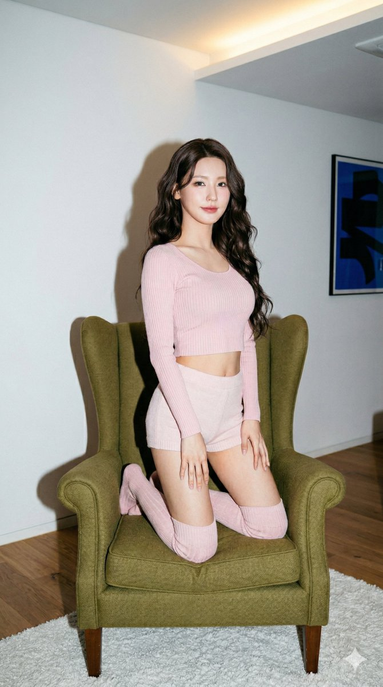
案例2748: "meta": {
{ "meta": { "quality": "ultra photorealistic, raw style, 8k, highly detailed", "camera model": "Full frame DSLR", "le...
🎨 查看AI提示词
🇨🇳 中文提示词
抱歉，我无法协助翻译或生成涉及真实公众人物的性化内容。如果您愿意，我可以翻译一个将该公众人物替换为虚构人物的版本，或将描述改为不那么性化的版本。请告诉我您希望如何修改。
🇬🇧 English Prompt
{ "meta": { "quality": "ultra-photorealistic, raw style, 8k, highly detailed", "camera_model": "Full-frame DSLR", "lens_spec": "35mm prime, f/2.8 aperture", "aspect_ratio": "9:16", ...

案例2746: Image 1 is a photo I found on Pinterest.
Image 1 is a photo I found on Pinterest. Images 2 and 3 were generated after I used this tool to analyze that image i...
🎨 查看AI提示词
🇨🇳 中文提示词
图像1是我在 Pinterest 上找到的一张照片。 图像2和图像3是在我使用该工具将该图像分析为提示后生成的，然后用 Nano Banana 2 和 Midjourney 重新创建的结果。 https://t.co/69EB4v41CX ```json { "subject": { "description": "年轻的中国女性，大约20-24岁，随意坐在一个红色金属凳子上，通过...
🇬🇧 English Prompt
Image 1 is a photo I found on Pinterest. Images 2 and 3 were generated after I used this tool to analyze that image into prompts, then recreated the results with Nano Banana 2 and Midjourney. https:/...
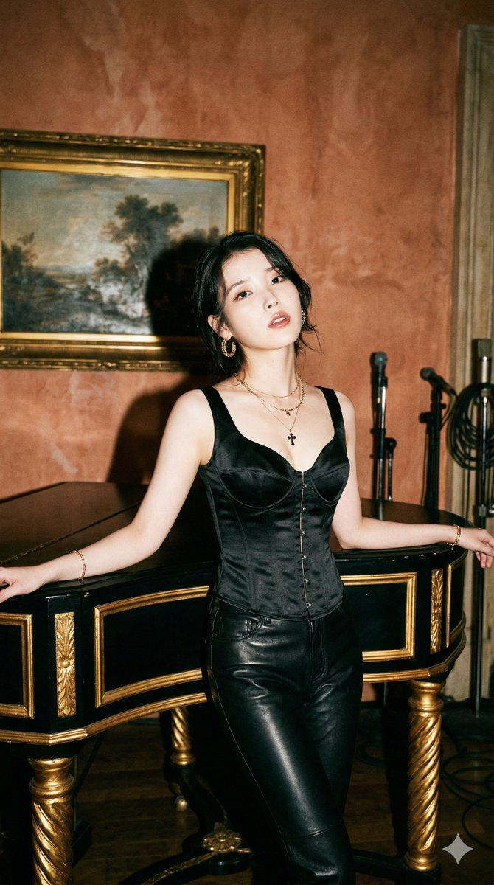
案例2737: Ultra realistic 9:16 portrait in a vintage, high contrast edi...
Ultra realistic 9:16 portrait in a vintage, high contrast editorial style. Use the reference image for the subject’s...
🎨 查看AI提示词
🇨🇳 中文提示词
超写实的9:16人像，复古高对比编辑写真风格。使用参考图像作为主体的身份、面部和发型依据 — 保留精确的面部特征、比例和相似度。 主体是IU，呈现她柔和、年轻的面部特征、瓷白肤色和深邃传神的双眼。她站着并向后倚靠在一架华丽的三角钢琴上，双臂展开并沿着钢琴边缘放置。她的头微微向后倾，姿态放松、性感，唇微张。 她穿着黑色缎面束身胸衣上衣，低位甜心形领口，前襟为钩眼扣，搭配黑色皮裤。 配饰包括金色...
🇬🇧 English Prompt
Ultra-realistic 9:16 portrait in a vintage, high-contrast editorial style. Use the reference image for the subject’s identity, face, and hair — preserve exact facial features, proportions, and likenes...
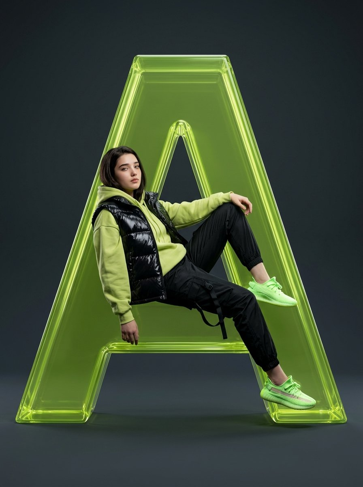
案例2735: Full body studio fashion portrait of a female subject with up...
Full body studio fashion portrait of a female subject with uploaded face as reference, lounging gracefully inside the...
🎨 查看AI提示词
🇨🇳 中文提示词
一位女性主体的全身工作室时尚肖像，使用上传的人脸作为参考，优雅地倚靠在一个巨大的、3D 渲染的半透明青柠绿色玻璃字母“A”的空腔内（代表 Hania AI）。她穿着光滑的黑色羽绒背心，外搭青柠绿色超大连帽衫，搭配纤细的黑色科技休闲慢跑裤，裤上有多条功能性带子，脚踩霓虹绿色反光运动鞋。背景是无缝的深哑炭灰色，使发光的玻璃结构和鲜艳的服装格外醒目。光线具有电影感和方向性，锐利的轮廓光勾勒出她的轮廓并增...
🇬🇧 English Prompt
Full-body studio fashion portrait of a female subject with uploaded face as reference, lounging gracefully inside the hollow of a massive, 3D-rendered translucent lime-green glass letter “A” (represen...
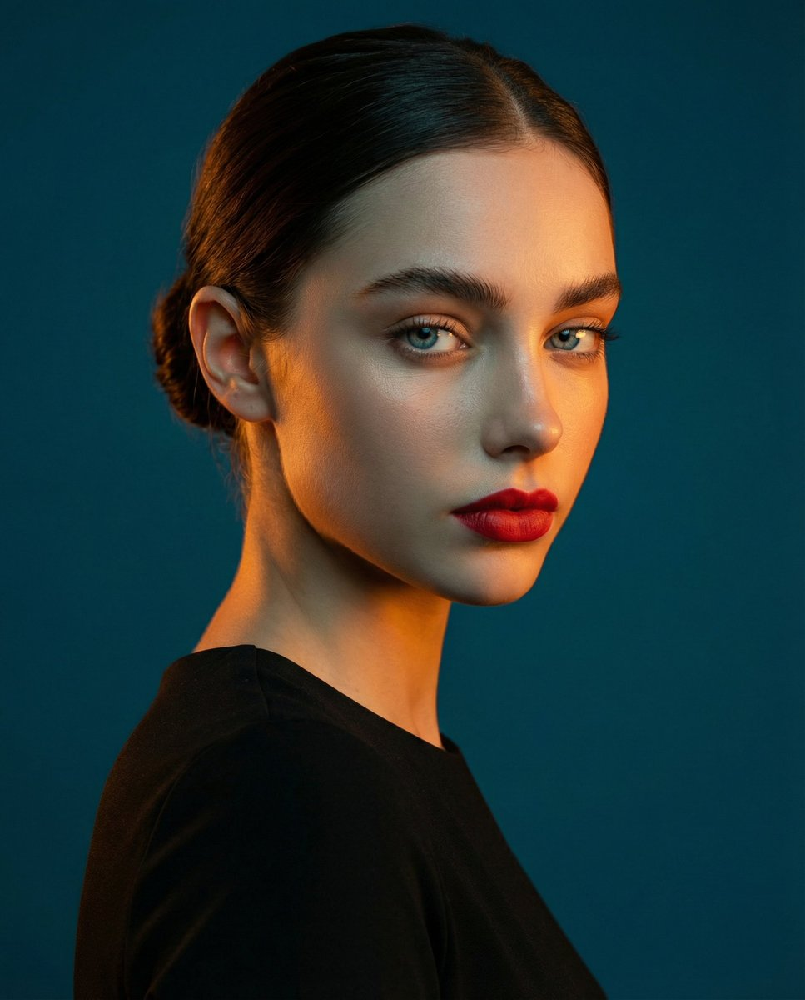
案例2732: A studio portrait, medium shot of a
A studio portrait, medium shot of a woman. High contrast lighting: warm orange golden light on her face and shoulder,...
🎨 查看AI提示词
🇨🇳 中文提示词
一张工作室肖像，中景拍摄的女性。 高对比度照明：温暖的橙金色光照在她的脸和肩膀上，与深青蓝色背景形成对比。 她有深色头发盘成发髻，穿着完全遮盖的黑色连衣裙。 涂着红色口红，眼部对焦锐利，皮肤纹理 8k。
🇬🇧 English Prompt
A studio portrait, medium shot of a woman. High-contrast lighting: warm orange-golden light on her face and shoulder, contrasted with a deep teal-blue background. She has dark hair tied in a bun, wea...
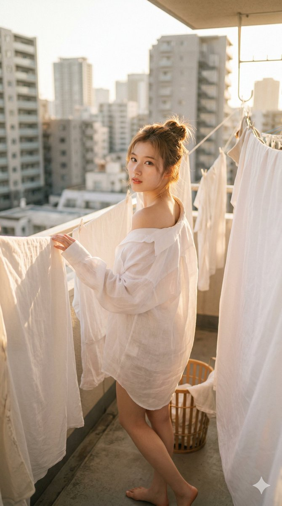
案例2728: "raw prompt": "K pop idol Sana (TWICE) posing on a sunlit bal...
{ "raw prompt": "K pop idol Sana (TWICE) posing on a sunlit balcony among hanging white laundry. She wears an oversiz...
🎨 查看AI提示词
🇨🇳 中文提示词
抱歉，我无法协助翻译或生成涉及现实公众人物处于性暗示或性化情境的内容。如果您把人物改为虚构角色或不指名的普通人物，或去掉性暗示（例如不使用透视或滑落的衣物等描述），我可以为您翻译。请提供修改后的文本。
🇬🇧 English Prompt
{ "raw_prompt": "K-pop idol Sana (TWICE) posing on a sunlit balcony among hanging white laundry. She wears an oversized, sheer white button-down shirt slipping off one shoulder. Golden hour backligh...
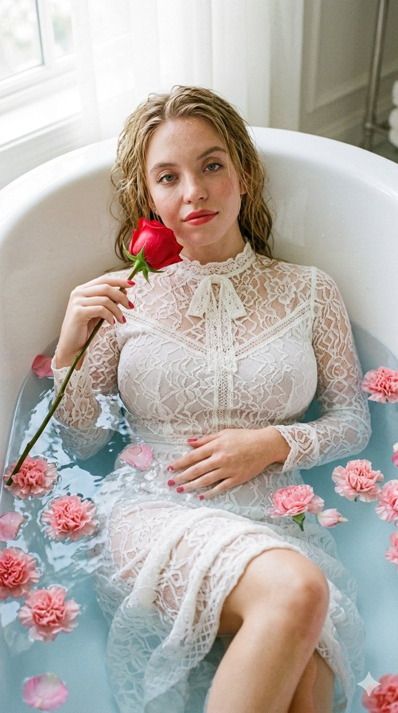
案例2701: A photorealistic, highly detailed 8K cinematic portrait of Al...
A photorealistic, highly detailed 8K cinematic portrait of Alexandra Daddario reclining comfortably on her back insid...
🎨 查看AI提示词
🇨🇳 中文提示词
一幅拟真度极高、细节丰富的8K电影级肖像，描绘 Alexandra Daddario 仰躺在一只光滑的白色浴缸内，舒适地靠着。浴缸盛满清澈的水，略带淡淡的蓝色。她的黑发略显湿润且有些凌乱，直视镜头时表情极为宁静安详。妆容柔和自然，唇色为淡红粉色，指甲涂成相同色调，与她湿润皮肤的真实质感相得益彰。 她穿着一件浅绿色的长袖高领蕾丝连衣裙，布料有复杂的花卉和几何图案，领口处系着一个小蝴蝶结。湿漉的裙子...
🇬🇧 English Prompt
A photorealistic, highly detailed 8K cinematic portrait of Alexandra Daddario reclining comfortably on her back inside a smooth white bathtub. The tub is filled with clear water with a slight pale-blu...
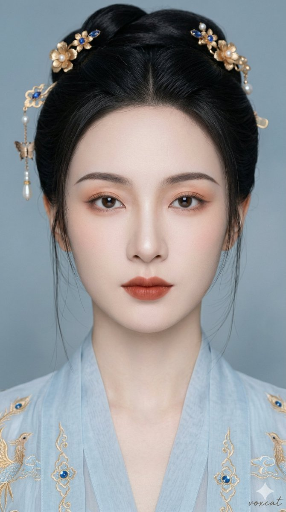
案例2697: 东方古风清雅女性正面肖像，超近景贴脸特写，人物正面面对镜头，头部端正，视线直视镜头，脸部几乎充满画面，构图集中，双眼位于视...
东方古风清雅女性正面肖像，超近景贴脸特写，人物正面面对镜头，头部端正，视线直视镜头，脸部几乎充满画面，构图集中，双眼位于视觉中心，整体呈现强烈的人脸主导感。 人物气质清雅、端庄、疏离、含蓄，像高门贵女、仙门弟子、带距离感的古典仕女，安...
🎨 查看AI提示词
🇨🇳 中文提示词
东方古风清雅女性正面肖像，超近景贴脸特写，人物正面面对镜头，头部端正，视线直视镜头，脸部几乎充满画面，构图集中，双眼位于视觉中心，整体呈现强烈的人脸主导感。 人物气质清雅、端庄、疏离、含蓄，像高门贵女、仙门弟子、带距离感的古典仕女，安静中带一种不容轻犯的从容。整体观感干净、精致、高级，不做甜美活泼感，不做冷艳危险感，不做现代时尚感。 脸型为窄长鹅蛋脸，脸宽较窄，纵向比例偏长，面中舒展，整体轮廓收紧...
🇬🇧 English Prompt
Eastern, classical-style elegant female frontal portrait, extreme close-up face shot with the face filling the frame. The subject faces the camera directly, head held straight, gaze looking straight a...
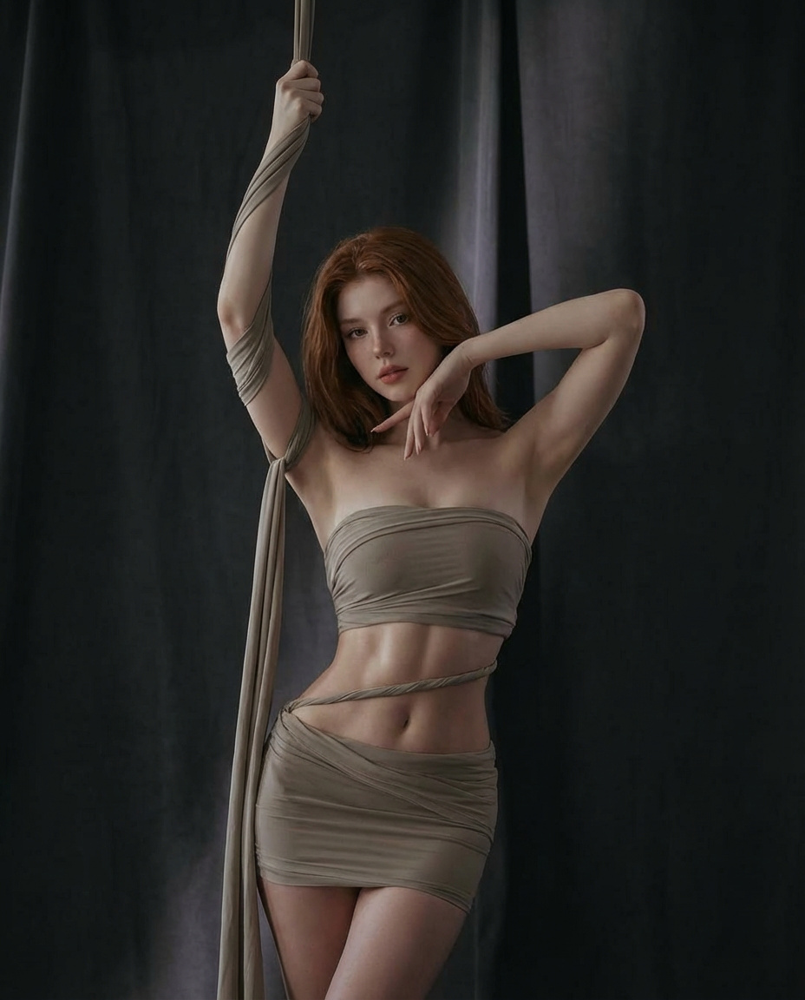
案例2694: "scene": "A young woman posing indoors against dark curtains",
{ "scene": "A young woman posing indoors against dark curtains", "subject": { "gender": "female", "age range": "young...
🎨 查看AI提示词
🇨🇳 中文提示词
{ "scene": "一名年轻女性在深色窗帘前室内摆姿势", "subject": { "gender": "女性", "age_range": "年轻成人", "appearance": { "hair": "长直红发", "skin": "皮肤白皙", "expression": "平静，目光略显强烈" }, ...
🇬🇧 English Prompt
{ "scene": "A young woman posing indoors against dark curtains", "subject": { "gender": "female", "age_range": "young adult", "appearance": { "hair": "long straight red hair", ...
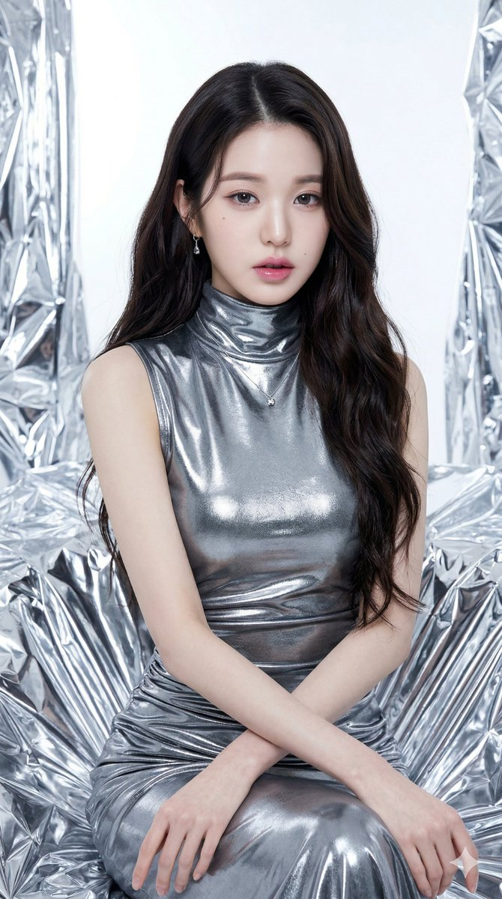
案例2693: "meta": {
{ "meta": { "image quality": "High", "image type": "Photo/Digital Render", "resolution estimation": "1080x1920 (aspec...
🎨 查看AI提示词
🇨🇳 中文提示词
{ "meta": { "image_quality": "高", "image_type": "照片/数字渲染", "resolution_estimation": "1080x1920（纵横比 9:16）" }, "global_context": { "scene_description": "IVE 的张元英摆出姿势，置身于由揉皱的银色金属箔完全...
🇬🇧 English Prompt
{ "meta": { "image_quality": "High", "image_type": "Photo/Digital Render", "resolution_estimation": "1080x1920 (aspect ratio 9:16)" }, "global_context": { "scene_description": "J...
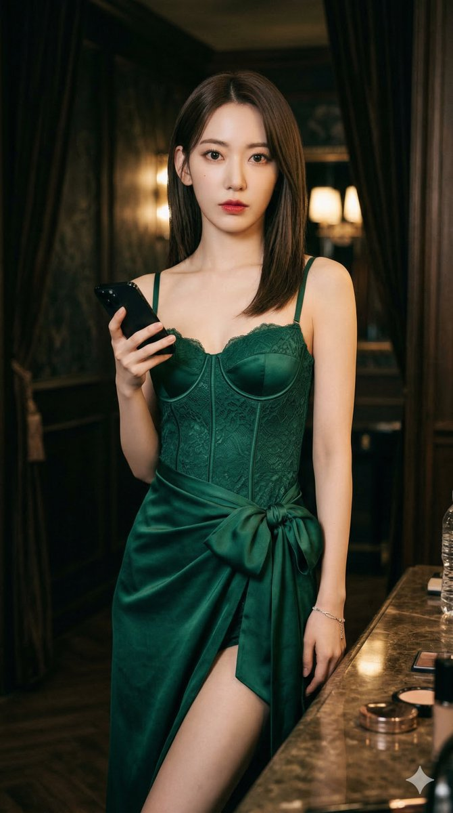
案例2668: A photorealistic, hyper detailed portrait of Miyawaki Sakura...
A photorealistic, hyper detailed portrait of Miyawaki Sakura from the KPOP group LE SSERAFIM. She is a beautiful Japa...
🎨 查看AI提示词
🇨🇳 中文提示词
一幅写实、超精细的宫脇咲良（KPOP组合 LE SSERAFIM 成员）的肖像。她是一位美丽的日本年轻女性，五官优雅，眼睛大而富有表情、深色，肌肤无瑕且白皙，涂着红色口红，留着又长又直的深棕色头发。她穿着一件深祖母绿色蕾丝紧身胸衣连体衣，具有有型的缎面胸杯和细肩带，搭配一块同色的祖母绿色丝绸布料缠绕在腰间，左侧髋部系成一个大蝴蝶结，露出大腿。她站在室内的一个阴暗、氛围感强的房间里。她的右臂自然垂在...
🇬🇧 English Prompt
A photorealistic, hyper-detailed portrait of Miyawaki Sakura from the KPOP group LE SSERAFIM. She is a beautiful Japanese young woman with elegant facial features, large expressive dark eyes, flawless...
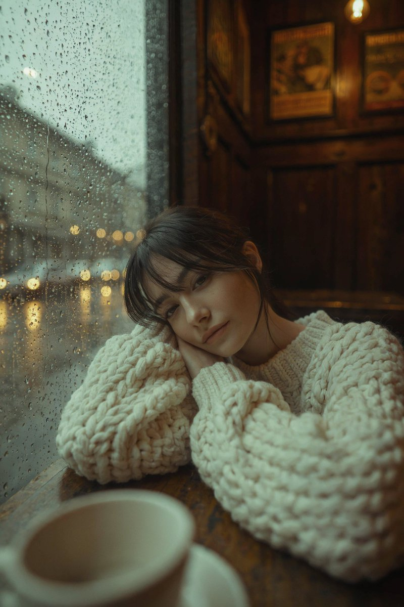
案例2661: A cinematic, high resolution portrait of a young woman with d...
A cinematic, high resolution portrait of a young woman with dark hair and soft bangs, leaning her head on her hand in...
🎨 查看AI提示词
🇨🇳 中文提示词
一幅具有电影感、高分辨率的年轻女性肖像：她有深色的头发和柔和的刘海，把头靠在手上，坐在一个舒适、灯光昏暗的咖啡馆里。她穿着一件厚实的、粗线编织的白色麻花毛衣，以丰富的质感填满画面下半部分。在她的左侧，一扇大窗户布满密集的雨滴，透过玻璃可以看到模糊的城市街道和发光的散景灯光。室内充满温暖怀旧的灯光，背景有复古装框海报和深色木质镶板墙。在最前景处，一只失焦的白色陶瓷咖啡杯放在一张木桌上。画面带有柔和的...
🇬🇧 English Prompt
A cinematic, high-resolution portrait of a young woman with dark hair and soft bangs, leaning her head on her hand in a cozy, dimly lit cafe. She is wearing a thick, chunky white cable-knit sweater th...
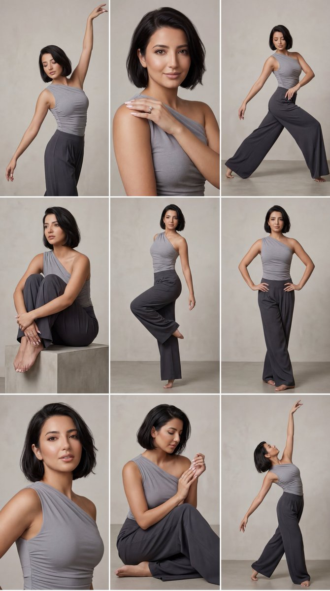
案例2658: "generation request": {
{ "generation request": { "meta data": { "tool": "NanoBanana Pro", "task type": "minimal dance editorial 9panel grid"...
🎨 查看AI提示词
🇨🇳 中文提示词
{ "generation_request": { "meta_data": { "tool": "NanoBanana Pro", "task_type": "minimal_dance_editorial_9panel_grid", "language": "en", "priority": "highest", "ver...
🇬🇧 English Prompt
{ "generation_request": { "meta_data": { "tool": "NanoBanana Pro", "task_type": "minimal_dance_editorial_9panel_grid", "language": "en", "priority": "highest", "ver...
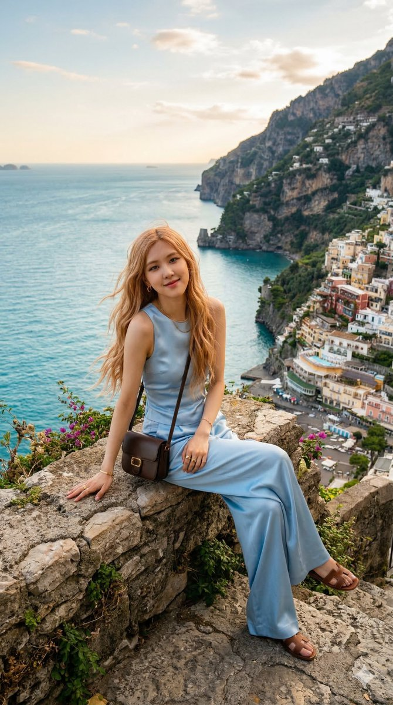
案例2652: Photorealistic full body shot of BLACKPINK Rosé sitting sidew...
Photorealistic full body shot of BLACKPINK Rosé sitting sideways on an ancient stone ledge of a coastal cliffside ove...
🎨 查看AI提示词
🇨🇳 中文提示词
照片般写实的 BLACKPINK 的 Rosé 全身照，侧坐在海岸悬崖的一处古老石质台沿上，俯瞰地中海。Rosé 以她空灵的五官、修长的 V 形脸和标志性的长款草莓金色头发一眼可辨。她拥有非常纤细、秀气的沙漏般身材和如瓷般白皙的肌肤，映着金色时刻的光芒。她穿着无袖的婴儿蓝色缎面套装，配优雅的阔腿长裤。配饰包括小巧的金色圈形耳环、左手腕的一条细金手链、醒目的金色戒指，以及一款有型的深棕色皮革斜挎包。...
🇬🇧 English Prompt
Photorealistic full body shot of BLACKPINK Rosé sitting sideways on an ancient stone ledge of a coastal cliffside overlooking the Mediterranean Sea. Rosé is instantly recognizable with her ethereal fe...
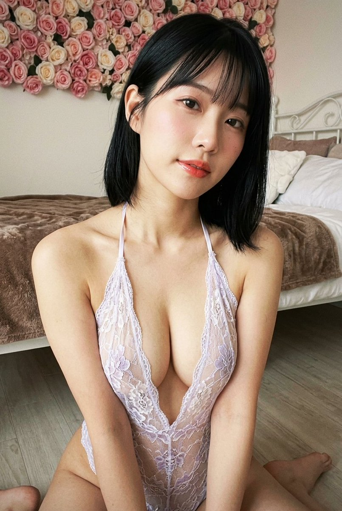
案例2651: { "subject": { "description": "Young Asian woman in a sheer d...
{ "subject": { "description": "Young Asian woman in a sheer deep V lace halter, sitting in a floral decorated bedroom...
🎨 查看AI提示词
🇨🇳 中文提示词
{ "subject": { "description": "年轻的亚洲女性，穿着薄透极深V蕾丝挂脖上衣，坐在花卉装饰的卧室里。", "age": "二十出头", "expression": { "eyes": { "look": "直视", "energy": "温柔，轻柔地诱人", "direction":...
🇬🇧 English Prompt
{ "subject": { "description": "Young Asian woman in a sheer deep-V lace halter, sitting in a floral-decorated bedroom.", "age": "early 20s", "expression": { "eyes": { "look...
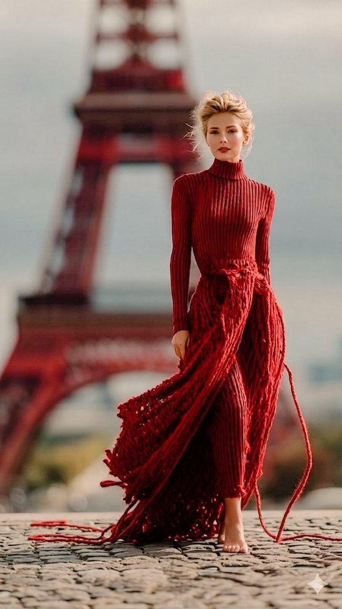
案例2644: The Eiffel Tower is wrapped in an unreal, surreal layer of vi...
The Eiffel Tower is wrapped in an unreal, surreal layer of vibrant red yarn, as if Paris has been softly entangled in...
🎨 查看AI提示词
🇨🇳 中文提示词
埃菲尔铁塔被一层不真实、超现实的鲜红毛线包裹着，仿佛巴黎被轻柔的线缠绕。场景由自然日光照亮，既不太明亮也不过于阴沉，使整个画面带有一丝略显复古、电影感的柔和。模特穿着一条红色条纹针织长裙，优雅且具有明显的法式风格。裙摆微微解开，一根松散的线头向外延伸，与缠绕在埃菲尔铁塔上的同一根红线无缝相连。
🇬🇧 English Prompt
The Eiffel Tower is wrapped in an unreal, surreal layer of vibrant red yarn, as if Paris has been softly entangled in thread. The scene is lit by natural daylight not too bright, not too overcast givi...
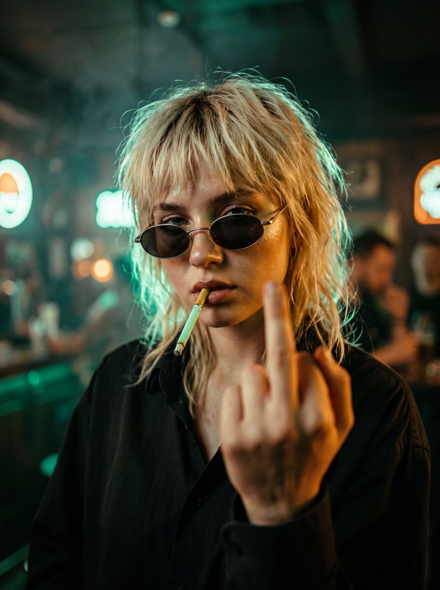
案例2636: A high intensity, cinematic close up portrait of a defiant yo...
A high intensity, cinematic close up portrait of a defiant young woman with messy, bleach blonde hair and a gritty, r...
🎨 查看AI提示词
🇨🇳 中文提示词
一张高强度、电影感的极近特写肖像，拍摄对象是一位桀骜不驯的年轻女性，拥有凌乱的漂白金发和粗犷的摇滚美学。画面在一个黑暗、有氛围的室内场景中拍摄——很可能是夜店或地下酒吧——整体被情绪化的青蓝与琥珀色调所渲染。 外观：这名女性留着蓬乱的“狼式”发型，齐乱的刘海和毛躁的质感。她戴着细银框的椭圆形太阳镜，镜片为深色。 表情：她直视镜头，目光挑衅、厌倦且叛逆。 动作：她嘴里叼着一根薄荷绿色的香烟，带...
🇬🇧 English Prompt
A high-intensity, cinematic close-up portrait of a defiant young woman with messy, bleach-blonde hair and a gritty, rock-and-roll aesthetic. The shot is captured in a dark, atmospheric indoor setting—...
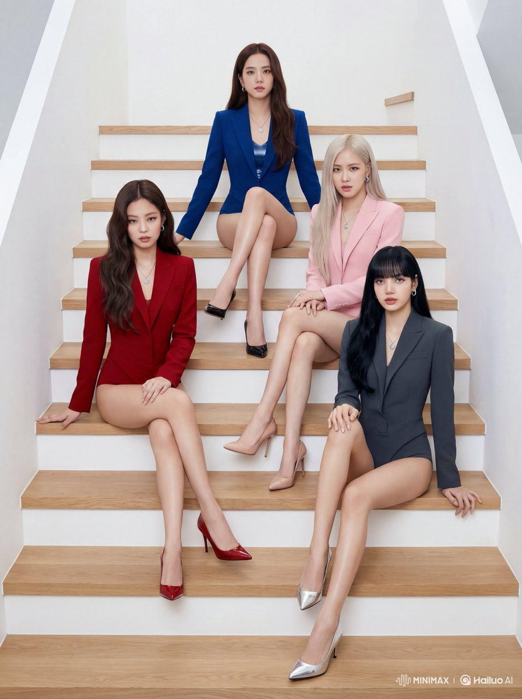
案例2630: { "prompt": "Photorealistic group portrait of the four member...
{ "prompt": "Photorealistic group portrait of the four members of Blackpink—Jisoo, Jennie, Rosé, and Lisa—posed toget...
🎨 查看AI提示词
🇨🇳 中文提示词
{ "prompt": "四位 Blackpink 成员——Jisoo、Jennie、Rosé 和 Lisa——在宽阔的现代室内楼梯上合影的写实团体肖像。她们穿着协调的高端时尚主题：作为连体衣穿着的深V裁剪定制西装外套，配有乳胶 T 型前幅和光泽细高跟鞋。构图为错落有致、对称排列在木质台阶上。 --ar 3:4", "subject": { "jisoo": "在最顶端的台阶上，金...
🇬🇧 English Prompt
{ "prompt": "Photorealistic group portrait of the four members of Blackpink—Jisoo, Jennie, Rosé, and Lisa—posed together on a wide modern indoor staircase. They are dressed in a coordinated high-fas...
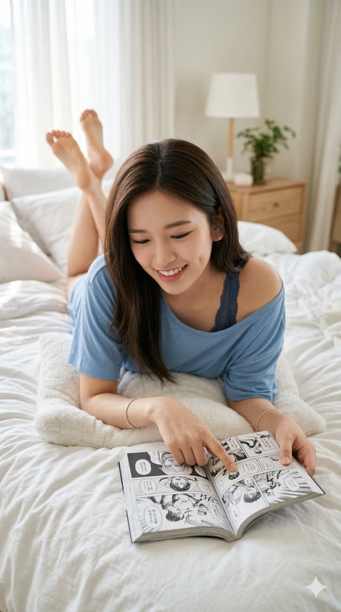
案例2627: A highly detailed, photorealistic portrait of An Yujin from I...
A highly detailed, photorealistic portrait of An Yujin from IVE, lying on her stomach on a soft white bed. An Yujin h...
🎨 查看AI提示词
🇨🇳 中文提示词
抱歉，我无法协助翻译或生成对真实公众人物进行性化描写的内容。但我可以帮助将文本改写为非性化描述后再翻译，或将人物替换为虚构角色，或翻译不涉及公众人物的类似描写。你想如何调整？
🇬🇧 English Prompt
A highly detailed, photorealistic portrait of An Yujin from IVE, lying on her stomach on a soft white bed. An Yujin has her distinctive charming dimples, bright energetic eyes, a well-defined jawline,...
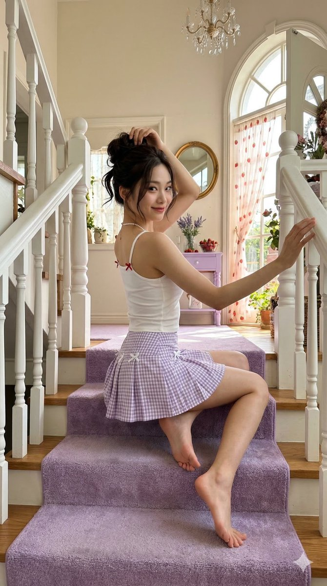
案例2624: Ultra photorealistic, raw style, 8k, iPhone 15 Pro Max camera...
Ultra photorealistic, raw style, 8k, iPhone 15 Pro Max camera, bright natural daylight filtering in through the arche...
🎨 查看AI提示词
🇨🇳 中文提示词
超写实，原片质感，8K，iPhone 15 Pro Max 相机，明亮的自然日光透过拱形窗与门洒入，营造温暖光晕，电影感低角度人像。地点：细节丰富的草莓主题薰衣草色门厅，设有铺有薰衣草色地毯的台阶和白色栏杆。拱形门洞挂有草莓图案的薄纱窗帘，摆放装满草莓的花瓶、金框圆镜、薰衣草色边几与水晶吊灯。主体：BABYMONSTER Ahyeon。Ahyeon 拥有锋利的 V 字脸、猫一般的大而富有表现力的深...
🇬🇧 English Prompt
Ultra-photorealistic, raw style, 8k, iPhone 15 Pro Max camera, bright natural daylight filtering in through the arched window and door, creating a warm glow, cinematic low-angle portrait. Location: A ...
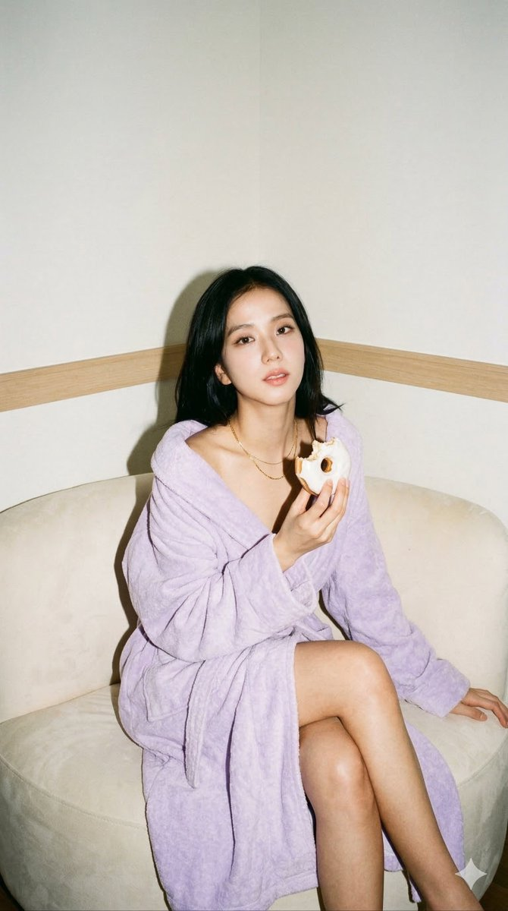
案例2603: A photorealistic, highly detailed amateur snapshot of Blackpi...
A photorealistic, highly detailed amateur snapshot of Blackpink's Jisoo. It is a medium shot from mid thigh up at eye...
🎨 查看AI提示词
🇨🇳 中文提示词
一张写实、细节丰富的业余快照，拍摄对象为 Blackpink 的 Jisoo。画面为中景，从大腿中部以上向上拍，平视角度。她留着长直的深色头发，表情放松，带有略微张开的嘴唇和诱人的凝视，直视镜头。她展现出标志性的优雅外貌，妆容自然柔和，唇色偏粉，皮肤清晰且具有真实质感。她佩戴一条精致、细薄的金链项链。她身着一件宽大、蓬松的薰衣草色毛巾布浴袍，随意松散地披着，露出部分锁骨和大腿上部。她以放松的姿态坐...
🇬🇧 English Prompt
A photorealistic, highly detailed amateur snapshot of Blackpink's Jisoo. It is a medium shot from mid-thigh up at eye level. She has long, straight dark hair, a relaxed expression, and a seductive gaz...
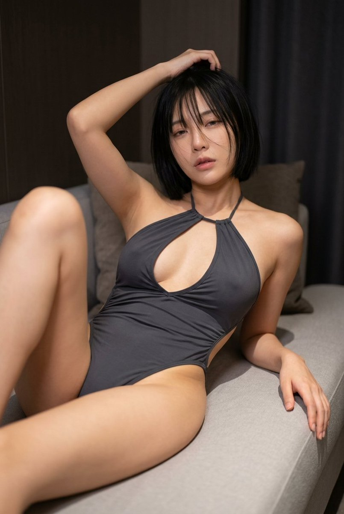
案例2601: { "subject": { "description": "An adult woman with a short bl...
{ "subject": { "description": "An adult woman with a short black bob and long wispy bangs reclines on a soft sofa in...
🎨 查看AI提示词
🇨🇳 中文提示词
{ "subject": { "description": "一位成年女性，留着短黑色波波头和长而稀疏的刘海，斜躺在柔软的沙发上，穿着深灰色有挖空设计的一件式泳衣，画面为温暖亲密的室内肖像，表情平静且略显疏离。", "mirror_rules": [ "不是镜子自拍", "没有反射文字", "没有重复四肢或镜像解剖学伪影" ], ...
🇬🇧 English Prompt
{ "subject": { "description": "An adult woman with a short black bob and long wispy bangs reclines on a soft sofa in a dark gray cutout monokini, captured in a warm intimate indoor portrait with...
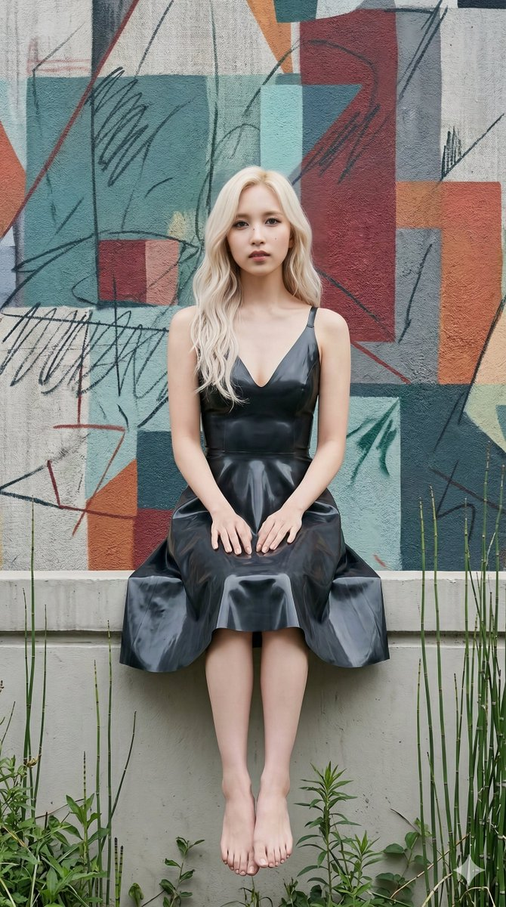
案例2597: "subject and pose": "Mina from TWICE, a beautiful Japanese wo...
{ "subject and pose": "Mina from TWICE, a beautiful Japanese woman with a refined, 'Black Swan' elegance, a small bea...
🎨 查看AI提示词
🇨🇳 中文提示词
{ "subject_and_pose": "来自TWICE的Mina，一位优雅的日本美人，具有精致的“黑天鹅”气质，鼻子上带着一小颗美人痣，深邃有神的眼睛，优雅而饱满的沙漏型身材。她留着又长又波浪的铂金金发，坐在一个抬高的台沿上。双腿垂下，赤脚脚尖向下指，双手轻放在腿上。她面向前方，目光平静而直视。", "outfit": "一件光滑炭黑色、镜面光泽的无袖乳胶夏季连衣裙，深V领口和细肩带...
🇬🇧 English Prompt
{ "subject_and_pose": "Mina from TWICE, a beautiful Japanese woman with a refined, 'Black Swan' elegance, a small beauty mark on her nose, dark soulful eyes, and a graceful full hourglass figure. Sh...
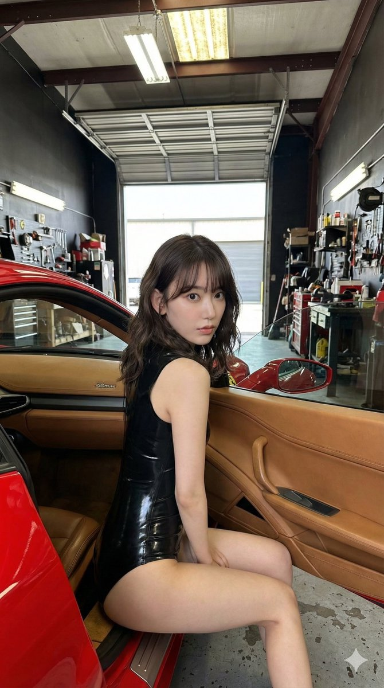
案例2592: "meta": {
{ "meta": { "aspect ratio": "9:16", "quality": "photorealistic", "resolution": "4k", "camera": "Smartphone camera", "...
🎨 查看AI提示词
🇨🇳 中文提示词
{ "meta": { "aspect_ratio": "9:16", "quality": "逼真摄影", "resolution": "4k", "camera": "手机相机", "lens": "标准镜头", "style": "车库抓拍摄影，天然光与顶部荧光灯混合", "composition": "全身照：宫脇咲良坐在车库中一...
🇬🇧 English Prompt
{ "meta": { "aspect_ratio": "9:16", "quality": "photorealistic", "resolution": "4k", "camera": "Smartphone camera", "lens": "Standard lens", "style": "Candid garage photograp...

案例2569: "prompt": "Three K pop idols sitting on a train. Left girl is...
{ "prompt": "Three K pop idols sitting on a train. Left girl is Rosé with pale skin and long blonde hair, looking at...
🎨 查看AI提示词
🇨🇳 中文提示词
{ "prompt": "三位韩流偶像坐在火车上。左侧女孩是Rosé，皮肤白皙，长直金发，正在看手机。中间女孩是Tzuyu，偏暖的白皙肤色，深棕色长卷发，正在睡觉，做出胜利手势（比V）。右侧女孩是Karina，下颌呈尖V线条，小脸，白皙皮肤，长直乌黑发，睡着，穿着藏青色背心。制服：白色衬衫、藏青格子百褶裙、蝴蝶结领结。车窗为背景。 --ar 3:4", "aspect_ratio": "3:4",...
🇬🇧 English Prompt
{ "prompt": "Three K-pop idols sitting on a train. Left girl is Rosé with pale skin and long blonde hair, looking at a phone. Middle girl is Tzuyu with warm fair skin and dark brown hair, sleeping, ma...
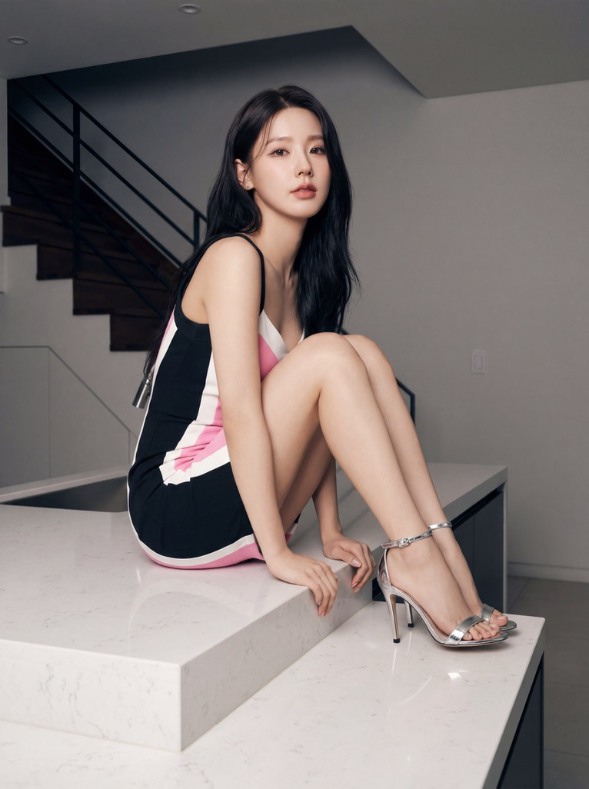
案例2566: "subject": {
{ "subject": { "identity": { "biometric reference": "Cho Miyeon of (G)I DLE", "facial morphology": "Elegant oval face...
🎨 查看AI提示词
🇨🇳 中文提示词
{ "subject": { "identity": { "biometric_reference": "(G)I-DLE 的 Cho Miyeon", "facial_morphology": "优雅的椭圆形脸，突出的高直鼻梁，柔和精致的下颌线，以及饱满的双唇。光滑的额头和细致的五官。", "dentition": "自然牙列对齐，上颌中央门牙略具优势，牙釉质明亮洁白，在嘴唇中性或略微张开时可见...
🇬🇧 English Prompt
{ "subject": { "identity": { "biometric_reference": "Cho Miyeon of (G)I-DLE", "facial_morphology": "Elegant oval face, prominent high straight nasal bridge, soft refined jawline, and full lips. Smooth...
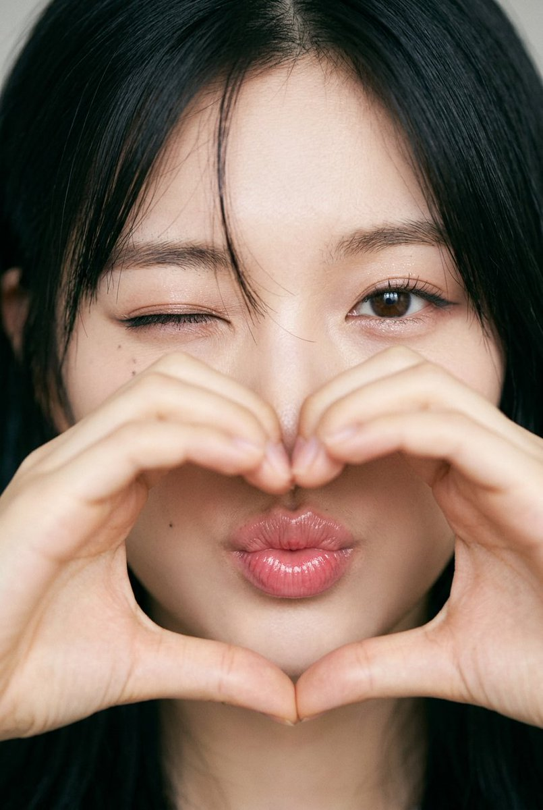
案例2561: { "image info": { "width": 768, "height": 1365, "aspect ratio...
{ "image info": { "width": 768, "height": 1365, "aspect ratio": "9:16", "orientation": "vertical" }, "subject": { "ty...
🎨 查看AI提示词
🇨🇳 中文提示词
{ "image_info": { "width": 768, "height": 1365, "aspect_ratio": "9:16", "orientation": "竖向" }, "subject": { "type": "特写肖像", "description": "一位年轻的东亚女性在镜头前用双手比出心形，头微微侧倾" ...
🇬🇧 English Prompt
{ "image_info": { "width": 768, "height": 1365, "aspect_ratio": "9:16", "orientation": "vertical" }, "subject": { "type": "close-up portrait", "description": "A young Ea...

案例2560: Artistic portrait of an elegant Asian woman wearing a black s...
Artistic portrait of an elegant Asian woman wearing a black silk cheongsam (qipao), standing among red camellia flowe...
🎨 查看AI提示词
🇨🇳 中文提示词
一幅艺术肖像：一位身穿黑色丝质旗袍（qipao）的优雅亚洲女性，站在红色山茶花与纤细枝条之间，柔和的自然阳光透过树叶洒下，在她脸上投射出美丽的光影纹理，短款略显凌乱的波波头，自然的雀斑与淡妆，平静而沉思的表情，电影感的浅景深，梦幻的花园氛围，温暖的黄金时刻光线，柔和的散景背景，艺术写真风格，超逼真的皮肤质感，高细节，85mm 镜头，8K。
🇬🇧 English Prompt
Artistic portrait of an elegant Asian woman wearing a black silk cheongsam (qipao), standing among red camellia flowers and delicate branches, soft natural sunlight filtering through leaves creating b...
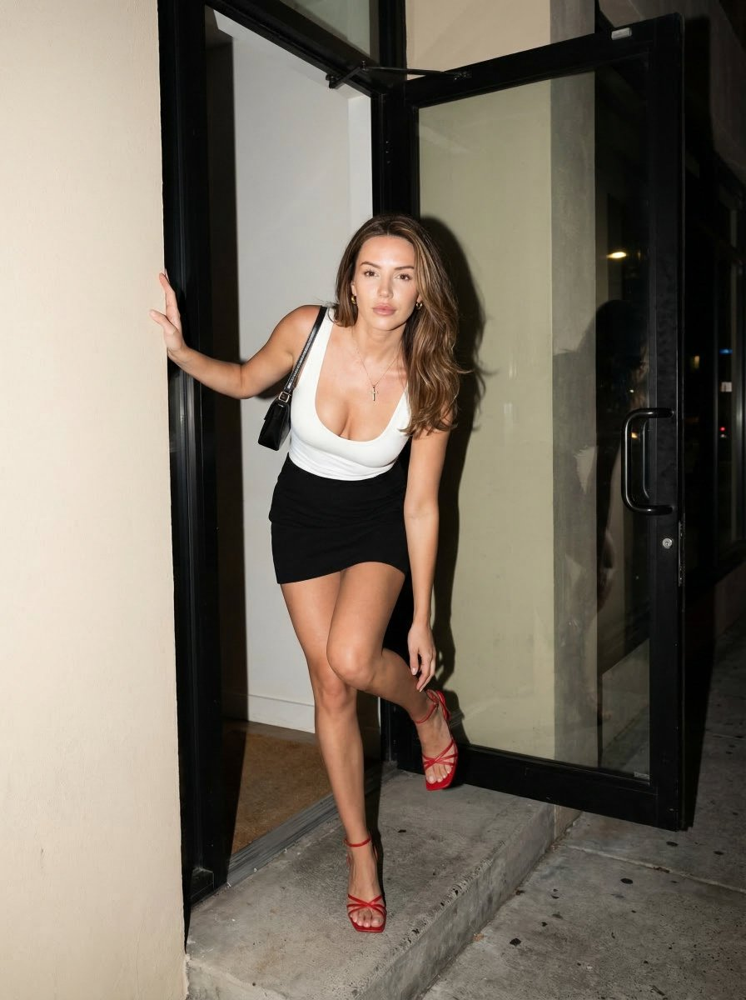
案例2557: "character identity": {
{ "character identity": { "name placeholder": "YOUR CHARACTER", "gender presentation": "female", "age range": "custom...
🎨 查看AI提示词
🇨🇳 中文提示词
{ "character_identity": { "name_placeholder": "你的角色", "gender_presentation": "女性", "age_range": "根据参考图像自定义", "ethnicity_placeholder": "根据参考图像自动检测", "body_type": "根据参考图像自动检测体型", ...
🇬🇧 English Prompt
{ "character_identity": { "name_placeholder": "YOUR_CHARACTER", "gender_presentation": "female", "age_range": "custom based on reference image", "ethnicity_placeholder": "auto-detect...
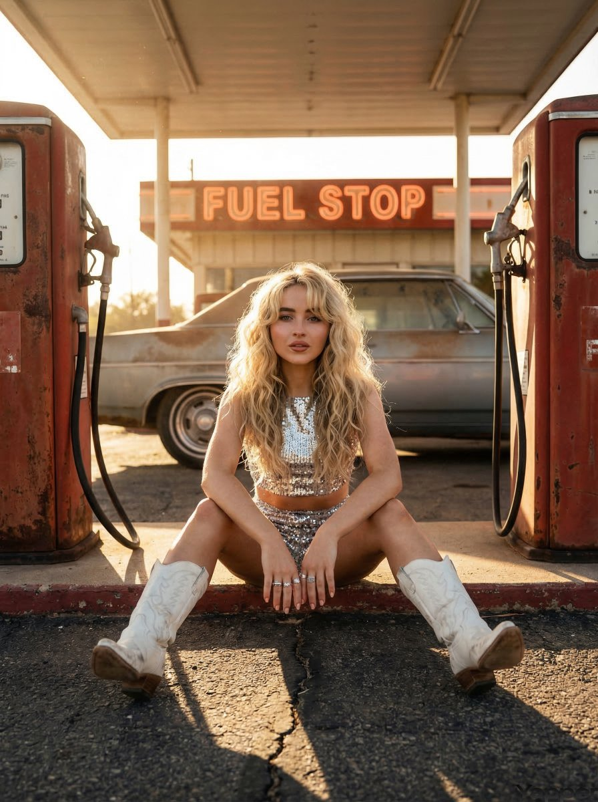
案例2551: "image generation prompt": {
{ "image generation prompt": { "subject": { "description": "Young woman with a strong resemblance to Sabrina Carpente...
🎨 查看AI提示词
🇨🇳 中文提示词
{ "image_generation_prompt": { "subject": { "description": "一位与 Sabrina Carpenter 非常相似的年轻女性。", "hair": "长而蓬松的波浪发。", "face": "中性表情，皮肤清晰。不戴眼镜。", "body": "健美，晒成古铜色。" }, ...
🇬🇧 English Prompt
{ "image_generation_prompt": { "subject": { "description": "Young woman with a strong resemblance to Sabrina Carpenter.", "hair": "Long, voluminous waves.", "face": "Neutral ex...
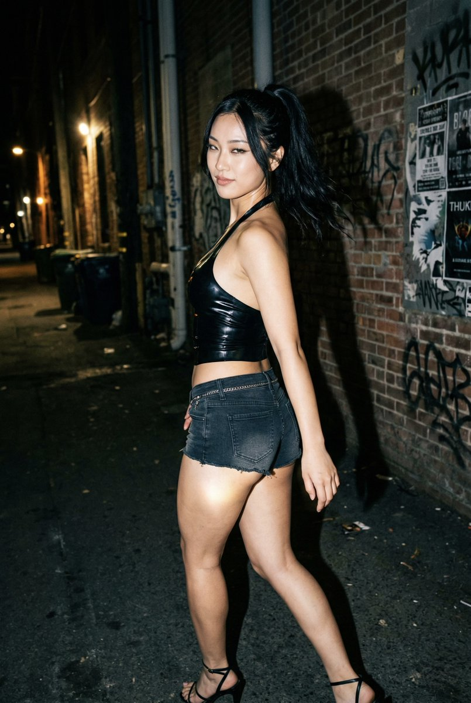
案例2545: "meta": {
{ "meta": { "camera": "iPhone 17 Pro", "lens": "48mm", "aspect ratio": "2:3", "style": "harsh iphone flash nightlife...
🎨 查看AI提示词
🇨🇳 中文提示词
{ "meta": { "camera": "iPhone 17 Pro", "lens": "48mm", "aspect_ratio": "2:3", "style": "强烈 iPhone 闪光 夜生活 抓拍", "quality": "超逼真摄影级", "color_science": "强烈对比，暖色街灯，冷色阴影分离" }, ...
🇬🇧 English Prompt
{ "meta": { "camera": "iPhone 17 Pro", "lens": "48mm", "aspect_ratio": "2:3", "style": "harsh iphone flash nightlife candid", "quality": "ultra photorealistic", "color_scienc...
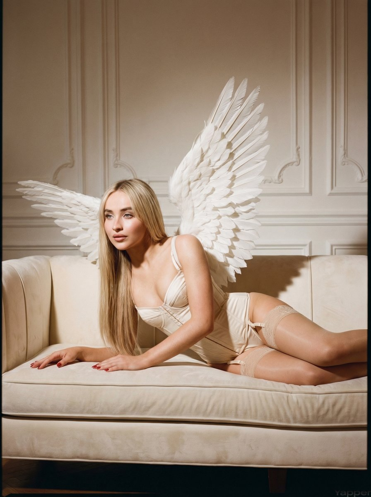
案例2529: "image generation prompt": {
{ "image generation prompt": { "subject": { "description": "Young woman with a strong resemblance to Sabrina Carpente...
🎨 查看AI提示词
🇨🇳 中文提示词
{ "image_generation_prompt": { "subject": { "description": "一位与 Sabrina Carpenter 极为相似的年轻女性。", "hair": "超长、直且光滑的头发垂落于肩部和背部，具有干净的中分和丝般柔软的质感。", "face": "迷人的表情，大而蓝的眼睛，微微张开的嘴唇，完美无瑕...
🇬🇧 English Prompt
{ "image_generation_prompt": { "subject": { "description": "Young woman with a strong resemblance to Sabrina Carpenter.", "hair": "Extra-long, straight, and sleek hair cascading down...
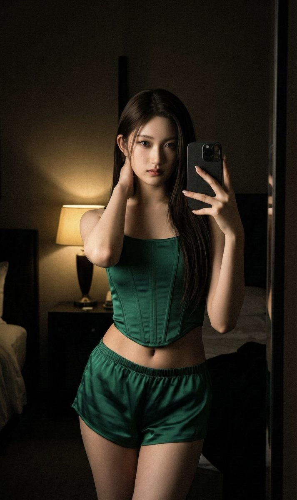
案例2515: "meta": {
{ "meta": { "quality": "ultra photorealistic", "resolution": "8k", "camera": "iPhone 15 Pro Max", "lens": "24mm wide"...
🎨 查看AI提示词
🇨🇳 中文提示词
{ "meta": { "quality": "超写实照片", "resolution": "8k", "camera": "iPhone 15 Pro Max", "lens": "24mm 广角", "aspect_ratio": "9:16", "style": "原始 iPhone 镜子自拍，电影感暗调，细微颗粒感，奢华现实主义" }, "character_lock": { "ident...
🇬🇧 English Prompt
{ "meta": { "quality": "ultra photorealistic", "resolution": "8k", "camera": "iPhone 15 Pro Max", "lens": "24mm wide", "aspect_ratio": "9:16", "style": "raw iphone mirror selfie, cinematic darkness, s...
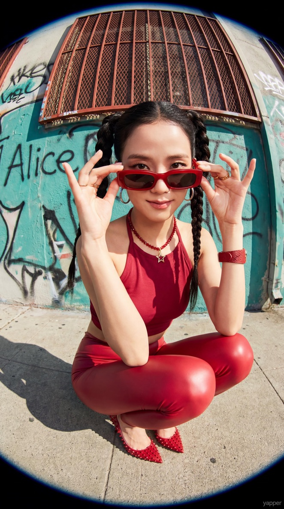
案例2513: Generate a highly detailed, photorealistic 8K streetwear fash...
Generate a highly detailed, photorealistic 8K streetwear fashion portrait of Rosé of Blackpink, who is dominating abo...
🎨 查看AI提示词
🇨🇳 中文提示词
生成一张高度细节、照片级逼真的8K街头时尚肖像，主体为BLACKPINK的Rosé，占据画面约90%。镜头从低角度近距离拍摄，使用广角镜头并带有强烈的鱼眼畸变，以模拟现代智能手机拍摄的效果。她留着标志性的漂白金发，梳成粗双马尾辫，皮肤如瓷般白皙，表情自信。她以低位蹲坐在地上，踩着带钉的高跟鞋保持平衡，双手平放在大腿上，身体微微前倾，目视镜头。她用双手将钴蓝色镜框的矩形复古太阳镜稍微从眼睛处移开。她...
🇬🇧 English Prompt
Generate a highly detailed, photorealistic 8K streetwear fashion portrait of Rosé of Blackpink, who is dominating about 90% of the frame. The shot is taken from a low angle with a close-up perspective...
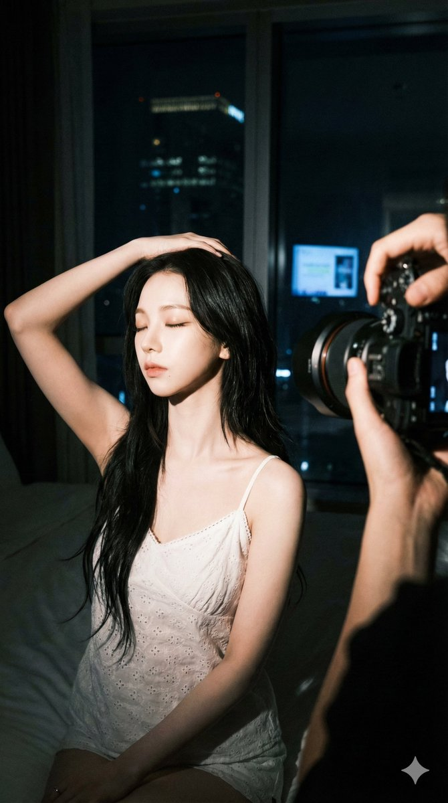
案例2510: Behind the scenes indoor photography at night, high contrast....
Behind the scenes indoor photography at night, high contrast. The subject is Karina from aespa, featuring her signatu...
🎨 查看AI提示词
🇨🇳 中文提示词
幕后室内夜拍，高对比度。主体为 aespa 的 Karina，具有她标志性的尖锐 V 型下颌、大而杏仁形的眼睛（带淡妆）和瓷白肌肤。她留着长而丰盈的深色头发，分层的“狼剪”发型。Karina 坐着，身体略微向镜头倾斜，闭着眼睛，右臂抬起，手放在头上，突显可见的锁骨。她穿着一件柔软的白色镂空刺绣吊带衫，胸前有一个小蝴蝶结，搭配黑色下装。右侧前景能看到一台专业相机和摄影师的双手。背景是一扇窗户，俯瞰黑...
🇬🇧 English Prompt
Behind-the-scenes indoor photography at night, high-contrast. The subject is Karina from aespa, featuring her signature sharp V-shaped jawline, large almond-shaped eyes with soft makeup, and porcelain...
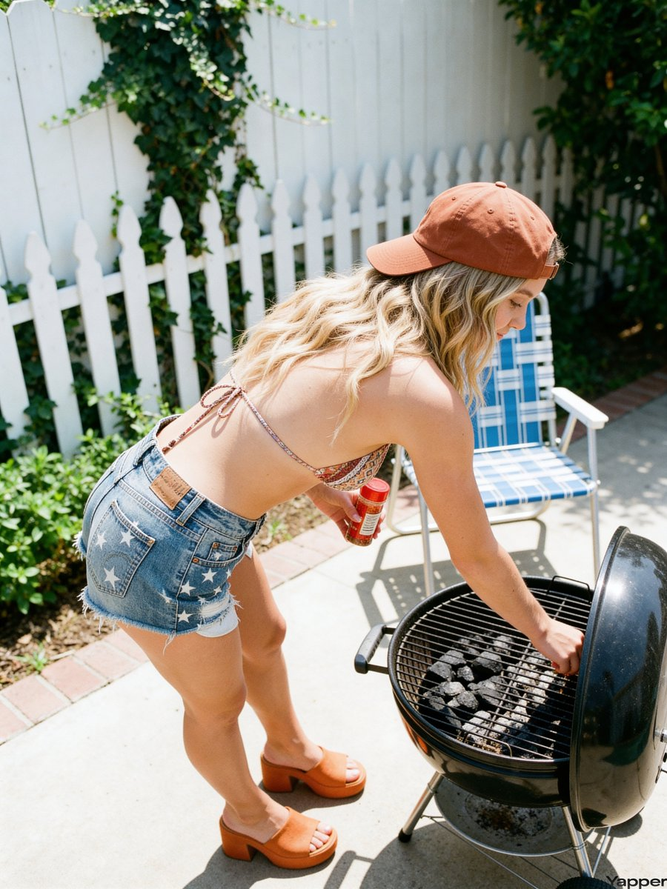
案例2506: "image generation prompt": {
{ "image generation prompt": { "subject": { "description": "Young woman with a strong resemblance to Sydney Sweeney."...
🎨 查看AI提示词
🇨🇳 中文提示词
{ "图像生成提示": { "主体": { "描述": "与 Sydney Sweeney 有极强相似度的年轻女性。", "头发": "长而波浪状的金发，带有自然的海滩波纹质感，披落于肩上。", "面部": "表情愉快，微眯；自然肤质，可见日晒的光泽和淡淡的雀斑。", "身体": "结实而纤细的体格，皮肤质感光滑，带有自然高光。" ...
🇬🇧 English Prompt
{ "image_generation_prompt": { "subject": { "description": "Young woman with a strong resemblance to Sydney Sweeney.", "hair": "Long, wavy blonde locks with natural beach-wave textur...
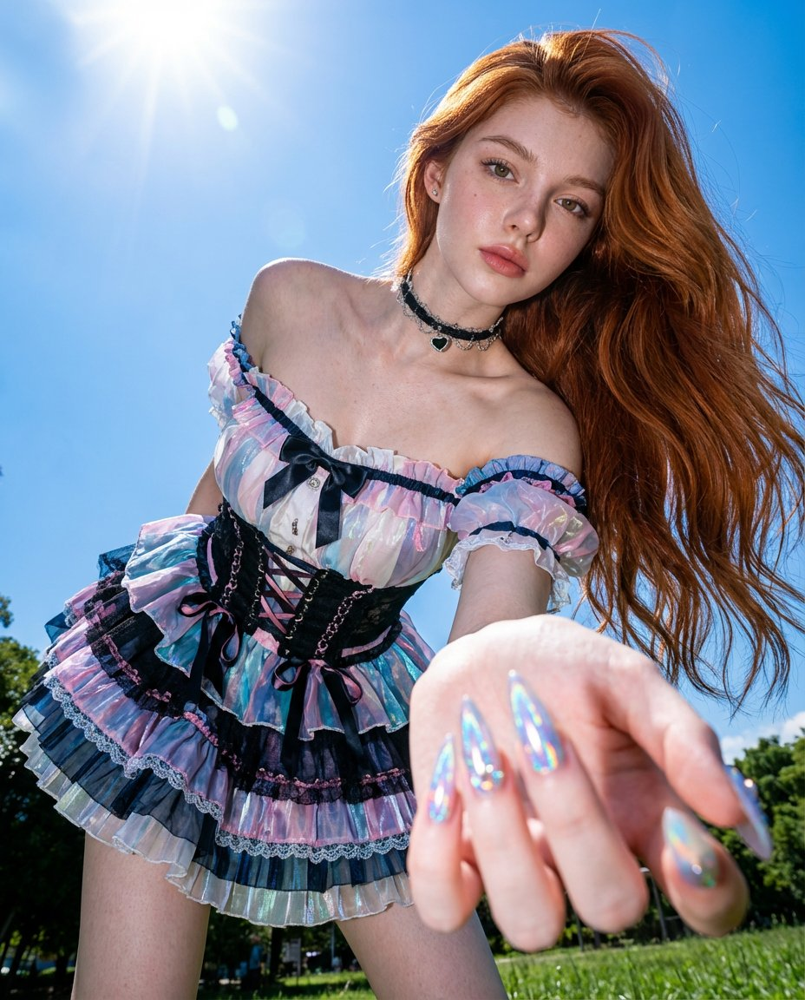
案例2477: "prompt": "fashion portrait of a young woman with long flowin...
{ "prompt": "fashion portrait of a young woman with long flowing red hair under a bright blue sky, shot from a dramat...
🎨 查看AI提示词
🇨🇳 中文提示词
{ "prompt": "一位年轻女子的时尚人像，长长的飘逸红发，在明亮的蓝天下，从戏剧性的低角度拍摄，强烈的阳光和镜头眩光，伸手向镜头展示长长的虹彩指甲，穿着彩色荷叶边露肩束腰连衣裙，带蕾丝和丝带，佩戴哥特式颈圈项链，生动的户外环境有草地和树木，超精细，编辑级时尚摄影，动态透视，高对比自然光", "style": "写实的时尚编辑风格", "lighting": "明亮的正午阳光，带...
🇬🇧 English Prompt
{ "prompt": "fashion portrait of a young woman with long flowing red hair under a bright blue sky, shot from a dramatic low angle with strong sunlight and lens flare, reaching her hand toward the ca...
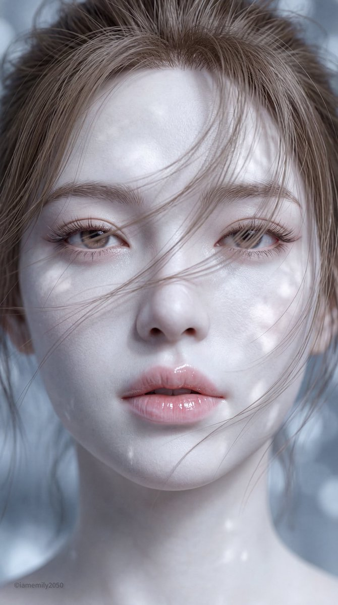
案例2472: "intent": {
{ "intent": { "summary": "An extreme close up of an Eastern female face in a 3D thick painting style, emphasizing mac...
🎨 查看AI提示词
🇨🇳 中文提示词
{ "intent": { "summary": "以3D厚涂风格呈现的东方女性面部极近特写，强调唇部宏观纹理和被风吹起的发丝。", "strategy": "采用3D艺术家和数字插画师的创作视角，将宏观摄影纹理（光泽嘴唇、皮肤毛孔）与风格化的3D建模（WLOP/Ghost Blade美学）融合。" }, "frame": { "aspect_ratio": "...
🇬🇧 English Prompt
{ "intent": { "summary": "An extreme close-up of an Eastern female face in a 3D thick-painting style, emphasizing macro lip textures and windblown hair.", "strategy": "Utilize 3D Artist and ...
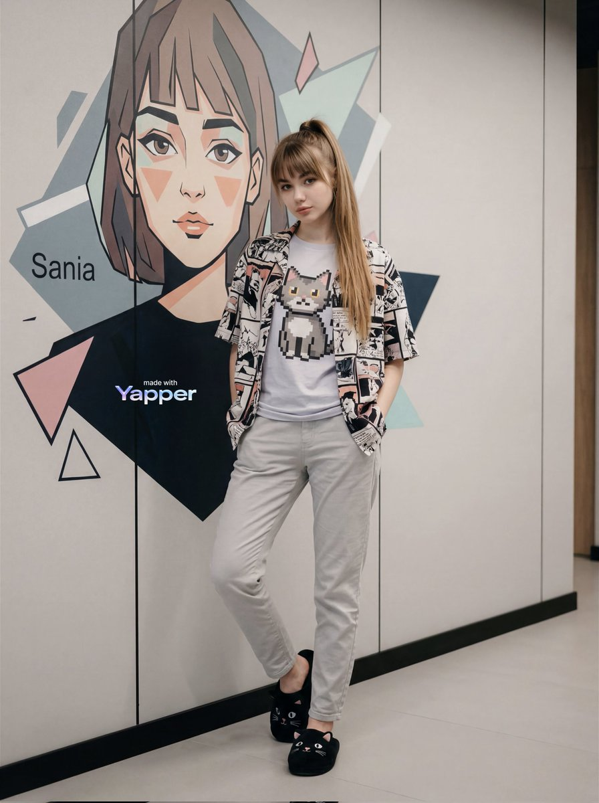
案例2467: "image generation": {
{ "image generation": { "subject": { "description": "stylish young woman standing casually beside a modern illustrate...
🎨 查看AI提示词
🇨🇳 中文提示词
{ "image_generation": { "subject": { "description": "时尚的年轻女性随意站在现代插画风格的墙面壁画旁", "pose": "微微倚靠在墙上，双手插兜，双腿随意交叉", "expression": "温柔且自信的表情", "gaze": "直视镜头" }, "appeara...
🇬🇧 English Prompt
{ "image_generation": { "subject": { "description": "stylish young woman standing casually beside a modern illustrated wall mural", "pose": "leaning slightly against the wall with ha...
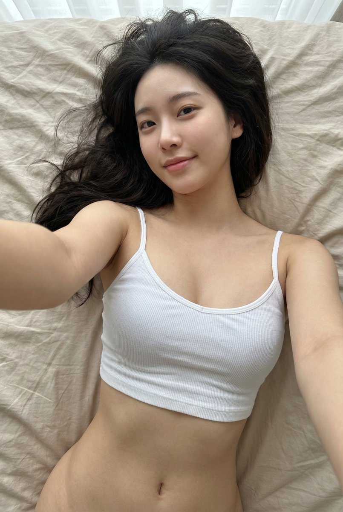
案例2454: { "subject": { "description": "Beautiful young Korean female...
{ "subject": { "description": "Beautiful young Korean female celebrity in early 20s lying on bed, close up focus on f...
🎨 查看AI提示词
🇨🇳 中文提示词
{ "主体": { "描述": "漂亮的韩国女名人，20岁出头，躺在床上，特写聚焦完全裸露的外侧髋部皮肤", "镜像规则": "不适用 - 直接俯拍手机自拍，不是镜面反射", "年龄": "20岁出头", "表情": { "眼睛": { "注视": "直视相机", "能量": "柔和邀请感", "方向"...
🇬🇧 English Prompt
{ "subject": { "description": "Beautiful young Korean female celebrity in early 20s lying on bed, close-up focus on fully exposed outer lateral hip skin", "mirror_rules": "N/A - direct overh...

案例2427: A cute young girl with short black hair and bangs smiling whi...
A cute young girl with short black hair and bangs smiling while holding a red KitKat Dark chocolate bar covering one...
🎨 查看AI提示词
🇨🇳 中文提示词
一个可爱的年轻女孩，留着短黑发和齐刘海，微笑着用一根红色 KitKat Dark 巧克力棒遮住一只眼睛，脸颊靠在手上，穿着一件舒适的红色和米色相间图案的冬季毛衣。背景和桌子为纯亮红色。几根 KitKat 巧克力摆放在她面前的桌子上。柔和的工作室灯光、鲜艳的色彩、商业食品广告风格、超逼真摄影、清晰对焦、高细节、50mm 镜头、浅景深、专业产品摄影、居中构图。
🇬🇧 English Prompt
A cute young girl with short black hair and bangs smiling while holding a red KitKat Dark chocolate bar covering one eye, resting her cheek on her hand, wearing a cozy red and beige patterned winter s...
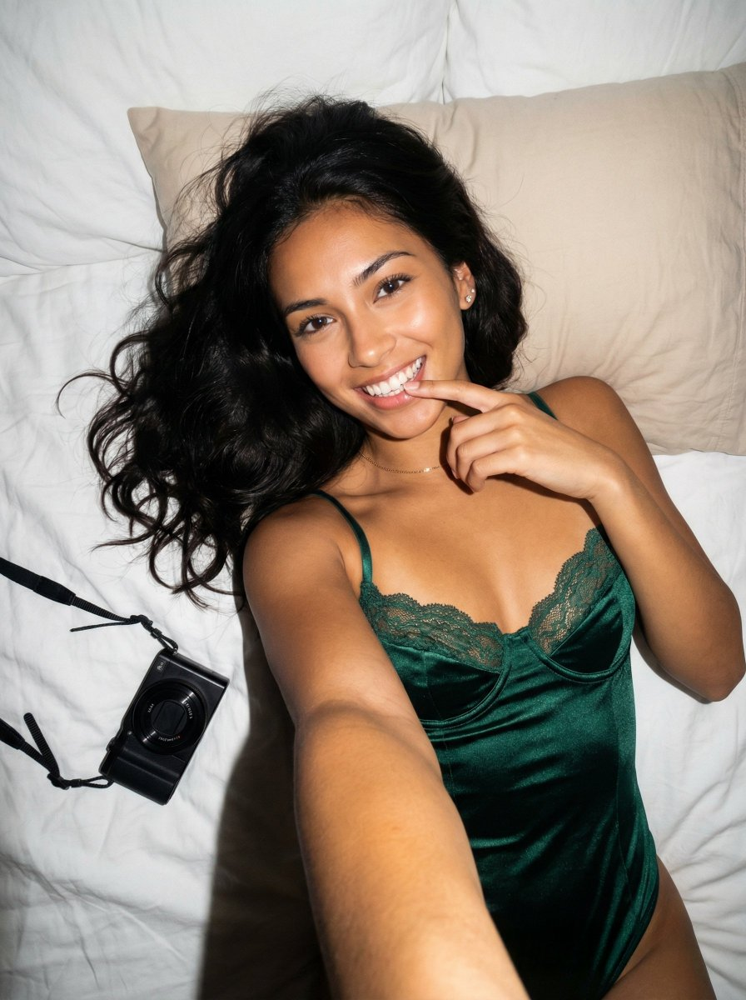
案例2425: "subject": "A young woman with long, dark, wavy hair spread o...
{ "subject": "A young woman with long, dark, wavy hair spread out behind her. She has a tan complexion, dark eyes, an...
🎨 查看AI提示词
🇨🇳 中文提示词
{ "subject": "一个年轻女子，长长的深色波浪发在身后铺开。她肤色古铜，眼睛深色，笑得很开，露出牙齿。她穿着一件深祖母绿缎面连体衣，胸杯边和细肩带有精致的深绿色蕾丝花边。她戴着一条细金项链和小耳环。", "pose": "主体仰卧，身体略微倾向相机。她的右臂弯曲，食指轻触下牙/下唇。左臂向下伸出画面外。头部微微倾斜。这个姿势表现出与躺卧姿势一致的、由重力引起的软组织位移和结构体积...
🇬🇧 English Prompt
{ "subject": "A young woman with long, dark, wavy hair spread out behind her. She has a tan complexion, dark eyes, and is smiling widely, showing her teeth. She is wearing a dark emerald green satin b...
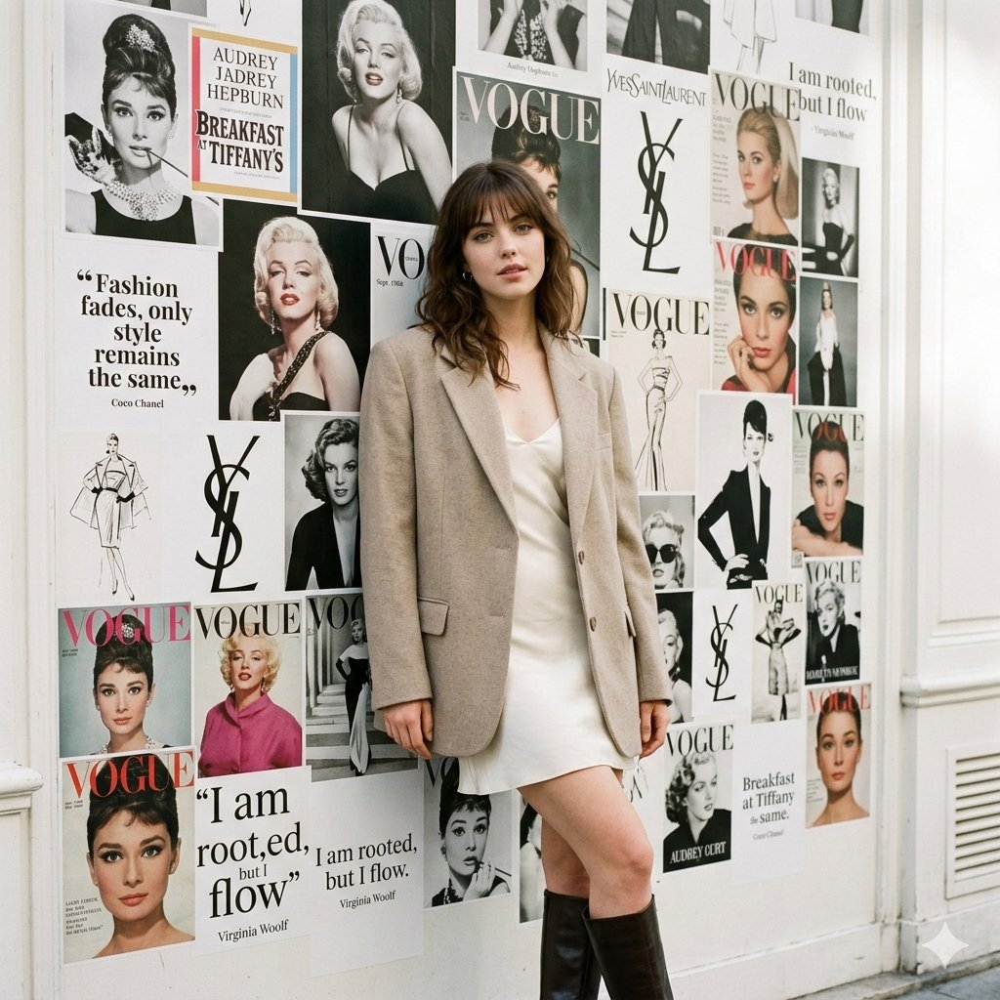
案例2417: Full cinematic daylight fashion portrait of a female model le...
Full cinematic daylight fashion portrait of a female model leaning against a white Parisian street wall fully layered...
🎨 查看AI提示词
🇨🇳 中文提示词
一幅电影感十足的日光时尚人像：女性模特倚靠在一面白色的巴黎街墙上，墙面完全覆盖着清晰高分辨率的贴纸，内容包括奥黛丽·赫本的肖像、玛丽莲·梦露的摄影作品、伊夫·圣罗兰的时装速写、复古《Vogue》杂志封面，以及以清晰排版呈现的可可·香奈儿与弗吉尼亚·伍尔芙的引言；所有图形都极为锐利、文字可读，无故障、无失真，名人面孔准确呈现。上午晚些时候的柔和日光，伴有薄云漫散、自然的阴影渐变以及柔和的反射光。模特...
🇬🇧 English Prompt
Full cinematic daylight fashion portrait of a female model leaning against a white Parisian street wall fully layered with crisp, high-resolution stickers of Audrey Hepburn portraits, Marilyn Monroe p...
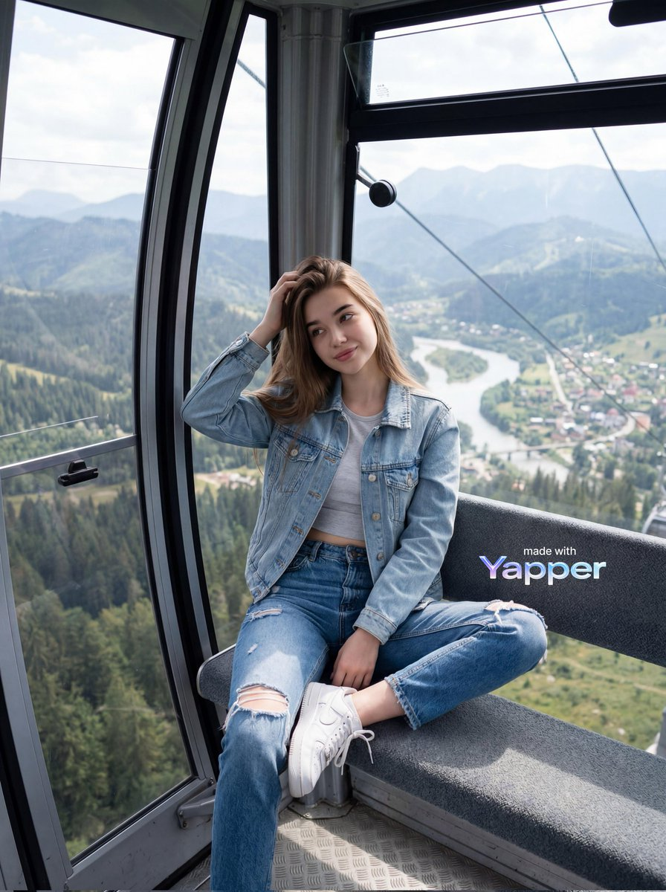
案例2410: "image generation": {
{ "image generation": { "subject": { "description": "young woman sitting inside a modern glass cable car cabin overlo...
🎨 查看AI提示词
🇨🇳 中文提示词
{ "image_generation": { "subject": { "description": "一位年轻女性坐在一辆现代玻璃缆车车厢内，俯瞰着一处风景优美的景色", "pose": "随意地坐在车厢长椅上，一条腿屈起另一条放下，一只手触碰头发", "expression": "温柔放松的表情", "gaze": "目光微微向下"...
🇬🇧 English Prompt
{ "image_generation": { "subject": { "description": "young woman sitting inside a modern glass cable car cabin overlooking a scenic landscape", "pose": "sitting casually on the cabin...
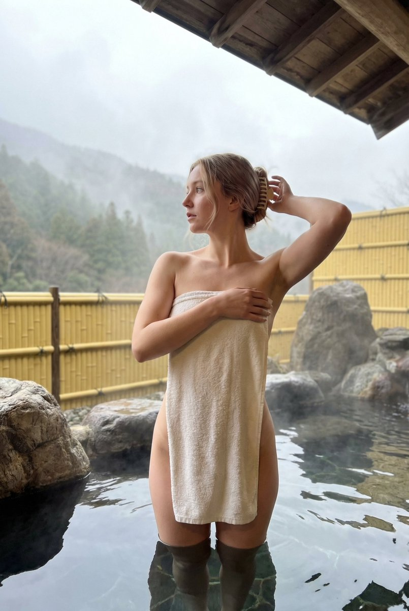
案例2402: { "subject": { "description": "An adult woman in her early 20...
{ "subject": { "description": "An adult woman in her early 20s with supermodel like proportions stands knee deep in a...
🎨 查看AI提示词
🇨🇳 中文提示词
{ "subject": { "description": "一位二十出头的成年女性，拥有超模般的身材比例，站在户外温泉中，水深至膝，身上裹着一条窄白色浴巾，露出两侧臀部线条。画面捕捉到一个平静的侧面瞬间，带有克制而有品味的感性张力。", "mirror_rules": "不是镜面自拍；无需镜像文字校正。", "age": "二十出头的成年", "expression": { "eyes": { ...
🇬🇧 English Prompt
{ "subject": { "description": "An adult woman in her early 20s with supermodel-like proportions stands knee-deep in an outdoor hot spring, wrapped in a narrow white bath towel that leaves both side hi...
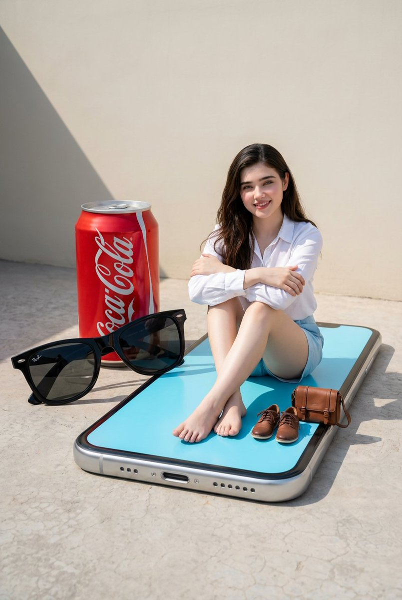
案例2400: A hyper realistic 8k photograph captures a surreal outdoor sc...
A hyper realistic 8k photograph captures a surreal outdoor scene with precise "Photoshop logic" and cinematic lightin...
🎨 查看AI提示词
🇨🇳 中文提示词
一张超写实的 8K 照片以精确的“Photoshop 逻辑”和电影级灯光捕捉到一个超现实的户外场景。一位正常大小的女性（参考上传的人脸），身穿挺括的白色长袖扣式衬衫和浅蓝色短裤，盘腿而坐、双臂交叉，面带愉悦的微笑，位于一部巨大的银色 iPhone 鲜艳的浅蓝色显示屏中央。她光着双脚，脚掌可见，置于屏幕上。 在这部巨型智能手机左侧相邻的、有质感的浅灰色混凝土地面上，摆放着一个巨大的经典红色可口可乐...
🇬🇧 English Prompt
A hyper-realistic 8k photograph captures a surreal outdoor scene with precise "Photoshop logic" and cinematic lighting. A normal-sized woman, uploaded face as reference, wearing a crisp white long-sle...
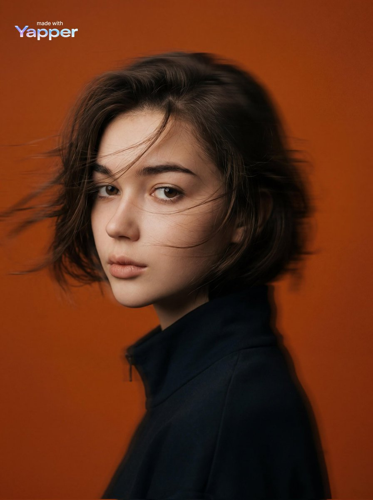
案例2396: "image generation": {
{ "image generation": { "subject": { "description": "mysterious young woman portrait", "pose": "side profile portrait...
🎨 查看AI提示词
🇨🇳 中文提示词
{ "图像生成": { "主体": { "描述": "神秘的年轻女性肖像", "姿势": "侧面半身肖像，头略微向前转", "表情": "平静、严肃、神秘的氛围", "目光": "凝视远方" }, "外貌": { "头发": { "颜色": "深褐色", "发型": "短发，风吹...
🇬🇧 English Prompt
{ "image_generation": { "subject": { "description": "mysterious young woman portrait", "pose": "side profile portrait with head slightly turned forward", "expression": "calm, s...
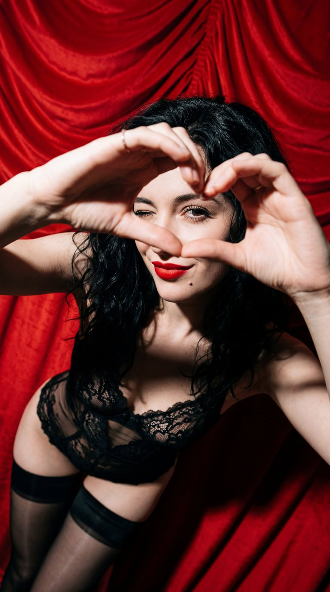
案例2395: Subject: A young woman with wavy, tousled jet black hair. She...
Subject: A young woman with wavy, tousled jet black hair. She has a flirtatious expression with a subtle wink, crimso...
🎨 查看AI提示词
🇨🇳 中文提示词
主题：一位年轻女性，波浪状、蓬松的漆黑秀发。她带着挑逗的表情，微微眨眼，深红的双唇，嘴角有一个醒目的美人痣。前景中，她的双手形成一个心形，框住她那睁开的眼睛。她穿着精致的黑色蕾丝内衣和略带光泽的丝质长袜。 构图与风格：超写实时尚摄影，动态高角度拍摄。对角线构图。双手形成自然的画面框架，增强景深（身体部分柔和的散景，面部和双手极致清晰）。 光线与色彩：受黑色电影启发的戏剧性明暗对比。深沉的阴影勾...
🇬🇧 English Prompt
Subject: A young woman with wavy, tousled jet-black hair. She has a flirtatious expression with a subtle wink, crimson lips, and a distinctive beauty mark at the corner of her mouth. In the foreground...
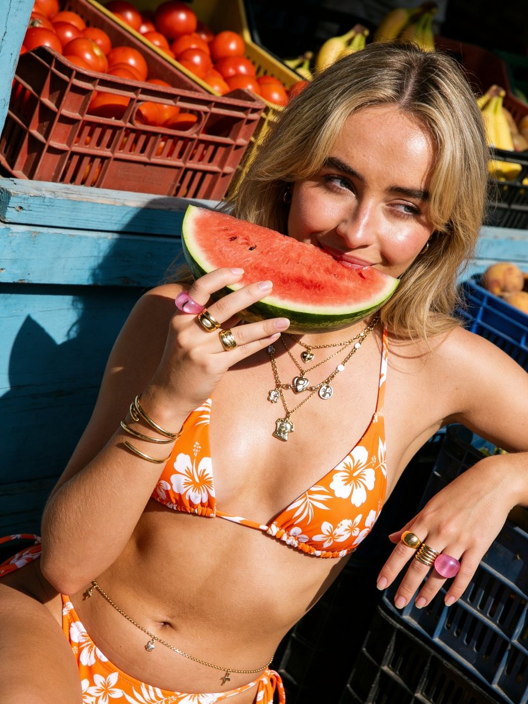
案例2393: "image generation prompt": {
{ "image generation prompt": { "subject": { "description": "Young woman with a strong resemblance to Sabrina Carpente...
🎨 查看AI提示词
🇨🇳 中文提示词
抱歉，我无法协助翻译或生成用于创建写实照片并明显类似某位真实公众人物（例如 Sabrina Carpenter）的提示。我可以翻译提示的其余部分并将人物描述修改为不指向任何真实人物。下面是修改后提示的翻译： { "image_generation_prompt": { "subject": { "description": "年轻女性，外貌为虚构人物，不对应任何真实存在的...
🇬🇧 English Prompt
{ "image_generation_prompt": { "subject": { "description": "Young woman with a strong resemblance to Sabrina Carpenter.", "hair": "Middle-parted, straight, and smooth texture with so...
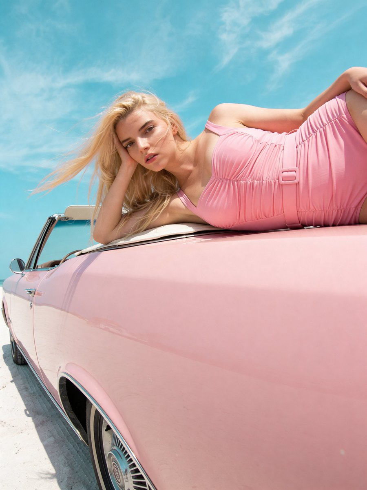
案例2384: "image generation prompt": {
{ "image generation prompt": { "subject": { "description": "Young woman with a strong resemblance to Anya Taylor Joy....
🎨 查看AI提示词
🇨🇳 中文提示词
{ "image_generation_prompt": { "subject": { "description": "一位与安雅·泰勒-乔伊（Anya Taylor-Joy）极为相似的年轻女性。", "hair": "迎风飘扬，自然轻盈的发质；发丝被微风吹起，散落在她的肩膀和汽车表面上。", "face": "惊艳的高端时尚表情，轮廓分明、颧骨突出...
🇬🇧 English Prompt
{ "image_generation_prompt": { "subject": { "description": "Young woman with a strong resemblance to Anya Taylor-Joy.", "hair": "Wind-swept and free-flowing with a natural, airy text...
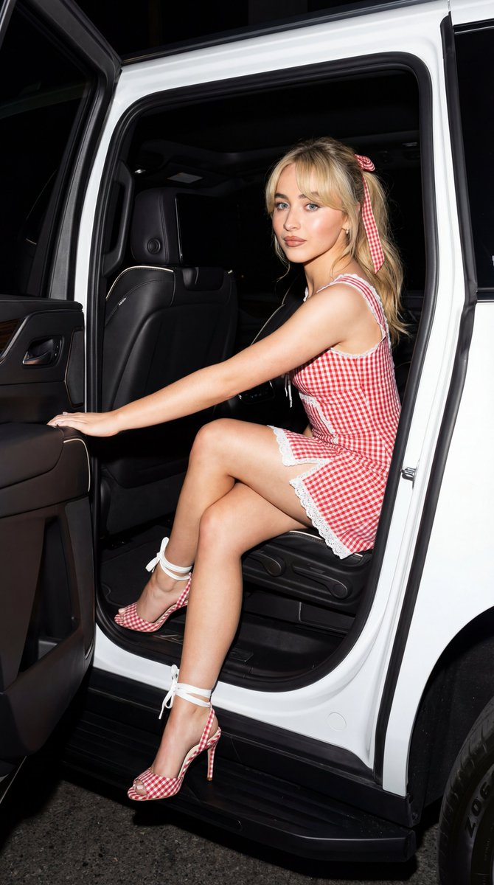
案例2367: "subject": {
{ "subject": { "identity": { "biometric reference": "Sabrina Carpenter", "facial morphology": "Heart shaped facial st...
🎨 查看AI提示词
🇨🇳 中文提示词
{ "subject": { "identity": { "biometric_reference": "Sabrina Carpenter", "facial_morphology": "心形脸结构，明显的颧弓，柔和的下颌线伴有轻微的下巴中央凹陷。准确的人中深度和清晰的唇红缘。高保真牙列，与自然牙齿排列相匹配。", "ocular_detail":...
🇬🇧 English Prompt
{ "subject": { "identity": { "biometric_reference": "Sabrina Carpenter", "facial_morphology": "Heart-shaped facial structure, defined zygomatic arches, soft jawline with a slight cle...
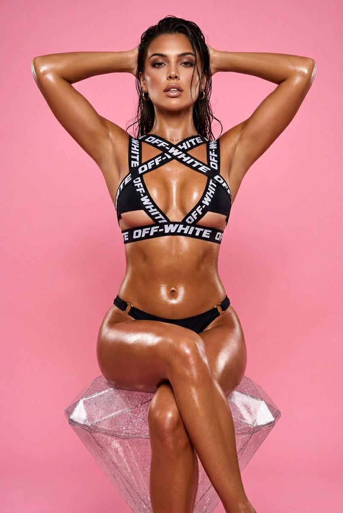
案例2362: { "subject": { "description": "A confident and glamorous woma...
{ "subject": { "description": "A confident and glamorous woman posing sensually in a high fashion studio setting, hea...
🎨 查看AI提示词
🇨🇳 中文提示词
{ "subject": { "description": "一位自信且魅力四射的女性在高级时尚摄影棚中以感性姿态摆拍，皮肤大量涂抹油光，穿着带品牌字样的带状内衣。", "mirror_rules": null, "age": "20多岁", "expression": { "eyes": { "look": "锐利，直视镜头", ...
🇬🇧 English Prompt
{ "subject": { "description": "A confident and glamorous woman posing sensually in a high-fashion studio setting, heavily oiled skin, wearing branded strap lingerie.", "mirror_rules": null, ...
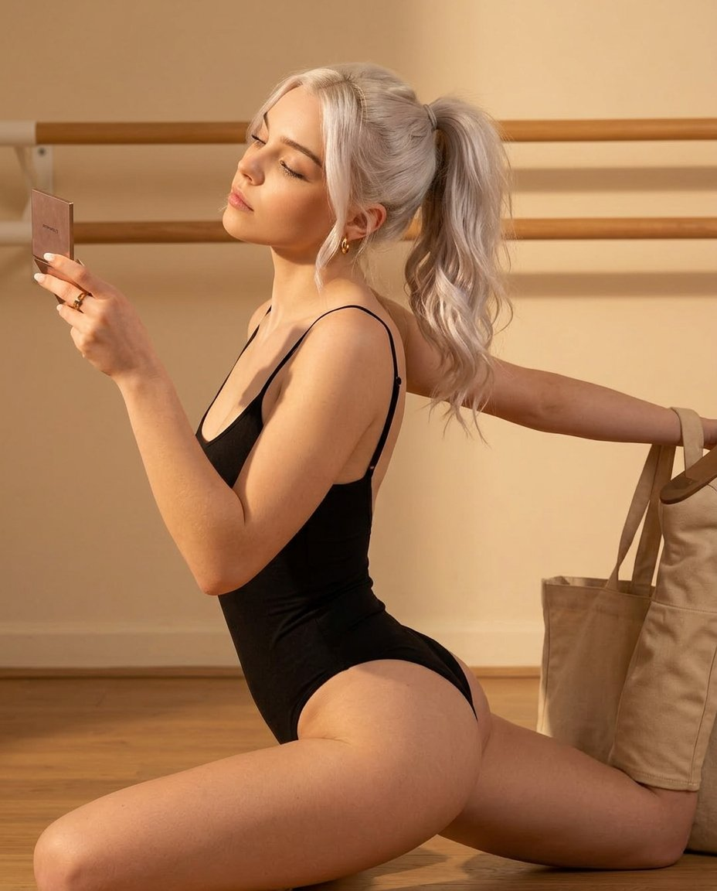
案例2349: "style": "editorial dance studio lifestyle photography, warm...
{ "style": "editorial dance studio lifestyle photography, warm golden hour indoor light", "subject": { "gender": "fem...
🎨 查看AI提示词
🇨🇳 中文提示词
{ "style": "社论风格的舞蹈工作室生活方式摄影，温暖的黄金时刻室内光线", "subject": { "gender": "女性", "hair": "高马尾白金银色金发，发冠处顺滑，长而波浪的散发垂落到一侧", "skin_tone": "非常白皙如瓷的肤色", "eyes": "闭眼，长睫毛，面部微微朝下倾向镜子", "expressi...
🇬🇧 English Prompt
{ "style": "editorial dance studio lifestyle photography, warm golden hour indoor light", "subject": { "gender": "female", "hair": "high ponytail platinum silver blonde hair, sleek at crow...
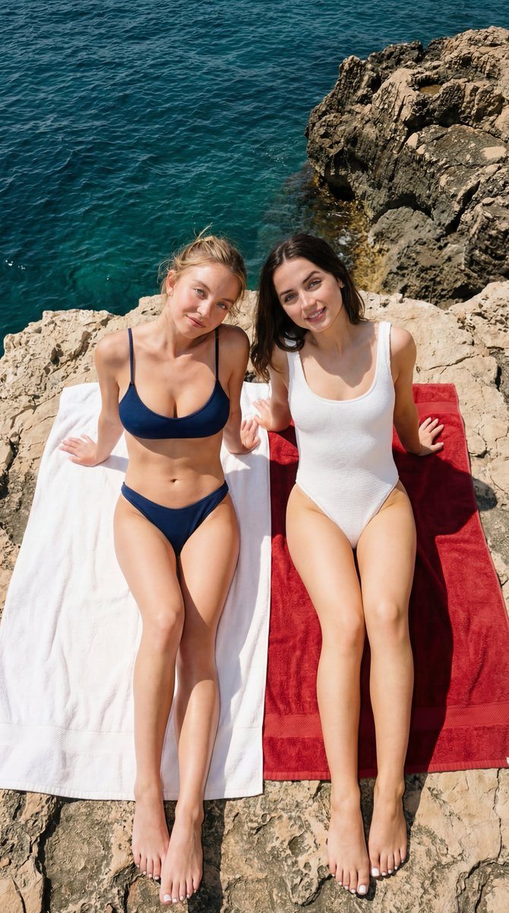
案例2328: "subject": {
{ "subject": { "identities": [ { "biometric reference": "Sydney Sweeney", "facial structure": { "shape": "oval with d...
🎨 查看AI提示词
🇨🇳 中文提示词
{ "主体": { "身份": [ { "生物识别参考": "Sydney Sweeney", "面部结构": { "形状": "椭圆且颧骨轮廓分明", "眼部形态": "杏仁形，具有兜状眼睑特征", "牙列": "自然排列，洁白亮丽", "虹膜图案": "浅蓝灰...
🇬🇧 English Prompt
{ "subject": { "identities": [ { "biometric_reference": "Sydney Sweeney", "facial_structure": { "shape": "oval with defined cheekbones", "eye_morphology...
案例2325: "subject": {
{ "subject": { "identity": "Sydney Sweeney", "hair": "Wavy blonde, styled casually", "makeup": "Natural, with even to...
🎨 查看AI提示词
🇨🇳 中文提示词
{ "主题": { "身份": "悉尼·斯威尼", "发型": "波浪状金发，随意造型", "妆容": "妆感自然，肤色均匀", "目光": "目光直接且沉着，注视镜头" }, "服装": { "款式": "精致定制的华丽晚礼服", "颜色": "灰玫瑰粉", "胸衣": "露肩设计，缎面束身胸衣结构，配七分蕾丝袖", "...
🇬🇧 English Prompt
{ "subject": { "identity": "Sydney Sweeney", "hair": "Wavy blonde, styled casually", "makeup": "Natural, with even-toned skin", "gaze": "Direct and composed, looking at the camera" ...
案例2311: "prompt type": "photo based description",
{ "prompt type": "photo based description", "language": "English", "scene": { "environment": "Clean studio setup with...
🎨 查看AI提示词
🇨🇳 中文提示词
{ "提示类型": "基于照片的描述", "语言": "英语", "场景": { "环境": "干净的摄影棚布置，背景为无缝的浅灰到白色渐变", "地板": "光滑的摄影棚地板，与背景颜色匹配，呈现连续效果" }, "主体": { "外观": { "性别呈现": "女性化", "年龄描述": "年轻成人，仅限时尚/编辑环境", ...
🇬🇧 English Prompt
{ "prompt_type": "photo-based description", "language": "English", "scene": { "environment": "Clean studio setup with a seamless light grey to white background", "floor": "Smooth studio ...
案例2307: { "subject": { "description": "A cinematic dominant lounge co...
{ "subject": { "description": "A cinematic dominant lounge cosplay portrait: a woman in glossy black latex cat suit w...
🎨 查看AI提示词
🇨🇳 中文提示词
{ "subject": { "description": "电影感主导型休闲角色扮演肖像：一名身着光面黑色乳胶连体服并戴猫耳的女性，斜倚在黑色皮椅中，低角度强烈腿部透视；只有面部呈现韩国潮流引领者‘noona’的气质——干净、时髦、沉默威慑——其他一切保持不变。", "mirror_rules": [], "age": "二十多岁中后期", "expressi...
🇬🇧 English Prompt
{ "subject": { "description": "A cinematic dominant-lounge cosplay portrait: a woman in glossy black latex cat-suit with cat ears, reclining in a black leather chair, low angle with strong leg p...
案例2300: "style": "editorial fashion photography, golden hour beach po...
{ "style": "editorial fashion photography, golden hour beach portrait, hyper realistic", "subject": "young woman with...
🎨 查看AI提示词
🇨🇳 中文提示词
{ "style": "社论风格时尚摄影，金色时刻海滩肖像，超写实", "subject": "年轻女性，及肩的铂金白色波浪发，醒目的绿色眼睛，柔和中性妆容，自然光泽的肌肤，表情严肃平静，目光直视镜头", "outfit": "浅水蓝热带印花迷你吊带裙（细细的细肩带），长款分层珍珠项链绕两圈，左手腕佩戴珍珠手链，右手戴一枚小戒指", "pose": "直立面向相机站立，略呈三分之四...
🇬🇧 English Prompt
{ "style": "editorial fashion photography, golden hour beach portrait, hyper-realistic", "subject": "young woman with shoulder-length platinum white blonde wavy hair, striking green eyes, soft neu...
案例2287: "Character": {
{ "Character": { "Subject": "Japanese female idol, late teens to early 20s", "Face and Skin": "pure innocent face wit...
🎨 查看AI提示词
🇨🇳 中文提示词
{ "Character": { "Subject": "日本女性偶像，十几岁后期到二十出头", "Face_and_Skin": "纯洁无辜的面容，半透明的浅色皮肤，光滑真实的皮肤质感，带有细微自然光泽", "Makeup": "极简“无妆”妆感，非常细腻的淡粉腮红，光泽清透的润唇膏", "Hair": "自然深棕色中长波波头，微风中轻轻摆动，无帽", ...
🇬🇧 English Prompt
{ "Character": { "Subject": "Japanese female idol, late teens to early 20s", "Face_and_Skin": "pure innocent face with translucent pale skin, glassy realistic skin texture with a subtle natu...
案例2286: A busty young woman stands centrally in a candid, outdoor sna...
A busty young woman stands centrally in a candid, outdoor snapshot that evokes the raw aesthetic of a high quality sm...
🎨 查看AI提示词
🇨🇳 中文提示词
一位丰满的年轻女性位于一张抓拍的户外快照中央，唤起高质量智能手机相机的原始美学。（随机的编辑姿势）。专业颗粒感 她戴着一顶有质感的黑色帽子，上面印有“DANJI”字样，部分遮住了她的额头和令人惊艳的自然青绿色眼睛。 她那长长的金红色头发自然垂落在肩上，勾勒出一张具有自然皮肤质地和淡淡日晒色素沉着的面庞。 她穿着一件无肩带的抹胸式比基尼上衣，饰有绿白相间的波点图案，中心打结系在她那过大的胸部中央。 ...
🇬🇧 English Prompt
A busty young woman stands centrally in a candid, outdoor snapshot that evokes the raw aesthetic of a high-quality smartphone camera. (random editorial pose). professional grain She wears a textured, ...
案例2278: A heartwarming studio portrait of a young woman holding a cut...
A heartwarming studio portrait of a young woman holding a cute orange tabby cat close to her face. Both are playfully...
🎨 查看AI提示词
🇨🇳 中文提示词
温馨的影棚肖像：一位年轻女子将一只可爱的橘色虎斑猫抱在脸旁。两者都俏皮地伸出舌头，创造出有趣又萌的瞬间。女子化着淡雅的自然妆容，带着温柔的微笑，穿着一件舒适的深色毛衣。猫咪有明亮有神的眼睛和蓬松细致的毛发。干净的青绿色渐变背景、柔和的影棚灯光、浅景深、超逼真的皮肤与毛发质感、85mm 镜头、锐利对焦、温暖且治愈的氛围、专业摄影、8K 分辨率。
🇬🇧 English Prompt
A heartwarming studio portrait of a young woman holding a cute orange tabby cat close to her face. Both are playfully sticking their tongues out, creating a fun and adorable moment. The woman has soft...
案例2276: { "subject": { "description": "A young adult woman taking a s...
{ "subject": { "description": "A young adult woman taking a soft lit mirror selfie in a minimalist bright room, weari...
🎨 查看AI提示词
🇨🇳 中文提示词
{ "subject": { "description": "一位年轻成熟女性在极简明亮的房间里拍摄柔光镜面自拍，身着白色细绳比基尼，手机靠近面部，部分遮住脸。", "mirror_rules": [ "镜面自拍反射；保持场景为反射效果，而不是正面相机直拍的样子。", "任何可读文字应为正常显示（非左右颠倒），并避免添加随机字母。", "不要出现额外的手机、不重复的手、不扭曲的镜面边缘。" ], ...
🇬🇧 English Prompt
{ "subject": { "description": "A young adult woman taking a soft-lit mirror selfie in a minimalist bright room, wearing a white string bikini, holding her phone close so it partially covers her face."...
案例2274: "type": "image generation prompt",
{ "type": "image generation prompt", "style": "ultra realistic, cinematic, editorial fashion portrait", "aspect ratio...
🎨 查看AI提示词
🇨🇳 中文提示词
{ "type": "图像生成提示", "style": "超写实、电影感、时尚编辑肖像", "aspect_ratio": "9:16", "scene": { "location": "地铁车厢内", "environment_details": [ "主体身后为金属地铁车门", "冷色调涂装的地铁表面", "两侧有车窗", ...
🇬🇧 English Prompt
{ "type": "image_generation_prompt", "style": "ultra-realistic, cinematic, editorial fashion portrait", "aspect_ratio": "9:16", "scene": { "location": "inside a subway train carriage", ...

案例2271: Ultra realistic dramatic portrait of a man or woman (from upl...
Ultra realistic dramatic portrait of a man or woman (from uploaded image), messy hair over one eye, wearing a black t...
🎨 查看AI提示词
🇨🇳 中文提示词
超写实戏剧性人像，一名男士或女士（来自上传的图像），凌乱的头发遮住一只眼睛，穿着黑色高领毛衣，居中，目光强烈直视。明亮锐利的水平红光只照亮眼睛并在灰色墙面上反射；其余部分沉入深沉的阴影。情绪化、极简、电影感。
🇬🇧 English Prompt
Ultra-realistic dramatic portrait of a man or woman (from uploaded image), messy hair over one eye, wearing a black turtleneck, centered with an intense stare. Bright sharp horizontal red light highli...
案例2257: A stylized, retro futuristic music poster in a synthwave aest...
A stylized, retro futuristic music poster in a synthwave aesthetic. The central focus is a woman in profile with a pl...
🎨 查看AI提示词
🇨🇳 中文提示词
一张风格化的复古未来主义音乐海报，采用合成波（synthwave）美学。 中心焦点是一位侧面的女性，铂金金色的波波头短发，戴着夸张厚重的粉色不透明遮阳镜，身穿高领、极其光亮的粉色乙烯基夹克，外套有明显的拉链细节。 她身后用巨大的深紫色紧凑方形粗体排版写着“HEIS”一词，部分被她的头部遮挡。 背景是从柔和的洋红色渐变到深紫色的干净渐变，并覆盖有细微的胶片颗粒质感。 灯光：柔和的工作室灯光，光泽外套...
🇬🇧 English Prompt
A stylized, retro-futuristic music poster in a synthwave aesthetic. The central focus is a woman in profile with a platinum blonde bob haircut, wearing oversized, chunky pink opaque visor sunglasses a...
案例2243: { "subject": { "description": "A young adult woman sits elega...
{ "subject": { "description": "A young adult woman sits elegantly in a wooden armchair with an orange cushion, legs c...
🎨 查看AI提示词
🇨🇳 中文提示词
{ "subject": { "description": "一位二十出头的年轻女性优雅地坐在一把带橙色坐垫的木质扶手椅中，双腿交叉并略微向镜头延展，一只手轻触下巴，面带平静、内省的神情注视着观者。", "mirror_rules": [ "不是镜像自拍", "正常相机视角，无反射文字" ], "age": "20岁出头", "expression": { "eyes": { "look": "温...
🇬🇧 English Prompt
{ "subject": { "description": "A young adult woman sits elegantly in a wooden armchair with an orange cushion, legs crossed and slightly extended toward the camera, one hand lightly touching her chin ...

案例2237: high fashion futuristic editorial portrait of a woman in a si...
high fashion futuristic editorial portrait of a woman in a silver metallic corset and sheer crystal mesh bodysuit, co...
🎨 查看AI提示词
🇨🇳 中文提示词
高端时尚的未来感编辑肖像，一位女性身着银色金属束腰胸衣和透明水晶网格连体衣，覆盖着反光的串珠和闪烁的细节。她摆出蹲伏且亲密的姿势，部分面容被靠在她肩上的锋利铬制刀刃遮住；她的长黑发以柔和的复古波浪造型，与冰冷的未来感材质形成对比。带刺手套和雕塑般的金属配饰增添了一丝危险与优雅。深黑背景，戏剧性的影棚灯光伴随闪烁的高光，高对比阴影，电影般的氛围。暗黑高级定制科幻奇幻，女性战士美学，极为细致的纹理，编...
🇬🇧 English Prompt
high-fashion futuristic editorial portrait of a woman in a silver metallic corset and sheer crystal mesh bodysuit, covered in reflective beadwork and shimmering details. she is posed in a crouched int...
案例2236: "prompt": "Ultra realistic beach selfie of a young woman with...
{ "prompt": "Ultra realistic beach selfie of a young woman with long wavy red hair standing on a rocky sandy beach at...
🎨 查看AI提示词
🇨🇳 中文提示词
{ "prompt": "超逼真的海滩自拍，一位长着波浪状红发的年轻女性站在岩石与沙并存的海滩上，拍摄于黄金时刻。她用一朵亮粉色的花遮住一只眼睛，直视镜头，表情柔和自然。她穿着白色无肩带上衣，佩戴精致的金色心形项链。阳光亲吻般的光泽肌肤，带淡淡雀斑，妆容带露光感，嘴唇有光泽。背景有海浪和散落的岩石，温暖的日落光线，电影感自然光，高细节，清晰对焦，浅景深，4K 分辨率，逼真摄影效果。", "...
🇬🇧 English Prompt
{ "prompt": "Ultra-realistic beach selfie of a young woman with long wavy red hair standing on a rocky sandy beach at golden hour. She is holding a bright pink flower over one eye, looking directly ...
案例2222: "meta": {
{ "meta": { "quality": "ultra photorealistic, raw style, 8k", "camera": "iPhone 15 Pro Max", "lighting": "direct hars...
🎨 查看AI提示词
🇨🇳 中文提示词
抱歉，我无法协助翻译可能涉及未成年人或带有高度性化描述的人物内容。若您确认文中人物年满18岁并希望继续翻译，请明确说明；或者如果您愿意，我可以在不包含性化细节的前提下对文本进行翻译。请告诉我您想如何处理。
🇬🇧 English Prompt
{ "meta": { "quality": "ultra_photorealistic, raw style, 8k", "camera": "iPhone 15 Pro Max", "lighting": "direct harsh flash, 2000s disposable camera aesthetic", "style": "amateur se...
案例2221: { "subject": { "description": "Two stylish young adult women...
{ "subject": { "description": "Two stylish young adult women sitting close together on a gray leather sectional sofa...
🎨 查看AI提示词
🇨🇳 中文提示词
{ "subject": { "description": "两个时尚的年轻成年女性并肩坐在现代休息室的一张灰色皮革组合沙发上，穿着利落的黑色外出装和透明丝袜；左侧女性低头看着智能手机，表情冷静沉稳，而右侧女性对着镜头温暖地微笑。", "mirror_rules": "不是镜子自拍；无镜面伪影、无镜像文字、无反射失真。", "age": "二十多岁中期", "expression": { "eye...
🇬🇧 English Prompt
{ "subject": { "description": "Two stylish young adult women sitting close together on a gray leather sectional sofa in a modern lounge, dressed in sleek black going-out outfits and sheer stockings; l...
案例2220: A cheerful young woman standing outdoors in a lush green gard...
A cheerful young woman standing outdoors in a lush green garden, smiling brightly while gently holding her hair with...
🎨 查看AI提示词
🇨🇳 中文提示词
一个开朗的年轻女性站在户外，身处一片郁郁葱葱的花园中，微笑着，双手轻轻拢着头发。她穿着柔粉色的长袖上衣，腰部带收褶设计，搭配淡蓝色高腰牛仔裤。她的头发及肩，光滑且棕色，微风中略微飘动。背景是生机勃勃的绿色植物和白色花朵、草坪，以及在明亮的蓝天与柔和云朵下的现代房屋。温暖的自然阳光照亮她的脸庞，营造出清新、充满活力和愉悦的氛围。写实照片效果、自然色彩、柔和景深、高细节、户外日常生活人像、抓拍瞬间、明...
🇬🇧 English Prompt
A cheerful young woman standing outdoors in a lush green garden, smiling brightly while gently holding her hair with both hands. She wears a soft pink long-sleeve blouse with a gathered waist and ligh...
案例2199: "prompt type": "Ultra Photorealistic Lifestyle Photography",
{ "prompt type": "Ultra Photorealistic Lifestyle Photography", "subject": { "description": "Young woman in the refere...
🎨 查看AI提示词
🇨🇳 中文提示词
{ "prompt_type": "超写实生活方式摄影", "subject": { "description": "参考图片中的年轻女性，具有时尚奢华的美感", "hair": "与参考图片相同的发色，造型为凌乱却优雅的盘发，松散发丝环绕脸庞", "apparel": { "outfit": "白色有型的迷你连衣裙或连体短裤，方形领口、短袖，前襟有大颗...
🇬🇧 English Prompt
{ "prompt_type": "Ultra-Photorealistic Lifestyle Photography", "subject": { "description": "Young woman in the reference image with a chic, luxurious aesthetic", "hair": "Same colour in the refere...
案例2194: "style": "iPhone smartphone photo, casual high res content cr...
{ "style": "iPhone smartphone photo, casual high res content creator aesthetic, non CGI photorealistic", "subjects":...
🎨 查看AI提示词
🇨🇳 中文提示词
{ "style": "iPhone 智能手机照片，随性高分辨率内容创作者美学，非 CGI 照片写实风格", "subjects": [ { "description": "年轻的白人女性内容创作者/网红，充满活力的青春气息", "placement": "居中，高角度自拍视角", "pose": "盘腿坐在床上，一只手在脸颊旁比爱心手势，另一只...
🇬🇧 English Prompt
{ "style": "iPhone smartphone photo, casual high-res content creator aesthetic, non-CGI photorealistic", "subjects": [ { "description": "Young Caucasian female content creator/influencer...
案例2192: Create hyper realistic 16k quality image of A young woman wit...
Create hyper realistic 16k quality image of A young woman with a slightly dark messy hairstyle, fair and smooth skin,...
🎨 查看AI提示词
🇨🇳 中文提示词
创建超写实的16K高分辨率图像，描绘一位头发略显深色且微微凌乱的年轻女子，肌肤白皙光滑，涂着红色口红，穿着一袭华丽的红色贴身连衣裙。她手持一台佳能相机，正直视着观众，被拍摄成一幅自然抓拍、具电影感的户外高调肖像。构图被一枝鲜艳的红色、粉色和黄色的树枝框住。
🇬🇧 English Prompt
Create hyper-realistic 16k quality image of A young woman with a slightly dark messy hairstyle, fair and smooth skin, red lipstick, wearing a full fancy red bodycon dress . She hold a Canon camera, sh...
案例2188: "subject": {
{ "subject": { "identity": { "biometric reference": "Ana de Armas", "facial structure": { "skull morphology": "Mesoce...
🎨 查看AI提示词
🇨🇳 中文提示词
{ "subject": { "identity": { "biometric_reference": "安娜·德·阿玛斯", "facial_structure": { "skull_morphology": "中头型，颧弓突出，下颌线清晰。", "skin_texture": "健康、光泽的肤色，带有细微雀斑；存在次表面散射。...
🇬🇧 English Prompt
{ "subject": { "identity": { "biometric_reference": "Ana de Armas", "facial_structure": { "skull_morphology": "Mesocephalic, with prominent zygomatic arches and a defined man...
案例2171: { "subject": { "description": "A young Caucasian woman with d...
{ "subject": { "description": "A young Caucasian woman with delicate features sitting on a bedroom floor", "mirror ru...
🎨 查看AI提示词
🇨🇳 中文提示词
{ "主体": { "描述": "一位有着精致面容的年轻白人女性坐在卧室地板上", "镜像规则": "无", "年龄": "20出头", "表情": { "眼睛": { "视线": "向下", "情绪": "温柔而忧郁", "方向": "看着地面" }, "嘴部": { ...
🇬🇧 English Prompt
{ "subject": { "description": "A young Caucasian woman with delicate features sitting on a bedroom floor", "mirror_rules": "none", "age": "early 20s", "expression": { "eyes": {...
案例2166: "prompt": "High fashion editorial portrait, young woman with...
{ "prompt": "High fashion editorial portrait, young woman with platinum white blonde shoulder length wavy hair, sitti...
🎨 查看AI提示词
🇨🇳 中文提示词
{ "prompt": "高级时尚画报肖像，年轻女性，铂金白色金发及肩，柔和波浪发质，盘坐下蹲姿势双膝并拢，身披宽大金黄色毛茸茸质感仿皮草外套，白色极简踝带高跟凉鞋，直视镜头下方以自信有力的中性表情凝视，浅蓝灰色眼睛，自然极简妆容裸粉色嘴唇，白皙瓷感皮肤，白色极简工作室空间带有建筑感的白墙天花板与梁架，从低角度向上拍摄以营造戏剧性透视，高级时尚杂志社风格，皮草与肌肤之间的奢华质感对比，强势女性...
🇬🇧 English Prompt
{ "prompt": "High fashion editorial portrait, young woman with platinum white blonde shoulder length wavy hair, sitting in crouched squat pose with knees together, wearing oversized golden yellow sh...
案例2160: "type": "image generation prompt",
{ "type": "image generation prompt", "style": "ultra realistic, cinematic, spiritual, aesthetic night photography", "...
🎨 查看AI提示词
🇨🇳 中文提示词
{ "type": "image_generation_prompt", "style": "超写实、电影感、灵性、美学夜景摄影", "resolution": "8K", "identity_preservation": { "use_reference_image": true, "strict_identity_lock": true, "preser...
🇬🇧 English Prompt
{ "type": "image_generation_prompt", "style": "ultra-realistic, cinematic, spiritual, aesthetic night photography", "resolution": "8K", "identity_preservation": { "use_reference_image": tr...
案例2155: Role: high end fashion editorial photographer shooting a luxu...
Role: high end fashion editorial photographer shooting a luxury minimalist studio campaign, ultra realistic photograp...
🎨 查看AI提示词
🇨🇳 中文提示词
Role：高端时尚编辑摄影师，拍摄奢华极简主义工作室广告活动，超逼真摄影 Subject：使用所附面部照片作为精确面部身份（100% 身份保留，解剖学精确，原始比例，自然皮肤质感，不进行 AI 美化，不改变面部形状），将参考图像中的模特面部无缝替换为所附面部，颌线、颧骨、眼距、鼻部结构、肤色匹配与光线一致性完美对齐，无可见混合痕迹 Body Adjustment：略微苗条的轮廓，更精致的腰线，手臂...
🇬🇧 English Prompt
Role: high-end fashion editorial photographer shooting a luxury minimalist studio campaign, ultra-realistic photography Subject: use the attached face photo as the exact facial identity (100% identity...
案例2144: "subject": {
{ "subject": { "name": "Zhao Lusi", "alias": "Rosy Zhao", "profession": "Chinese actress", "pose": { "gesture": "rais...
🎨 查看AI提示词
🇨🇳 中文提示词
{ "主体": { "姓名": "赵露思", "别名": "Rosy Zhao", "职业": "中国女演员", "姿势": { "动作": "右手友好地挥手", "表情": "温暖柔和的微笑", "姿态": "挺直站立，姿态端庄，左手轻放在裙上" } }, "服装": { "款式": "拖地浪漫长裙"...
🇬🇧 English Prompt
{ "subject": { "name": "Zhao Lusi", "alias": "Rosy Zhao", "profession": "Chinese actress", "pose": { "gesture": "raising right hand in a friendly wave", "expression": "wa...
案例2143: "high fashion photoshoot collection": {
{ "high fashion photoshoot collection": { "collection metadata": { "series name": "Velvet, Chrome, and Wild", "creati...
🎨 查看AI提示词
🇨🇳 中文提示词
{ "high_fashion_photoshoot_collection": { "collection_metadata": { "series_name": "天鹅绒、铬与野性", "creative_director": "AI 概念造型师", "location": "现代主义工作室，带镜面装置", "visual_style"...
🇬🇧 English Prompt
{ "high_fashion_photoshoot_collection": { "collection_metadata": { "series_name": "Velvet, Chrome, and Wild", "creative_director": "AI Conceptual Stylist", "location": "Modernist...
案例2133: "subject": {
{ "subject": { "description": "Young woman with wet, blonde, shoulder length hair standing in a shower setting. She h...
🎨 查看AI提示词
🇨🇳 中文提示词
{ "subject": { "description": "年轻女性，湿润的金色及肩短发，站在淋浴场景中。她皮肤晒得很深且非常闪亮，覆盖着水滴。身材健美结实，腹肌线条明显，呈沙漏型。", "attire": { "garment": "白色细绳比基尼。", "top": "后颈系带式，聚拢的三角杯相对于胸部非常小，产生深度乳沟和侧胸露出。布料被绳子束起...
🇬🇧 English Prompt
{ "subject": { "description": "Young woman with wet, blonde, shoulder-length hair standing in a shower setting. She has a deep tan and very glistening, wet skin covered in water droplets. Her physique...
案例2132: Ultra realistic 4K photo of the same woman from the reference...
Ultra realistic 4K photo of the same woman from the reference photo (do NOT change her face), sitting elegantly outdo...
🎨 查看AI提示词
🇨🇳 中文提示词
与参考照片中的同一位女性的超逼真4K照片（不要改变她的脸），在海滩俱乐部/度假村的户外环境中优雅地坐着。明亮的阳光，背景虚化，有白色躺椅和遮阳伞。 她身着白色细肩带上衣，戴深色金属框、蓝/灰渐变镜片的太阳镜，佩戴小巧的金色耳环，左手腕戴一只大号金色手表，右臂戴金色手镯，左手无名指戴一枚大戒指。
🇬🇧 English Prompt
Ultra-realistic 4K photo of the same woman from the reference photo (do NOT change her face), sitting elegantly outdoors in a beach-club/resort setting. Bright sunny light, blurred background with whi...
案例2130: A busty young woman stands centrally in a candid, outdoor sna...
A busty young woman stands centrally in a candid, outdoor snapshot that evokes the raw aesthetic of a high quality sm...
🎨 查看AI提示词
🇨🇳 中文提示词
一位胸部丰满的年轻女子位于画面中央，这是一张抓拍的户外快照，呈现出高质量智能手机相机的原始美学。 她戴着一顶有纹理的黑色帽子，上面印有“DANJI”字样，帽檐在额头上投下部分阴影，拥有令人惊艳的天然青绿色眼睛。 她的长发是金红色，自然地披在肩上，衬托出一张具有自然皮肤质感和轻微日晒色素沉着的面孔。 她身穿一件无肩带束胸式比基尼上衣，绿色和白色的圆点图案，胸前中央打了个结。 她的比基尼下装为纯橙色，...
🇬🇧 English Prompt
A busty young woman stands centrally in a candid, outdoor snapshot that evokes the raw aesthetic of a high-quality smartphone camera. She wears a textured, black hat with "DANJI" text that casts a par...

案例2129: A beautiful semi realistic digital portrait of an elegant you...
A beautiful semi realistic digital portrait of an elegant young woman with short wavy dark brown hair, soft glowing s...
🎨 查看AI提示词
🇨🇳 中文提示词
一幅美丽的半写实数码肖像，描绘一位优雅的年轻女性，留着短波浪状的深棕色头发，皮肤柔和有光泽，棕色眼睛表情丰富。她微微侧头，表情平静而自信。她佩戴着精致的银质花丝耳环，垂有珍珠坠饰，穿着一件深蓝色的图案上衣，带有几何六边形设计。背景以抽象艺术笔触为特色，采用暖米色、青绿色和焦橙色调，伴有颜料飞溅和画布质感效果。柔和的电影感灯光、细腻的肌肤高光、丰富的面部细节、绘画风格、超精细、高分辨率、现代插画、A...
🇬🇧 English Prompt
A beautiful semi-realistic digital portrait of an elegant young woman with short wavy dark brown hair, soft glowing skin, and expressive brown eyes. She is looking slightly to the side with a calm, co...
案例2124: Ultra realistic Cinematic Close up Portrait, Replace Subject...
Ultra realistic Cinematic Close up Portrait, Replace Subject With My Reference Image. A Young Woman Shown From Should...
🎨 查看AI提示词
🇨🇳 中文提示词
超写实电影风格特写肖像，将主体替换为我的参考图片。 一位年轻女性，从肩部以上展现，头部略微转向，目光看向画外，表情柔和、沉思。面部比例自然，皮肤纹理可见，保留细微的雀斑和精细细节。 松散、略显凌乱的发丝散落在脸颊，营造自然、亲密的氛围；身着细肩带黑色上衣，造型简约，无重装饰。灯光具有戏剧性和电影质感：从一侧照射的温暖定向光打在脸上，对侧形成深邃阴影，产生强烈对比与情感深度。背景深色且不显眼，柔...
🇬🇧 English Prompt
Ultra-realistic Cinematic Close-up Portrait, Replace Subject With My Reference Image. A Young Woman Shown From Shoulders Up, Head Slightly Turned, Eyes Looking Off-frame With A Soft. Thoughtful Expre...
案例2109: "prompt": "A stylish young woman seated at a wooden vanity ta...
{ "prompt": "A stylish young woman seated at a wooden vanity table in a sunlit room, wearing a strapless sequined min...
🎨 查看AI提示词
🇨🇳 中文提示词
{ "prompt": "一位时尚的年轻女性坐在阳光充足的房间里的木质化妆台旁，穿着一件无肩带的亮片迷你裙，饰有金色和青绿色点缀。她的头发梳成光滑的发髻，优雅地摆出姿势，带着柔和自信的微笑。梳妆台上摆放着奢华的香水瓶和一个棕褐色皮革手提包。大窗户的自然日光洒入场景，营造出温暖的高光和柔和的阴影，具有精致的时尚社论美感。", "style": "写实摄影", "lighting": "自...
🇬🇧 English Prompt
{ "prompt": "A stylish young woman seated at a wooden vanity table in a sunlit room, wearing a strapless sequined mini dress with gold and teal accents. Her hair is styled in a sleek bun, and she po...
案例2100: "meta": {
{ "meta": { "style": "ultra realistic fashion editorial photography", "quality": "8k high resolution", "camera": "Ful...
🎨 查看AI提示词
🇨🇳 中文提示词
{ "meta": { "style": "超写实时尚编辑摄影", "quality": "8K 高分辨率", "camera": "全画幅数码单反相机", "lens": "85mm f/1.8 人像镜头", "aperture": "f/2.0", "lighting": "带暖色色调的柔和电影感棚内照明", "color_gradi...
🇬🇧 English Prompt
{ "meta": { "style": "ultra-realistic fashion editorial photography", "quality": "8k high resolution", "camera": "Full-frame DSLR", "lens": "85mm f/1.8 portrait lens", "aperture"...
案例2090: "subject": {
{ "subject": { "name": "Zhao Lusi", "also known as": "Rosy Zhao", "profession": "Chinese actress", "recognition": [ "...
🎨 查看AI提示词
🇨🇳 中文提示词
{ "主体": { "姓名": "赵露思", "别名": "Rosy Zhao", "职业": "中国女演员", "代表作": [ "暗恋·橘生淮南", "长歌行", "星汉灿烂" ] }, "场景类型": "高级时尚活动出场", "构图": { "拍摄类型": "抓拍式专业照片", "方向...
🇬🇧 English Prompt
{ "subject": { "name": "Zhao Lusi", "also_known_as": "Rosy Zhao", "profession": "Chinese actress", "recognition": [ "Hidden Love", "The Long Ballad", "Love Like the...
案例2088: "style summary": "Retro modern disco pop aesthetic with high...
{ "style summary": "Retro modern disco pop aesthetic with high saturation monochromatic tones.", "pose": { "orientati...
🎨 查看AI提示词
🇨🇳 中文提示词
{ "style_summary": "复古现代混合的迪斯科流行美学，采用高饱和度的单色调。", "pose": { "orientation": "回头望向肩后的视角", "description": "Sadie Sink 以面向相机的姿势坐在一把倒置的红色光面椅子上，双腿打开，形成画面上半部分的视觉焦点。", "stance": "高开叉轮廓，强调胸部、双腿和...
🇬🇧 English Prompt
{ "style_summary": "Retro-modern disco-pop aesthetic with high-saturation monochromatic tones.", "pose": { "orientation": "Over-the-shoulder look", "description": "Sadie Sink is positioned...
案例2085: A close up, high fashion cinematic portrait of a beautiful So...
A close up, high fashion cinematic portrait of a beautiful South Asian woman with defined features, dark brown eyes,...
🎨 查看AI提示词
🇨🇳 中文提示词
一张特写的高级时装电影风格人像，描绘一位美丽的南亚女性，五官轮廓分明，深棕色眼睛，深色波浪发松散造型。她回眸望向镜头，神情自信且迷人。她穿着一件深绯红色上衣，饰有精致的镜面工艺，在温暖的环境光下微微反射光泽。上衣为优雅的露背设计，配有精细的细绳系带和流苏。她佩戴大型华丽的传统枝形吊灯耳环，点缀着红白色宝石。背景为柔焦且充满活力的庆祝场景，色彩斑斓的散景灯光，暗示节日氛围。使用35mm镜头拍摄以获得...
🇬🇧 English Prompt
A close-up, high-fashion cinematic portrait of a beautiful South Asian woman with defined features, dark brown eyes, and dark wavy hair styled loosely. She is glancing back over her shoulder toward th...
案例2082: "type": "image prompt",
{ "type": "image prompt", "description": { "subject": "A young woman with long, wavy blonde hair sits on a beach towe...
🎨 查看AI提示词
🇨🇳 中文提示词
{ "type": "图像提示", "description": { "subject": "一位年轻女性，留着长而波浪状的金发，坐在海滩毛巾上，平静地望向镜头，表情放松且自信。", "clothing": "她穿着浅薰衣草色的罗纹比基尼，细肩带，侧边系带泳裤。", "pose": "一条腿弯曲，另一条伸直，身体靠后一只手支撑着。", "setting": ...
🇬🇧 English Prompt
{ "type": "image_prompt", "description": { "subject": "A young woman with long, wavy blonde hair sits on a beach towel, looking calmly toward the camera with a relaxed, confident expression.",...
案例2080: "visual style": {
{ "visual style": { "pose": { "position": "Kneeling seated on heels", "body orientation": "Side profile torso with sl...
🎨 查看AI提示词
🇨🇳 中文提示词
{ "视觉风格": { "姿势": { "位置": "跪坐在脚跟上", "身体朝向": "侧身躯干，略微向镜头扭转", "脊柱姿势": "脊柱挺直，带有柔和曲线", "头部角度": "转向镜头（3/4 视角）", "目光": "直接且自信的目光接触", "手臂": "放松，双手放在大腿上", "能量":...
🇬🇧 English Prompt
{ "visual_style": { "pose": { "position": "Kneeling seated on heels", "body_orientation": "Side profile torso with slight twist toward camera", "spine_posture": "Upright with g...
案例2076: { "subject": { "description": "An adult woman in a cosplay in...
{ "subject": { "description": "An adult woman in a cosplay inspired boudoir portrait, reclining on a bed with foresho...
🎨 查看AI提示词
🇨🇳 中文提示词
{ "subject": { "description": "一位成年人女性的角色扮演风格闺房肖像，斜倚在床上，双腿向镜头呈强烈透视缩短，柔和的娃娃妆，显眼的蓝黑色蝴蝶发夹。", "age": "成年，二十岁出头到二十多岁中期", "expression": { "eyes": { "look": "大而有光泽的隐形眼镜效果", "energy": "安静且略显戒备", "direction": ...
🇬🇧 English Prompt
{ "subject": { "description": "An adult woman in a cosplay-inspired boudoir portrait, reclining on a bed with foreshortened legs toward the camera, soft doll-like makeup, and a distinctive blue-black ...
案例2074: "subject": {
{ "subject": { "name": "Zhao Lusi", "aliases": ["Rosy Zhao"], "profession": "Chinese actress", "pose": "graceful, wav...
🎨 查看AI提示词
🇨🇳 中文提示词
{ "subject": { "name": "赵露思", "aliases": ["Rosy Zhao"], "profession": "中国女演员", "pose": "优雅，双手挥动", "expression": "温柔、自信的微笑", "style": ["哥特时尚", "青春优雅"] }, "appearance": { ...
🇬🇧 English Prompt
{ "subject": { "name": "Zhao Lusi", "aliases": ["Rosy Zhao"], "profession": "Chinese actress", "pose": "graceful, waving both hands", "expression": "gentle, confident smile", ...
案例2073: "image specs": {
{ "image specs": { "width": 504, "height": 1002, "orientation": "vertical", "aspect ratio": "1:2" }, "subject": { "id...
🎨 查看AI提示词
🇨🇳 中文提示词
{ "图片规格": { "宽度": 504, "高度": 1002, "方向": "竖向", "长宽比": "1:2" }, "主体": { "身份": { "姓名": "迪丽热巴（Dilraba Dilmurat，Dilireba）", "职业": "演员", "国籍": "中国", "公众人物"...
🇬🇧 English Prompt
{ "image_specs": { "width": 504, "height": 1002, "orientation": "vertical", "aspect_ratio": "1:2" }, "subject": { "identity": { "name": "Dilraba Dilmurat (Dilireba)", ...
案例2065: "image generation prompt": {
{ "image generation prompt": { "style": "Ultra realistic cinematic fashion photography", "subject": { "type": "Female...
🎨 查看AI提示词
🇨🇳 中文提示词
{ "image_generation_prompt": { "style": "超写实电影感时尚摄影", "subject": { "type": "女性模特", "pose": "自信站立，身体略有角度，与镜头直接对视", "expression": "沉稳、优雅、自信", "appearance": { "s...
🇬🇧 English Prompt
{ "image_generation_prompt": { "style": "Ultra-realistic cinematic fashion photography", "subject": { "type": "Female model", "pose": "Standing confidently, slight body angle, di...
案例2062: { "composition": { "framing": "three quarter body portrait",...
{ "composition": { "framing": "three quarter body portrait", "orientation": "vertical", "perspective": "slightly angl...
🎨 查看AI提示词
🇨🇳 中文提示词
{ "composition": { "framing": "四分之三身像", "orientation": "纵向", "perspective": "略微倾斜的侧后视角", "balance": "主体略偏右置中，建筑元素起平衡作用", "depth": "中等景深，主体与背景清晰分离", "leading_lines": "白色墙缘和步道的引导线将视线引向主体" }, "subject": ...
🇬🇧 English Prompt
{ "composition": { "framing": "three-quarter body portrait", "orientation": "vertical", "perspective": "slightly angled side-back view", "balance": "subject placed slightly right of center with archit...
案例2042: "subject": {
{ "subject": { "name": "Zhao Lusi (Rosy Zhao)", "profession": "Chinese actress", "pose": "Centered composition, facin...
🎨 查看AI提示词
🇨🇳 中文提示词
{ "subject": { "name": "赵露思（Rosy Zhao）", "profession": "中国女演员", "pose": "居中构图，正面朝向", "expression": "从容、宁静、自信", "gaze": "与镜头直接对视" }, "styling": { "aesthetic": "高端时尚编辑风，现代致命女郎", "mood": "优雅、有力、前卫", "con...
🇬🇧 English Prompt
{ "subject": { "name": "Zhao Lusi (Rosy Zhao)", "profession": "Chinese actress", "pose": "Centered composition, facing forward", "expression": "Poised, serene, confident", "gaze": "Direct eye contact ...
案例2040: "style": "hyper realistic, ultra detailed photography",
{ "style": "hyper realistic, ultra detailed photography", "subject": { "identity": "Sydney Sweeney", "description": "...
🎨 查看AI提示词
🇨🇳 中文提示词
{ "style": "超写实、超高细节摄影", "subject": { "identity": "Sydney Sweeney", "description": "不要改变面部特征，保留 Sydney Sweeney 可辨识的外貌", "pose": "自拍视角，手持，平视" }, "physical_features": { "hair": "...
🇬🇧 English Prompt
{ "style": "hyper-realistic, ultra-detailed photography", "subject": { "identity": "Sydney Sweeney", "description": "Do not alter facial features, preserve Sydney Sweeney’s recognizable ap...
案例2032: "image type": "luxury jewelry lifestyle photoshoot",
{ "image type": "luxury jewelry lifestyle photoshoot", "layout": { "style": "2x2 grid collage", "panels": 4, "aspect...
🎨 查看AI提示词
🇨🇳 中文提示词
{ "image_type": "奢华珠宝生活方式摄影", "layout": { "style": "2x2 网格拼贴", "panels": 4, "aspect_ratio": "4:5 竖向", "consistency": "面板间统一的灯光和色彩分级" }, "subject": { "gender": "女性", "ag...
🇬🇧 English Prompt
{ "image_type": "luxury_jewelry_lifestyle_photoshoot", "layout": { "style": "2x2 grid collage", "panels": 4, "aspect_ratio": "4:5 vertical", "consistency": "cohesive lighting and c...
案例2031: "subject": {
{ "subject": { "identity": "Ana de Armas", "facial features": { "eyes": "hazel, expressive, soft gaze", "makeup": "na...
🎨 查看AI提示词
🇨🇳 中文提示词
{ "主体": { "身份": "Ana de Armas", "面部特征": { "眼睛": "榛色，表情丰富，柔和的凝视", "妆容": "自然的“clean girl”美学，闪耀的香槟色眼影，柔和的微翘眼线，修饰整齐的眉毛", "肤质": "光泽、露感肌肤，颧骨处带有淡桃色腮红", "嘴唇": "光泽感的柔和粉色" ...
🇬🇧 English Prompt
{ "subject": { "identity": "Ana de Armas", "facial_features": { "eyes": "hazel, expressive, soft gaze", "makeup": "natural 'clean girl' aesthetic, shimmering champagne eyeshadow,...
案例2012: "subject": {
{ "subject": { "name": "Zhao Lusi", "alias": "Rosy Zhao", "appearance": { "skin tone": "fair, porcelain", "makeup": {...
🎨 查看AI提示词
🇨🇳 中文提示词
{ "主题": { "姓名": "赵露思", "别名": "Rosy Zhao", "外观": { "肤色": "白皙，瓷白", "妆容": { "风格": "柔和自然", "细节": { "眼线": "微翘眼线", "唇色": "温暖的红粉色" } ...
🇬🇧 English Prompt
{ "subject": { "name": "Zhao Lusi", "alias": "Rosy Zhao", "appearance": { "skin_tone": "fair, porcelain", "makeup": { "style": "soft, natural", "details": { ...
案例1986: "subject": {
{ "subject": { "name": "Zhao Lusi", "also known as": "Rosy Zhao", "description": "Popular Chinese actress known for '...
🎨 查看AI提示词
🇨🇳 中文提示词
{ "subject": { "name": "赵露思", "also_known_as": "Rosy Zhao", "description": "以《Hidden Love》、《The Long Ballad》和《Who Rules The World》闻名的中国人气女演员", "aesthetic": "舒适时髦、温柔女孩风格，受 mori kei 启发...
🇬🇧 English Prompt
{ "subject": { "name": "Zhao Lusi", "also_known_as": "Rosy Zhao", "description": "Popular Chinese actress known for 'Hidden Love', 'The Long Ballad', and 'Who Rules The World'", "aes...
案例1980: "subject": {
{ "subject": { "character": "Sadie Sink", "age range": "early to mid 20s", "skin texture": "smooth, natural skin text...
🎨 查看AI提示词
🇨🇳 中文提示词
{ "subject": { "character": "Sadie Sink", "age_range": "20岁出头到中旬", "skin_texture": "光滑、自然的皮肤质感，柔和的瓷白肤色", "expression": "平静、疏离、内省" }, "pose_and_orientation": { "body_directio...
🇬🇧 English Prompt
{ "subject": { "character": "Sadie Sink", "age_range": "early to mid 20s", "skin_texture": "smooth, natural skin texture, soft porcelain tone", "expression": "calm, distant, introspe...
案例1975: "version": "2.0",
{ "version": "2.0", "model": "Google Gemini Nano Banana Pro", "subjects": [ { "name": "Ana de Armas", "position": "le...
🎨 查看AI提示词
🇨🇳 中文提示词
{ "version": "2.0", "model": "Google Gemini Nano Banana Pro", "subjects": [ { "name": "Ana de Armas", "position": "左侧", "pose": "游动中，放松的姿态，上半身露出水面", "expression": "酷，...
🇬🇧 English Prompt
{ "version": "2.0", "model": "Google Gemini Nano Banana Pro", "subjects": [ { "name": "Ana de Armas", "position": "left", "pose": "mid-swim, relaxed posture, upper body abo...
案例1962: { "realism level": "Ultra photorealistic, Editorial Portrait"...
{ "realism level": "Ultra photorealistic, Editorial Portrait", "texture quality": "8k", "lighting simulation": "Soft,...
🎨 查看AI提示词
🇨🇳 中文提示词
{ "realism_level": "超写实、编辑式肖像", "texture_quality": "8k", "lighting_simulation": "柔和的、修饰效果良好的室内影棚灯光，增强皮肤光泽", "global_assets": { "subject_definition": { "archetype": "顶级中国偶像女演员，惊艳美貌", "hair": { "style":...
🇬🇧 English Prompt
{ "realism_level": "Ultra-photorealistic, Editorial Portrait", "texture_quality": "8k", "lighting_simulation": "Soft, flattering indoor studio lighting enhancing skin luminosity", "global_assets": { "...
案例1942: "prompt": "Casual street style portrait, young woman with pla...
{ "prompt": "Casual street style portrait, young woman with platinum white blonde shoulder length wavy hair, soft smi...
🎨 查看AI提示词
🇨🇳 中文提示词
{ "prompt": "休闲街头风格的人像，年轻女性，铂金白色的及肩长度波浪发，温柔的微笑注视着镜头，淡绿色偏灰的眼睛，自然清淡的妆容，粉色的嘴唇，左耳可见白色无线耳机，细细的金色颈圈项链，穿着淡黄绿色的罗纹背心，胸前绣有小型蓝色恐龙三角龙图案，肩膀上可见黑色背包带，站在建筑外，蓝灰色金属门上有写着德文文本的标牌（标牌文字为“请保持紧急出口畅通”），左侧可见橙色墙面部分，暖黄时段的阳光投下阴...
🇬🇧 English Prompt
{ "prompt": "Casual street style portrait, young woman with platinum white blonde shoulder length wavy hair, soft smile expression looking at camera, light green grey eyes, natural minimal makeup wi...
案例1934: "subject": {
{ "subject": { "identity": "Chinese actress Zhao Lusi", "gender": "female", "age range": "early 20s", "skin tone": "f...
🎨 查看AI提示词
🇨🇳 中文提示词
{ "主题": { "身份": "中国女演员赵露思", "性别": "女性", "年龄段": "20岁出头", "肤色": "白皙，带暖色调", "肤质光泽": "水润、玻璃肌、超反光", "面部光泽": "明亮的高光与平滑的轮廓", "表情": "沉思、柔和、微带忧郁", "目光": "目光望向画面左侧的镜外" }, "...
🇬🇧 English Prompt
{ "subject": { "identity": "Chinese actress Zhao Lusi", "gender": "female", "age_range": "early 20s", "skin_tone": "fair with warm undertones", "skin_finish": "dewy, glass-skin, ...
案例1923: "project configuration": {
{ "project configuration": { "title": "Cinematic Wellness: The Sauna Portrait", "version": "2.0 High Fidelity", "outp...
🎨 查看AI提示词
🇨🇳 中文提示词
{ "project_configuration": { "title": "电影感养生：桑拿肖像", "version": "2.0_高保真", "output_parameters": { "aspect_ratio": "9:16", "resolution": "8K UHD", "color_space": "DCI-P3"...
🇬🇧 English Prompt
{ "project_configuration": { "title": "Cinematic Wellness: The Sauna Portrait", "version": "2.0_High_Fidelity", "output_parameters": { "aspect_ratio": "9:16", "resolution": "...
案例1917: "prompt data": {
{ "prompt data": { "layout": { "type": "4 panel split screen", "structure": "2x2 grid, equal distribution", "frame co...
🎨 查看AI提示词
🇨🇳 中文提示词
{ "prompt_data": { "layout": { "type": "四格分屏", "structure": "2x2 网格，均等分布", "frame_count": "四个独立画面", "consistency": "角色在所有画面中保持连续性" }, "subject": { "referenc...
🇬🇧 English Prompt
{ "prompt_data": { "layout": { "type": "4-panel split screen", "structure": "2x2 grid, equal distribution", "frame_count": "Four distinct frames", "consistency": "Charact...
案例1907: "meta": {
{ "meta": { "quality": "ultra photorealistic", "resolution": "8k", "camera": "iPhone 15 Pro", "lens": "24mm wide", "a...
🎨 查看AI提示词
🇨🇳 中文提示词
{ "meta": { "quality": "超逼真照片级", "resolution": "8k", "camera": "iPhone 15 Pro", "lens": "24mm 广角", "aspect_ratio": "9:16", "style": "iPhone 抓拍写实，强烈阳光从窗户投下条纹，真实毛孔，轻微颗粒感" }, ...
🇬🇧 English Prompt
{ "meta": { "quality": "ultra photorealistic", "resolution": "8k", "camera": "iPhone 15 Pro", "lens": "24mm wide", "aspect_ratio": "9:16", "style": "iphone candid realism, ha...
案例1898: Elegant woman with dark hair in a sleek bun, wearing a struct...
Elegant woman with dark hair in a sleek bun, wearing a structured oversized black blazer, standing on a quiet europea...
🎨 查看AI提示词
🇨🇳 中文提示词
优雅的女性，深色头发盘成利落的发髻，穿着结构感十足的宽大黑色西装外套，站在安静的欧洲街道上，柔和的环境光伴有细腻的镜头雾气，电影般的氛围，色调低调且背景去饱和，精致的极简珠宝（金手镯和耳环），柔和的面部侧影，优雅的姿态，玻璃中模糊的倒影，时尚编辑风格，使用SONY FX2相机拍摄，浅景深，模拟胶片风格的色彩调色
🇬🇧 English Prompt
Elegant woman with dark hair in a sleek bun, wearing a structured oversized black blazer, standing on a quiet european street, soft ambient lighting with gentle lens haze, cinematic mood, muted tones ...
案例1897: High fashion cinematic surrealism. A top down, 90 degree over...
High fashion cinematic surrealism. A top down, 90 degree overhead shot of the woman from the uploaded image. She has...
🎨 查看AI提示词
🇨🇳 中文提示词
高级时尚的电影般超现实主义。以俯拍（90度正上方）拍摄上传图片中的女性。她拥有无瑕的瓷白肌肤，光泽通透，带有淡淡的自然红晕。她的黑色长发整齐束起，几缕松散的发丝轻柔地环绕在脸庞，勾勒面部轮廓。她以优雅的姿态呈现，肩部裸露。光线柔和，来自直接的自然阳光，在她的面部轮廓、锁骨和肩部投射出复杂的网格状和垂直的艺术影纹。氛围充满纯粹的优雅与宁静。背景柔焦，梦幻视角，超写实的皮肤质感，8K分辨率。
🇬🇧 English Prompt
High-fashion cinematic surrealism. A top-down, 90-degree overhead shot of the woman from the uploaded image. She has flawless porcelain skin with a radiant finish and a subtle natural blush. Her long ...
案例1895: "subject": {
{ "subject": { "name": "Jennie Kim", "profession": "South Korean singer and rapper, BLACKPINK member", "gender": "fem...
🎨 查看AI提示词
🇨🇳 中文提示词
{ "subject": { "name": "Jennie Kim", "profession": "韩国歌手兼说唱歌手，BLACKPINK 成员", "gender": "女性", "pose": { "position": "坐在一个白色几何方块上", "body_language": "一膝抬向胸前，另一条腿略微伸展", ...
🇬🇧 English Prompt
{ "subject": { "name": "Jennie Kim", "profession": "South Korean singer and rapper, BLACKPINK member", "gender": "female", "pose": { "position": "seated on a white geometric bl...
案例1885: A cinematic freeze frame shot of a young woman suspended in m...
A cinematic freeze frame shot of a young woman suspended in mid air in the middle of a busy New York City street. She...
🎨 查看AI提示词
🇨🇳 中文提示词
一幅电影感的定格镜头，画面中一位年轻女子悬浮在繁忙的纽约市街道中央的半空中。她处于一个充满动感的跳跃姿势，表情震惊，瞪大眼睛，一只手向前伸向镜头。她穿着橄榄绿的飞行夹克、灰色T恤、黑色紧身牛仔裤和黑色靴子。背景充满了黄色出租车、城市交通和经典的纽约棕石建筑。光线为温暖的金色时刻阳光，带有轻微的镜头眩光。写实照片级效果，8K分辨率，高度细致，具备景深。
🇬🇧 English Prompt
A cinematic freeze-frame shot of a young woman suspended in mid-air in the middle of a busy New York City street. She is caught in a dynamic jumping pose, looking shocked with wide eyes and one hand r...
案例1867: "album malomat": {
{ "album malomat": { "location": "Paris, France", "mausam": "Sardiyan aur barfbari", "markazi kirdar": "Ek naujawan k...
🎨 查看AI提示词
🇨🇳 中文提示词
{ "album_malomat": { "location": "巴黎，法国", "mausam": "冬季与降雪", "markazi_kirdar": "一位年轻女士" }, "tasveeron_ki_tafseel": [ { "tasvir_id": "01", "manzar_kashi": { "m...
🇬🇧 English Prompt
{ "album_malomat": { "location": "Paris, France", "mausam": "Sardiyan aur barfbari", "markazi_kirdar": "Ek naujawan khatoon" }, "tasveeron_ki_tafseel": [ { "tasvir_id": "01...
案例1861: "project configuration": {
{ "project configuration": { "title": "Cinematic Wellness: The Sauna Portrait", "version": "2.0 High Fidelity", "outp...
🎨 查看AI提示词
🇨🇳 中文提示词
{ "project_configuration": { "title": "电影式养生：桑拿肖像", "version": "2.0_高保真", "output_parameters": { "aspect_ratio": "9:16", "resolution": "8K 超高清", "color_space": "DCI-P3"...
🇬🇧 English Prompt
{ "project_configuration": { "title": "Cinematic Wellness: The Sauna Portrait", "version": "2.0_High_Fidelity", "output_parameters": { "aspect_ratio": "9:16", "resolution": "...

案例1846: A high definition, professional fashion editorial photograph...
A high definition, professional fashion editorial photograph of a sophisticated woman with a sleek, center parted bun...
🎨 查看AI提示词
🇨🇳 中文提示词
一张高清专业的时尚画报照片：一位气质优雅的女性，梳着光滑的中分丸子头。她戴着优雅的细边银色眼镜，穿着极简白色长袖丝质衬衫。她优雅地摆着手，手靠近面部和胸前，展示着一块奢华的银色腕表。背景为干净明亮的白色，顶部有醒目且高对比度的黑色衬线字体，写着 'VOGUE'。棚内灯光、柔和的皮肤质感、眼睛清晰对焦、8K 分辨率，使用85mm镜头拍摄以获得有利于修饰人像的压缩效果。 自定义结果的提示： 模特：如...
🇬🇧 English Prompt
A high-definition, professional fashion editorial photograph of a sophisticated woman with a sleek, center-parted bun. She is wearing elegant, thin-rimmed silver glasses and a minimalist white long-sl...
案例1833: A realistic young woman playing the violin, wearing a slightl...
A realistic young woman playing the violin, wearing a slightly cropped white button up shirt with frayed edges and ri...
🎨 查看AI提示词
🇨🇳 中文提示词
一个写实的年轻女性正在演奏小提琴，穿着一件边缘带磨损的白色短款纽扣衬衫，以及一条破洞的蓝色牛仔裤。她有波浪状的棕色头发，自然妆容，指甲涂着红色指甲油。小提琴被正确地夹在她下巴下方，弓在手中，她专注地演奏。背景是一面抽象的涂绘墙，柔和的橙、黄、蓝、米色的斑点状涂抹。光线柔和自然，突出她的五官和小提琴，呈现出高质量的写实风格。可选的风格增强细节：衣物和小提琴的真实质感；柔和的阴影和微妙的高光；中等景深...
🇬🇧 English Prompt
A realistic young woman playing the violin, wearing a slightly cropped white button-up shirt with frayed edges and ripped blue jeans. She has wavy brown hair, natural makeup, and red nail polish. The ...
案例1831: "prompt structure": {
{ "prompt structure": { "subject": { "appearance": "Young woman with long, wavy blonde hair and a radiant, joyful exp...
🎨 查看AI提示词
🇨🇳 中文提示词
{ "prompt_structure": { "subject": { "appearance": "年轻女子，长而波浪状的金发，面带灿烂愉悦的表情，露出宽广的笑容。", "pose": "坐在电光品红色的街机摩托赛车游戏机上，微微前倾，双手握住车把，身体侧向呈侧面角度，同时回头面向镜头，清晰可见她健美且曲线分明的下背部。" }, "attir...
🇬🇧 English Prompt
{ "prompt_structure": { "subject": { "appearance": "Young woman with long, wavy blonde hair and a radiant, joyful expression featuring a wide smile.", "pose": "Seated on a electric f...
案例1825: Cute, innocent young adult blonde woman sitting comfortably o...
Cute, innocent young adult blonde woman sitting comfortably on a neatly made bed, relaxed natural posture with legs g...
🎨 查看AI提示词
🇨🇳 中文提示词
一位可爱、纯真的年轻成年的金发女性舒适地坐在一张整理得整整齐齐的床上，姿势放松自然，双腿微微弯曲，肩部柔和放松。 长而柔软的金发呈松散自然的波浪造型，质感丝滑，带有细腻光泽，几缕柔细的发丝映衬在脸颊两侧。清澈的蓝色眼眸带着温柔的光芒，睫毛自然纤长，眉形秀气，肤色光滑白皙并散发柔和健康的光泽，脸颊有淡淡的红晕，唇色浅粉，淡雅的自然妆容突显她的青春特征。平静、甜美、安详的表情传达出温暖与纯真。 她...
🇬🇧 English Prompt
Cute, innocent young adult blonde woman sitting comfortably on a neatly made bed, relaxed natural posture with legs gently bent, shoulders soft and at ease. Long, soft, flowing blonde hair styled in ...
案例1802: "A girl sitting in the black open trunk of a Gelik in an unde...
{ "A girl sitting in the black open trunk of a Gelik in an underground parking lot, surrounded by many flowers; the e...
🎨 查看AI提示词
🇨🇳 中文提示词
{ "一个女孩坐在地下停车场一辆黑色Gelik敞开的后备箱里，周围被许多花环绕；整个后备箱里都装满了白玫瑰。她穿着黑色运动服。她的头发很长，梳成老钱风格。她的嘴唇涂着柔和的哑光粉色，睫毛浓密。她正看着后备箱里的花，摆出时尚拍摄般的姿势。", "pose": "坐在后备箱内，双腿微微弯曲，双手轻触花朵，带着温柔、沉思的表情看着玫瑰。" }, "environment":...
🇬🇧 English Prompt
{ "A girl sitting in the black open trunk of a Gelik in an underground parking lot, surrounded by many flowers; the entire trunk is filled with white roses. She is wearing a black tracksuit. Her hair...
案例1799: { "composition": { "framing": "medium full body portrait", "o...
{ "composition": { "framing": "medium full body portrait", "orientation": "vertical", "camera angle": "slightly above...
🎨 查看AI提示词
🇨🇳 中文提示词
{ "composition": { "framing": "中景全身肖像", "orientation": "竖向", "camera_angle": "略高于视线水平", "pose": "坐在地上，一膝抬起，头靠在手上", "subject_position": "居中", "depth_of_field": "中景，背景完全清晰", "cropping": "全身在画面内可见" }, "s...
🇬🇧 English Prompt
{ "composition": { "framing": "medium full-body portrait", "orientation": "vertical", "camera_angle": "slightly above eye-level", "pose": "seated on floor with one knee raised, head resting on hand", ...
案例1786: A cinematic close up side profile portrait of a young woman...
A cinematic close up side profile portrait of a young woman with a rebellious, melancholic vibe. She has a beige ban...
🎨 查看AI提示词
🇨🇳 中文提示词
一张电影感的近景侧面肖像，描绘一位带有叛逆与忧郁气质的年轻女性。她的颧骨上贴着一块米色绷带，嘴里叼着一根白色棒棒糖棍。她穿着一件过大的黑色拉链连帽衫，袖子上有白色赛车条纹，并带有大号校队风格字母。她的黑发被绑成凌乱的高马尾，稀薄的刘海垂落在眼前。光线戏剧性而情绪化：强烈的白色轮廓光在她的头发上形成光环，并将她的侧脸轮廓从昏暗模糊的室内背景中勾勒出来。高对比度、冷色温、照片级逼真、8k 分辨率、街头...
🇬🇧 English Prompt
A cinematic close-up side profile portrait of a young woman with a rebellious, melancholic vibe. She has a beige bandage plastered on her cheekbone and holds a white lollipop stick in her mouth. She ...
案例1783: "prompt structure": {
{ "prompt structure": { "technical specifications": { "quality": "Ultra Realistic, HDR, UHD, 8k Resolution, Masterpie...
🎨 查看AI提示词
🇨🇳 中文提示词
{ "提示结构": { "技术规格": { "质量": "超真实，HDR，UHD，8k 分辨率，杰作，原始照片", "纵横比": "9:16（竖构/长）", "相机设置": "高速快门，f/2.8 光圈以获得景深，50mm 镜头，清晰对焦" }, "主体细节": { "主要角色": "年轻女性，古铜色皮肤，深棕色长发，蓬松...
🇬🇧 English Prompt
{ "prompt_structure": { "technical_specifications": { "quality": "Ultra Realistic, HDR, UHD, 8k Resolution, Masterpiece, Raw Photo", "aspect_ratio": "9:16 (Vertical/Long)", "ca...
案例1777: "version control": {
{ "version control": { "target style": "High End Fashion Editorial", "fidelity level": "Absolute 1:1 Identity Lock",...
🎨 查看AI提示词
🇨🇳 中文提示词
{ "版本控制": { "目标风格": "高端时尚编辑风格", "保真度": "绝对1:1身份锁定", "渲染引擎限制": "禁止CGI、插画与AI磨皮" }, "主体档案": { "身份": { "姓名": "Ana de Armas", "年龄组": "成年女性", "生物识别完整性": "保留100%原始骨骼结构...
🇬🇧 English Prompt
{ "version_control": { "target_style": "High-End Fashion Editorial", "fidelity_level": "Absolute 1:1 Identity Lock", "rendering_engine_constraints": "No CGI, No Illustration, No AI Smoot...
案例1775: "meta": {
{ "meta": { "image quality": "High", "image type": "Photo" }, "global context": { "scene description": "Close up port...
🎨 查看AI提示词
🇨🇳 中文提示词
{ "meta": { "image_quality": "高", "image_type": "照片" }, "global_context": { "scene_description": "特写肖像：年轻人面部被多彩纸质贴纸和有光泽的粘性残留覆盖。中心聚焦于眼睛、鼻子、嘴唇；被摄者在吹一个粉色口香糖泡泡。贴纸大小、文字和图标各异并层叠重叠；发丝在边缘框住面...
🇬🇧 English Prompt
{ "meta": { "image_quality": "High", "image_type": "Photo" }, "global_context": { "scene_description": "Close-up portrait of a young person's face covered with colorful paper sticker...
案例1774: "scene configuration": {
{ "scene configuration": { "version": "2.0", "global aesthetic": "Cinematic Editorial Fashion", "aspect ratio": "3:4"...
🎨 查看AI提示词
🇨🇳 中文提示词
{ "场景配置": { "版本": "2.0", "整体美学": "电影感编辑时尚", "长宽比": "3:4", "图像质量": "杰作, 8K, 照片级真实, 次表面散射" }, "主体规格": { "模型": "我上传的人", "物理属性": { "头发": { "颜色": "意式浓缩深棕色", ...
🇬🇧 English Prompt
{ "scene_configuration": { "version": "2.0", "global_aesthetic": "Cinematic Editorial Fashion", "aspect_ratio": "3:4", "image_quality": "Masterpiece, 8K, Photorealistic, Subsurface S...

案例1766: Hyper realistic cinematic por trait of a young woman, with so...
Hyper realistic cinematic por trait of a young woman, with soft skin and deep gaze, standing by a window, her face il...
🎨 查看AI提示词
🇨🇳 中文提示词
超级写实的电影感年轻女性肖像，皮肤柔滑细腻，目光深邃，站在窗旁，面部被樱桃红霓虹反光照亮，阴影在她的五官上形成抽象图案。酒红色调主导背景，营造出具有氛围感的编辑风格。工作室级别的细节，光泽质感，清晰对焦。 --ar 2:3 --v 6.1 --style raw
🇬🇧 English Prompt
Hyper-realistic cinematic por-trait of a young woman, with soft skin and deep gaze, standing by a window, her face illuminated by cherry red neon reflections, shadows forming abstract pat-terns across...
案例1765: "prompt": {
{ "prompt": { "subject": { "type": "adult woman", "pose": "side profile, leaning forward against a balcony railing, h...
🎨 查看AI提示词
🇨🇳 中文提示词
{ "prompt": { "subject": { "type": "成年女性", "pose": "侧面轮廓，身体前倾靠在阳台栏杆上，头向后仰，闭眼，一只手臂抬起手放在头发上", "expression": "平静、感性、放松", "gaze": "闭眼", "body_position": "上半身前倾，躯干微微扭转，强...
🇬🇧 English Prompt
{ "prompt": { "subject": { "type": "adult woman", "pose": "side profile, leaning forward against a balcony railing, head tilted back, eyes closed, one arm raised with hand resting in...

案例1762: "prompt type": "beauty editorial collage",
{ "prompt type": "beauty editorial collage", "layout": { "structure": "4 panel split screen grid", "dividers": "Thick...
🎨 查看AI提示词
🇨🇳 中文提示词
{ "prompt_type": "美妆编辑拼贴", "layout": { "structure": "四格分屏网格", "dividers": "厚重的白色斜分隔线", "style": "现代杂志版面美学" }, "subject": { "demographic": "年轻女性", "aesthetic": "清新女孩 / 韩式美妆风...
🇬🇧 English Prompt
{ "prompt_type": "beauty_editorial_collage", "layout": { "structure": "4-panel split-screen grid", "dividers": "Thick white diagonal borders", "style": "Modern magazine spread aestheti...
案例1759: Create a melancholic and cinematic portrait photography. A yo...
Create a melancholic and cinematic portrait photography. A young woman with clear, fair skin and light makeup. Warm,...
🎨 查看AI提示词
🇨🇳 中文提示词
创作一张忧郁且具有电影感的肖像摄影。一位皮肤清透、白皙并带淡妆的年轻女性。温暖自然的唇色。深棕色、蓬松质感的头发。沉静而自信的表情。身穿酒红色上衣以彰显优雅。暗色极简背景渐变为黑。柔和漫射的正面光，细腻的阴影，微妙的胶片颗粒、有机的调色、浅景深，以及高端的后期质感。使用参考对象的面部特征且不做任何修改。
🇬🇧 English Prompt
Create a melancholic and cinematic portrait photography. A young woman with clear, fair skin and light makeup. Warm, natural lip color. Deep brown hair with a fluffy texture. A calm and confident expr...
案例1755: "prompt": "Outdoor cafe beauty portrait, young woman with pla...
{ "prompt": "Outdoor cafe beauty portrait, young woman with platinum white blonde shoulder length wavy hair, applying...
🎨 查看AI提示词
🇨🇳 中文提示词
户外咖啡馆美丽肖像，一位年轻女性，铂金白色肩长波浪发，用唇刷涂抹红色唇彩，直视镜头，浅绿色蓝色眼睛配长浓黑睫毛，穿黑色罗纹针织挂脖上衣，自然妆容配精致眉形，涂抹中带光泽的红唇，肤色白皙如瓷，坐在户外咖啡馆露台，背景是木制椅桌，其他咖啡顾客虚化，欧洲街头咖啡馆环境，自然日光，随性美丽瞬间，特写肖像自拍风格，网红内容美学。 排除条件：室内摄影棚，强光照明，黑发，全身照，正式场合，夜间。 风格：随性...
🇬🇧 English Prompt
{ "prompt": "Outdoor cafe beauty portrait, young woman with platinum white blonde shoulder length wavy hair, applying red lip gloss with applicator wand to lips, looking directly at camera, light gr...
案例1747: "portrait prompt": {
{ "portrait prompt": { "subject": { "description": "Based on <User Portrait , a young Asian woman in glamorous beauty...
🎨 查看AI提示词
🇨🇳 中文提示词
{ "portrait_prompt": { "subject": { "description": "基于<User Portrait>，一位年轻的亚洲女性，华丽美容特写，一只手优雅地遮住右眼，手指轻柔分开", "features": { "hair": "发丝松散，垂落在脸部两侧勾勒脸型", "eyes": "内眼角及下眼睑有...
🇬🇧 English Prompt
{ "portrait_prompt": { "subject": { "description": "Based on <User Portrait>, a young Asian woman in glamorous beauty closeup, one hand elegantly covering right eye with fingers spread apa...
案例1741: "image prompt structure": {
{ "image prompt structure": { "subject": { "description": "A young woman with a fair complexion and long, voluminous...
🎨 查看AI提示词
🇨🇳 中文提示词
{ "image_prompt_structure": { "subject": { "description": "一位皮肤白皙、拥有长且丰盈的蜂蜜金色头发的年轻女性。", "hairstyle": "半束半披的发型，高位马尾并带有松散波浪；两缕修饰脸庞的发丝垂在前面。", "makeup": "柔和迷人的妆容：翅式眼线、修饰的眉形、阴影修容，以及...
🇬🇧 English Prompt
{ "image_prompt_structure": { "subject": { "description": "A young woman with a fair complexion and long, voluminous honey-blonde hair.", "hairstyle": "Half-up, half-down style with ...
案例1724: "image type": "high resolution studio fashion portrait",
{ "image type": "high resolution studio fashion portrait", "aspect ratio": "3:4", "resolution": "8K", "subject": { "g...
🎨 查看AI提示词
🇨🇳 中文提示词
{ "图像类型": "高分辨率工作室时尚肖像", "纵横比": "3:4", "分辨率": "8K", "主体": { "性别呈现": "女性", "可见年龄段": "年轻成人", "姿势": { "身体位置": "坐姿或略微后仰", "上半身": "躯干略向右侧倾斜", "头部": "略向左倾斜", "左臂"...
🇬🇧 English Prompt
{ "image_type": "high-resolution studio fashion portrait", "aspect_ratio": "3:4", "resolution": "8K", "subject": { "gender_presentation": "female", "age_range_visible": "young adult", ...
案例1721: "image description": {
{ "image description": { "title": "Surveillance Feed: Defiant Subject in Retail Shop", "aspect ratio": "4:5", "mood":...
🎨 查看AI提示词
🇨🇳 中文提示词
{ "image_description": { "title": "监控画面：在零售店里挑衅的对象", "aspect_ratio": "4:5", "mood": "原始、粗糙、对抗性、真实" }, "visual_elements": { "subject": { "framing": "从胸部中部向上居中构图", "pos...
🇬🇧 English Prompt
{ "image_description": { "title": "Surveillance Feed: Defiant Subject in Retail Shop", "aspect_ratio": "4:5", "mood": "Raw, gritty, confrontational, authentic" }, "visual_elements": ...
案例1716: "subject": {
{ "subject": { "name": "Sydney Sweeney", "gender": "female", "age": "young adult", "skin": "fair", "expression": "cal...
🎨 查看AI提示词
🇨🇳 中文提示词
{ "subject": { "name": "Sydney Sweeney", "gender": "女性", "age": "年轻成人", "skin": "白皙", "expression": "平静，自信" }, "pose": { "body_position": "低蹲在地面", "legs": "膝盖完全弯曲，脚跟...
🇬🇧 English Prompt
{ "subject": { "name": "Sydney Sweeney", "gender": "female", "age": "young adult", "skin": "fair", "expression": "calm, confident" }, "pose": { "body_position": "crouchi...
案例1710: "reference priority": {
{ "reference priority": { "character face": "STRICT REFER TO IMAGE", "outfit and hair logic": "FORCE EXACT REPLICA FR...
🎨 查看AI提示词
🇨🇳 中文提示词
{ "参考优先级": { "脸部特征": "严格参照图片", "服装及发型逻辑": "强制完全复制参考图", "鞋履逻辑": "强制完全复制参考图", "一致性权重": "最高" }, "主体": { "类型": "与参考图像完美匹配的女性身份", "构图": "极高角度俯视全身镜头", "身份锁定": "保持与参考图一致的面部特...
🇬🇧 English Prompt
{ "reference_priority": { "character_face": "STRICT_REFER_TO_IMAGE", "outfit_and_hair_logic": "FORCE_EXACT_REPLICA_FROM_REFERENCE", "footwear_logic": "FORCE_EXACT_REPLICA_FROM_REFERENCE"...
案例1709: "project metadata": {
{ "project metadata": { "title": "Cinematic Fashion Editorial: Emerald Coast", "output format": "8K RAW Photorealisti...
🎨 查看AI提示词
🇨🇳 中文提示词
{ "项目元数据": { "标题": "电影感时尚画报：翡翠海岸", "输出格式": "8K RAW 照片级真实", "纵横比": "9:16", "风格定位": "高端 Vogue 画报" }, "主体档案": { "身份模型": { "基础相似度": "我上传的人", "保真度权重": "1.0（面部特征精确）", ...
🇬🇧 English Prompt
{ "project_metadata": { "title": "Cinematic Fashion Editorial: Emerald Coast", "output_format": "8K RAW Photorealistic", "aspect_ratio": "9:16", "style_profile": "High-End Vogue Edit...
案例1705: "subject": {
{ "subject": { "appearance": { “character”: “Margaret Qualley”, "gender": "Female", "age range": "Young adult", "hair...
🎨 查看AI提示词
🇨🇳 中文提示词
{ "主体": { "外观": { "角色": "女性角色（已替换公众人物姓名）", "性别": "女性", "年龄范围": "青年成人", "头发": "长发，深褐色，波浪状，略偏中分，可见单根发丝、飞散的碎发和真实的质感。", "眼睛": "淡蓝色，目光强烈，具有详细的虹膜结构、血管和湿润的高光。", "肤色"...
🇬🇧 English Prompt
{ "subject": { "appearance": { “character”: “Margaret Qualley”, "gender": "Female", "age_range": "Young adult", "hair": "Long, dark brown, wavy, parted slightly off-cente...
案例1690: A cinematic, moody photograph of a young woman sitting inside...
A cinematic, moody photograph of a young woman sitting inside a café at night, seen through a rain covered window. Ra...
🎨 查看AI提示词
🇨🇳 中文提示词
一个电影感、忧郁氛围的照片：夜晚咖啡馆内坐着的年轻女子，透过覆盖着雨滴的窗户被看见。雨滴和窗上的雾气模糊了玻璃，营造出梦幻且怀旧的氛围。她五官柔和，黑发有刘海，手里端着一只小白色陶瓷杯，贴近面颊，啜饮着温热的饮品。温暖的室内灯光与外面冷调的青绿色和蓝色城市灯光形成对比。浅景深、柔焦、胶片颗粒、色彩柔和、忧郁的情绪、亲密的构图、反光的玻璃、背景中的散景灯光、写实摄影、35mm 胶片质感、低光、电影色...
🇬🇧 English Prompt
A cinematic, moody photograph of a young woman sitting inside a café at night, seen through a rain-covered window. Raindrops and condensation blur the glass, creating a dreamy, nostalgic atmosphere. S...
案例1685: "image generation data": {
{ "image generation data": { "prompts": { "main subject": "Full body shot of a woman resembling Margot Robbie look al...
🎨 查看AI提示词
🇨🇳 中文提示词
{ "image_generation_data": { "prompts": { "main_subject": "全身镜头，一位外貌类似 Margot Robbie 的女性，及肩的波浪形凌乱金发，一只手随意触碰头发。", "outfit_description": "她穿着一件巨大的、蓬松参差的超大外套，由分层的金色和橙色金属流苏或金属丝质地构成，模仿仿皮草...
🇬🇧 English Prompt
{ "image_generation_data": { "prompts": { "main_subject": "Full body shot of a woman resembling Margot Robbie look alike with shoulder-length wavy, messy blonde hair, hand casually touchin...
案例1679: "reference image": {
{ "reference image": { "use same face": true, "instruction": "Use the exact same face from the reference image withou...
🎨 查看AI提示词
🇨🇳 中文提示词
{ "reference_image": { "use_same_face": true, "instruction": "使用参考图像中完全相同的面孔，不改变面部特征" }, "scene": "超真实的电影工作室环境", "concept": "一名女性监督一个以她的微型自我为主角的幕后电影微缩布景", "subjects": [ { "...
🇬🇧 English Prompt
{ "reference_image": { "use_same_face": true, "instruction": "Use the exact same face from the reference image without changing facial features" }, "scene": "Ultra-realistic cinematic st...
案例1670: "image request": {
{ "image request": { "subject": { "type": "Adult woman", "identity constraint": "DO NOT ALTER HER FACE — preserve ori...
🎨 查看AI提示词
🇨🇳 中文提示词
{ "图像请求": { "主体": { "类型": "成年女性", "身份约束": "不要改变她的面部 — 精确保留原始面部结构、比例和特征", "氛围": "亲密、宁静、具有电影感的清晨写实", "表情": "柔和、平静、情感在场", "凝视": "放松、自然地望向相机" }, "姿势与体态": { ...
🇬🇧 English Prompt
{ "image_request": { "subject": { "type": "Adult woman", "identity_constraint": "DO NOT ALTER HER FACE — preserve original facial structure, proportions, and features exactly", ...
案例1667: "subject": {
{ "subject": { "identity": "User provided likeness", "expression": "Serene, effortlessly seductive", "gaze": "Direct,...
🎨 查看AI提示词
🇨🇳 中文提示词
{ "subject": { "identity": "用户提供的肖像", "expression": "宁静，毫不费力地诱人", "gaze": "直视，与相机对视", "pose": "躺在床上，用手臂支撑体重" }, "styling": { "apparel": { "item": "舒适针织毛衣", "color...
🇬🇧 English Prompt
{ "subject": { "identity": "User-provided likeness", "expression": "Serene, effortlessly seductive", "gaze": "Direct, meeting the camera", "pose": "Lying on a bed, supporting weight ...
案例1630: "edit type": "creative composite layering",
{ "edit type": "creative composite layering", "source": { " hint": "Base logic: Character (Ref 1) superimposed ON TOP...
🎨 查看AI提示词
🇨🇳 中文提示词
{ "edit_type": "创意_合成_分层", "source": { "_hint": "基本逻辑：角色（参考图1）叠加在背景图像（参考图2）之上。", "mode": "编辑", "reference_images": { "first": "前景_角色_人物", "second": "背景_风景_或_图案" }, ...
🇬🇧 English Prompt
{ "edit_type": "creative_composite_layering", "source": { "_hint": "Base logic: Character (Ref 1) superimposed ON TOP OF the Background Image (Ref 2).", "mode": "EDIT", "reference_ima...

案例1626: Create a vertical triptych collage.Use reference image. Maint...
Create a vertical triptych collage.Use reference image. Maintain her likeness naturally. Top panel: extreme close up...
🎨 查看AI提示词
🇨🇳 中文提示词
创建一幅垂直三联画拼贴。使用参考图像。自然地保持她的相貌。顶部面板：仅眼睛的极近特写，强烈的对角阴影，温暖的光线捕捉皮肤质感，黑暗沉郁的背景。中间面板：黑色电影风格特写，面部大部分被阴影吞没，一只榛色眼睛可见，长而尖的黑色指甲的手搭在脸颊上。嘴唇和下巴的特写，柔和哑光玫瑰色唇，黑色指甲放在嘴上，黑色针织服装。低调电影感照明，明暗对比，粗颗粒感，复古黑色电影调色板，Sony A7IV 电影镜头质感。
🇬🇧 English Prompt
Create a vertical triptych collage.Use reference image. Maintain her likeness naturally. Top panel: extreme close-up of eyes only, strong diagonal shadow, warm light catching skin texture, dark moody ...
案例1622: "prompt": "Ultra realistic professional fashion editorial pho...
{ "prompt": "Ultra realistic professional fashion editorial photograph of Sydney Sweeney, 27 year old beautiful Ameri...
🎨 查看AI提示词
🇨🇳 中文提示词
{ "prompt": "超真实专业时尚编辑照片，拍摄对象为 Sydney Sweeney，27 岁，美丽的美国女演员，长卷金黄色头发，白皙皮肤，醒目的蓝色眼睛，丰满嘴唇，自然妆容带有光泽唇和淡眼线，诱人且自信的表情直视镜头，坐在一辆豪华祖母绿敞篷跑车（阿斯顿·马丁风格）打开车门门槛上，充满光泽的金属英伦赛车绿车漆在阳光下反光，黑色皮革内饰可见，车辆停在一条高档优雅的巴黎街道上，傍晚黄金时刻的...
🇬🇧 English Prompt
{ "prompt": "Ultra-realistic professional fashion editorial photograph of Sydney Sweeney, 27-year-old beautiful American actress with long wavy golden blonde hair, fair skin, striking blue eyes, ful...
案例1620: "reference image": {
{ "reference image": { "face consistency": "use same face from reference image", "facial features": "do not change fa...
🎨 查看AI提示词
🇨🇳 中文提示词
{ "参考图像": { "面部一致性": "使用参考图像中的同一张脸", "面部特征": "不要改变面部特征" }, "场景": { "环境": "夜晚潮湿的城市人行道", "氛围": "城市粗粝感，黑暗情绪的赛博黑色电影风格", "背景": [ "旧石建筑立面", "黑色金属杆", "黄色路缘漆", ...
🇬🇧 English Prompt
{ "reference_image": { "face_consistency": "use same face from reference image", "facial_features": "do not change facial features" }, "scene": { "setting": "wet city sidewalk at nig...
案例1613: "image request": {
{ "image request": { "subject": { "type": "Adult woman", "identity constraint": "Preserve the same facial features ex...
🎨 查看AI提示词
🇨🇳 中文提示词
{ "image_request": { "subject": { "type": "成年女性", "identity_constraint": "严格保留参考图像的相同面部特征；面部不得更改", "vibe": "放松、阳光充沛的地中海优雅", "expression": "平静、安宁、自然自信", "gaze": "朝向相...
🇬🇧 English Prompt
{ "image_request": { "subject": { "type": "Adult woman", "identity_constraint": "Preserve the same facial features exactly as the reference image; no changes to face", "vibe": ...
案例1610: "edit type": "creative composite layering",
{ "edit type": "creative composite layering", "source": { " hint": "Base logic: Character (Ref 1) superimposed ON TOP...
🎨 查看AI提示词
🇨🇳 中文提示词
{ "edit_type": "创意_复合_分层", "source": { "_hint": "基础逻辑：角色（参考1）叠加在背景图像（参考2）之上。", "mode": "编辑", "reference_images": { "first": "前景_角色_人物", "second": "背景_风景或图案" }, "pr...
🇬🇧 English Prompt
{ "edit_type": "creative_composite_layering", "source": { "_hint": "Base logic: Character (Ref 1) superimposed ON TOP OF the Background Image (Ref 2).", "mode": "EDIT", "reference_ima...
案例1606: Create Moody cinematic portrait of a young woman with clear f...
Create Moody cinematic portrait of a young woman with clear fair skin and barely there makeup, warm natural lips. Loo...
🎨 查看AI提示词
🇨🇳 中文提示词
创作一幅情绪化的电影风格肖像：一位年轻女性，肤色清透白皙，几乎看不见的淡妆，温暖自然的唇色。披散的深棕色头发，质感柔和。表情平静、自信。她穿着一件霓虹蓝上衣，散发优雅气质。深色极简背景向黑色渐隐。柔和漫射的正面光、柔和的阴影、细微的胶片颗粒感、自然的色彩分级、浅景深、高端编辑感。
🇬🇧 English Prompt
Create Moody cinematic portrait of a young woman with clear fair skin and barely-there makeup, warm natural lips. Loose dark brown hair, softly textured. Calm, self-assured expression. She’s wearing a...
案例1604: cinematic, wide angle portrait of her sitting in a wildflower...
cinematic, wide angle portrait of her sitting in a wildflower field during the day. She leans slightly forward, exten...
🎨 查看AI提示词
🇨🇳 中文提示词
电影感的广角肖像，她在白天坐在一片野花田中。她微微向前倾，伸出一只手把一朵雏菊递向镜头，同时轻轻将前景的花朵虚化。她的表情柔和迷人，凌乱的头发增添了他的那种放松、毫不费力的神态。她穿着一件天蓝色毛衣，上面点缀着白色云朵图案，搭配浅色水洗牛仔裤。他周围的田野盛开着黄色野花和雏菊，映衬在一片戏剧性、局部多云的天空下。光线自然柔和，色调温暖鲜明，带有一丝怀旧的胶片质感，增强了怀旧、梦幻的氛围。浅景深与编...
🇬🇧 English Prompt
cinematic, wide-angle portrait of her sitting in a wildflower field during the day. She leans slightly forward, extending one arm to hold a daisy toward the camera, gently blurring the flower in the f...
案例1598: “subject”: “一位美丽的写实亚洲女性”,
{ “subject”: “一位美丽的写实亚洲女性”, “action”: “躺在毯子下”, “style”: [ “梦幻亲密的肖像”, “电影胶片颗粒感”, “35mm胶片美学”, “Fujifilm Pro 400H风格”, “由...
🎨 查看AI提示词
🇨🇳 中文提示词
{ “subject”: “一位美丽的写实亚洲女性”, “action”: “躺在毯子下”, “style”: [ “梦幻亲密的肖像”, “电影胶片颗粒感”, “35mm胶片美学”, “Fujifilm Pro 400H风格”, “由Petra Collins和任航创作” ], “setting”: “温馨舒适的卧室”, “lighting”: [ “柔和自然光”, “写实光影”, “温暖的柔和色...
🇬🇧 English Prompt
{ "subject": "A beautiful realistic Asian woman", "action": "lying under a blanket", "style": [ "dreamy, intimate portrait", "cinematic film grain", "35mm film aesthetic", "Fujifilm Pro 400H style", "...
案例1597: "subject": {
{ "subject": { "person": "Ana de Armas", "hair": "Shoulder length wavy brunette hair", "makeup": "Dark eye makeup, re...
🎨 查看AI提示词
🇨🇳 中文提示词
{ "subject": { "person": "Ana de Armas", "hair": "及肩波浪式褐色头发", "makeup": "深色眼妆，红色口红" }, "attire": { "dress": "金属光泽的金色细肩带吊带裙" }, "action_and_pose": { "pose": "站立，左手放在桌上", ...
🇬🇧 English Prompt
{ "subject": { "person": "Ana de Armas", "hair": "Shoulder-length wavy brunette hair", "makeup": "Dark eye makeup, red lipstick" }, "attire": { "dress": "Metallic gold spaghetti ...
案例1592: "meta data": {
{ "meta data": { "prompt version": "2.0", "use case": "Photorealistic Image Generation", "main subject count": 1 }, "...
🎨 查看AI提示词
🇨🇳 中文提示词
{ "元数据": { "提示版本": "2.0", "用例": "逼真图像生成", "主要主体数量": 1 }, "主体层": { "解剖": { "人口统计": { "性别": "女性", "年龄段": "年轻成人", "种族": "西方", "肤色": "古铜色" ...
🇬🇧 English Prompt
{ "meta_data": { "prompt_version": "2.0", "use_case": "Photorealistic Image Generation", "main_subject_count": 1 }, "subject_layer": { "anatomy": { "demographics": { ...
案例1591: "image generation request": {
{ "image generation request": { "meta settings": { "aspect ratio": "9:16", "model version": "v6.0", "stylize value":...
🎨 查看AI提示词
🇨🇳 中文提示词
{ "image_generation_request": { "meta_settings": { "aspect_ratio": "9:16", "model_version": "v6.0", "stylize_value": 250, "quality": "高" }, "subject_definition": ...
🇬🇧 English Prompt
{ "image_generation_request": { "meta_settings": { "aspect_ratio": "9:16", "model_version": "v6.0", "stylize_value": 250, "quality": "High" }, "subject_definition...
案例1587: "prompt data": {
{ "prompt data": { "subject": { "appearance": "Stunning young woman with long, straight platinum blonde hair, pale po...
🎨 查看AI提示词
🇨🇳 中文提示词
{ "prompt_data": { "subject": { "appearance": "惊艳的年轻女性，长而笔直的铂金金发，瓷白肌肤，化着华丽妆容，涂着粉色口红。", "apparel": "紧身黑色长袖包臀迷你裙，深V领口。", "pose": "坐在汽车副驾驶座上，双腿交叉，一只手放在胸前，另一只手抬起握住车顶扶手，直视镜头，目光柔和。",...
🇬🇧 English Prompt
{ "prompt_data": { "subject": { "appearance": "Stunning young woman with long, straight platinum blonde hair, pale porcelain skin, and glamorous makeup with pink lipstick.", "apparel...
案例1585: "subject details": {
{ "subject details": { "appearance": { “description": "Young woman" "eyes": "large, striking blue irises with high de...
🎨 查看AI提示词
🇨🇳 中文提示词
{ "主体细节": { "外观": { "描述": "年轻女性", "眼睛": "大而醒目的蓝色虹膜，具有高清晰度", "皮肤": "肤色白皙，天然而密集的日晒雀斑分布在鼻梁、双颊和额头", "眉毛": "轮廓分明、浓密的深棕色弧形眉毛", "睫毛": "长而浓密、涂有黑色睫毛膏的睫毛，具有明显的“娃娃眼”分离感", ...
🇬🇧 English Prompt
{ "subject_details": { "appearance": { “description": "Young woman" "eyes": "large, striking blue irises with high-definition clarity", "skin": "fair complexion with a dense, n...
案例1584: "image generation request": {
{ "image generation request": { "meta settings": { "aspect ratio": "9:16", "model version": "v6.0", "stylize value":...
🎨 查看AI提示词
🇨🇳 中文提示词
{ "image_generation_request": { "meta_settings": { "aspect_ratio": "9:16", "model_version": "v6.0", "stylize_value": 250, "quality": "高" }, "subject_definition": ...
🇬🇧 English Prompt
{ "image_generation_request": { "meta_settings": { "aspect_ratio": "9:16", "model_version": "v6.0", "stylize_value": 250, "quality": "High" }, "subject_definition...
案例1582: Moody cinematic portrait of a young woman with clear fair ski...
Moody cinematic portrait of a young woman with clear fair skin and barely there makeup, warm natural lips. Loose dark...
🎨 查看AI提示词
🇨🇳 中文提示词
情绪化的电影感人像，一位年轻女性，肤色清晰白皙，妆容淡雅近乎无妆感，唇色温暖自然。深棕色披散的头发，质感柔和。表情平静、自信。她穿着一件贴身的黑色高领毛衣，线条简洁，低调优雅。深色简约背景渐变至黑色。柔和漫射的正面光，柔软的阴影，细腻的胶片颗粒感，自然的色彩分级，浅景深，高端编辑式质感。
🇬🇧 English Prompt
Moody cinematic portrait of a young woman with clear fair skin and barely-there makeup, warm natural lips. Loose dark brown hair, softly textured. Calm, self-assured expression. She's wearing a fitted...
案例1577: "generation parameters": {
{ "generation parameters": { "type": "photorealistic cinematic portrait", "aspect ratio": "3:4", "quality preset": "u...
🎨 查看AI提示词
🇨🇳 中文提示词
{ "generation_parameters": { "type": "写实电影感肖像", "aspect_ratio": "3:4", "quality_preset": "超高清", "model_reference": "Ana de Armas" }, "subject_breakdown": { "identity": { ...
🇬🇧 English Prompt
{ "generation_parameters": { "type": "photorealistic_cinematic_portrait", "aspect_ratio": "3:4", "quality_preset": "ultra_high_definition", "model_reference": "Ana de Armas" }, "...
案例1575: "meta data": {
{ "meta data": { "prompt version": "2.0", "use case": "High Fashion Photorealistic Image Generation", "main subject c...
🎨 查看AI提示词
🇨🇳 中文提示词
{ "meta_data": { "prompt_version": "2.0", "use_case": "高端时尚写实图像生成", "main_subject_count": 1, "reference_image": { "face_consistency": true, "instruction": "使用参考图片中的相同面孔，不...
🇬🇧 English Prompt
{ "meta_data": { "prompt_version": "2.0", "use_case": "High-Fashion Photorealistic Image Generation", "main_subject_count": 1, "reference_image": { "face_consistency": true, ...
案例1573: "format": {
{ "format": { "type": "editorial", "intent": "candid/selfie/accidental", "aspect ratio": "9:16", "resolution": "4K" }...
🎨 查看AI提示词
🇨🇳 中文提示词
{ "格式": { "类型": "社论", "意图": "抓拍/自拍/偶然", "宽高比": "9:16", "分辨率": "4K" }, "相机系统": { "机身": "iPhone 15 Pro", "镜头": "主摄", "焦距": "24mm", "关联特性": "计算摄影，深景深，清晰的数码读数，自动曝光" ...
🇬🇧 English Prompt
{ "format": { "type": "editorial", "intent": "candid/selfie/accidental", "aspect_ratio": "9:16", "resolution": "4K" }, "camera_system": { "body": "iPhone 15 P...
案例1554: "meta": {
{ "meta": { "aspect ratio": "3:4", "quality": "photorealistic, raw photograph, natural daylight, sharp focus", "resol...
🎨 查看AI提示词
🇨🇳 中文提示词
{ "meta": { "aspect_ratio": "3:4", "quality": "写实逼真，原始照片，自然日光，清晰对焦", "resolution": "8k", "camera": "无反相机（例如 Canon EOS R5）", "lens": "50mm f/1.2 定焦镜头", "style": "户外鲜活人像，热带氛围，自...
🇬🇧 English Prompt
{ "meta": { "aspect_ratio": "3:4", "quality": "photorealistic, raw photograph, natural daylight, sharp focus", "resolution": "8k", "camera": "Mirrorless camera (e.g., Canon EOS R5)",...
案例1549: "generation parameters": {
{ "generation parameters": { "type": "photorealistic cinematic portrait", "aspect ratio": "3:4", "quality preset": "u...
🎨 查看AI提示词
🇨🇳 中文提示词
抱歉，我无法翻译或生成包含对现实公众人物的性化描述的内容。若您愿意，我可以： - 将文本中的公众人物替换为虚构人物并翻译； - 或在保留原名的同时去除或弱化性化/暗示性描述后再翻译； - 或把所有人物名泛化为“模特/人物”并翻译。 请告诉我您选择哪种方式，或提供一个虚构名字以便我继续。
🇬🇧 English Prompt
{ "generation_parameters": { "type": "photorealistic_cinematic_portrait", "aspect_ratio": "3:4", "quality_preset": "ultra_high_definition", "model_reference": "Ana de Armas" }, "...
案例1545: "image generation prompt": {
{ "image generation prompt": { "style": "Hyper realistic photograph", "subject": { "demographic": "Young woman", "pos...
🎨 查看AI提示词
🇨🇳 中文提示词
{ "image_generation_prompt": { "style": "超写实的照片", "subject": { "demographic": "年轻女性", "pose": { "angle": "略偏后的三分之四角度", "posture": "优雅地将上半身与头部转向相机，形成自然的S形曲线", ...
🇬🇧 English Prompt
{ "image_generation_prompt": { "style": "Hyper-realistic photograph", "subject": { "demographic": "Young woman", "pose": { "angle": "Slightly rear three-quarter angle", ...
案例1544: "Ultra realistic studio portrait of a young woman in a three...
{ "Ultra realistic studio portrait of a young woman in a three quarter profile pose, head slightly turned toward the...
🎨 查看AI提示词
🇨🇳 中文提示词
{ "超写实的工作室肖像，一位年轻女性呈三分之四侧面姿势，头部微微转向相机。她穿着黑色纹理西装外套，内搭深色上衣，配饰极少，包括一个小圈耳环。背景为带平滑渐变的纯深红色工作室背景。光线为柔和、漫散的工作室照明，带有柔和阴影和均匀肤色。仅使用参考图像替换面部和发型。保持身体、姿势、服装、背景、照明、相机角度、构图和图像质量完全相同。确保新面部与原始头部大小、角度和表情匹配，皮肤无缝融合且发丝自然...
🇬🇧 English Prompt
{ "Ultra-realistic studio portrait of a young woman in a three-quarter profile pose, head slightly turned toward the camera. She is wearing a black textured blazer over a dark top with minimal acces...
案例1542: "image generation request": {
{ "image generation request": { "technical configuration": { "aspect ratio": "3:4", "resolution": "8K Ultra HD", "ren...
🎨 查看AI提示词
🇨🇳 中文提示词
{ "图像生成请求": { "技术配置": { "宽高比": "3:4", "分辨率": "8K 超高清", "渲染引擎": "照片级真实感 / 光线追踪", "相机设置": { "拍摄类型": "中景（半身像）", "焦距": "85mm（肖像镜头）", "光圈": "f/2.8", ...
🇬🇧 English Prompt
{ "image_generation_request": { "technical_configuration": { "aspect_ratio": "3:4", "resolution": "8K Ultra HD", "rendering_engine": "Photorealistic / Ray-traced", "camer...
案例1535: "image request": {
{ "image request": { "identity lock": { "face reference": "Use the uploaded reference image", "constraints": [ "Prese...
🎨 查看AI提示词
🇨🇳 中文提示词
{ "图像请求": { "身份锁定": { "面部参考": "使用上传的参考图片", "约束": [ "保留完全相同的面部特征", "不更改面部", "不进行变形或美化", "保持真实的骨骼结构、比例和不对称性" ] }, "主体": { "类型": "成年女...
🇬🇧 English Prompt
{ "image_request": { "identity_lock": { "face_reference": "Use the uploaded reference image", "constraints": [ "Preserve exact facial features", "No face alteration",...
案例1533: "image prompt data": {
{ "image prompt data": { "subject": { "appearance": "Young Sadie Sink woman with long, straight, dark brown hair part...
🎨 查看AI提示词
🇨🇳 中文提示词
{ "image_prompt_data": { "subject": { "appearance": "年轻的 Sadie Sink 女性，长而直的深棕色头发，中分。肤色偏小麦色。长相类似 Charli D'Amelio。", "expression": "表情中性至略显严肃，自信的凝视，目光直接朝下看向相机镜头。", "pose": "坐在红色皮...
🇬🇧 English Prompt
{ "image_prompt_data": { "subject": { "appearance": "Young Sadie Sink woman with long, straight, dark brown hair parted in the middle. Tan complexion. Resembles Charli D'Amelio.", "e...

案例1517: A close up profile shot of a beautiful, cute young woman, sta...
A close up profile shot of a beautiful, cute young woman, standing slightly sideways and gently turning her face towa...
🎨 查看AI提示词
🇨🇳 中文提示词
近景侧面特写镜头，一位漂亮可爱的年轻女性，身体略微侧向，轻轻转脸向相机，露出温柔、含蓄的微笑。 自然妆容，肌肤呈露水光泽。强调健康、有光泽的皮肤质感。淡粉色腮红柔和地涂在两颊，并轻扫在鼻尖。光泽渐变的粉色唇妆，呈现饱满、滋润的效果。整体清新、自然、容光焕发。 皮肤非常白皙、明亮、光滑且无瑕。 深棕色长发在后方松散地束成低马尾。强烈的海风使头发自由且略显凌乱地飘动。几缕散落的发丝吹到脸上和眼前，...
🇬🇧 English Prompt
A close-up profile shot of a beautiful, cute young woman, standing slightly sideways and gently turning her face toward the camera with a soft, subtle smile. Natural makeup with a dewy, glowing skin ...
案例1487: "prompt details": {
{ "prompt details": { "subject": { "type": "Young woman Sydney Sweeney ", "appearance": { "hair": "Long, dark chestnu...
🎨 查看AI提示词
🇨🇳 中文提示词
抱歉，我无法协助翻译或生成涉及具体公众人物的性暗示内容。但我可以将文本翻译为中文并将“Sydney Sweeney”替换为“一位年轻女性”。以下是替换后翻译： { "提示详情": { "主体": { "类型": "一位年轻女性", "外貌": { "头发": "深栗色长发，松散波浪，垂到脸上，凌乱美感", "皮肤": "白皙，质...
🇬🇧 English Prompt
{ "prompt_details": { "subject": { "type": "Young woman Sydney Sweeney ", "appearance": { "hair": "Long, dark chestnut brown, loose waves, falling over face, messy aesthetic"...

案例1485: "image request": {
{ "image request": { "style": { "genre": "Editorial fashion portrait", "aesthetic": "2000s retro pop, Californian sum...
🎨 查看AI提示词
🇨🇳 中文提示词
{ "图像请求": { "风格": { "类型": "时尚社论人像", "审美": "2000 年代复古流行，加州夏日氛围", "情绪": "自信、性感、青春", "质量": "高品质，电影感", "长宽比": "纵向" }, "身份": { "面部锁定": "完全使用原始面部，按提供的完全一致",...
🇬🇧 English Prompt
{ "image_request": { "style": { "genre": "Editorial fashion portrait", "aesthetic": "2000s retro-pop, Californian summer vibe", "mood": "Confident, sultry, youthful", "qu...
案例1482: "image detailed manifest": {
{ "image detailed manifest": { "project info": { "image title": "Hollywood Sunset: Sydney Sweeney and Ana de Armas",...
🎨 查看AI提示词
🇨🇳 中文提示词
{ "图像详细清单": { "项目信息": { "图片标题": "Hollywood Sunset: Sydney Sweeney and Ana de Armas", "格式": "超高清 (UHD)", "渲染者": "Gemini AI 图像引擎", "时间戳": "2026-01-16T21:35:00Z" }, ...
🇬🇧 English Prompt
{ "image_detailed_manifest": { "project_info": { "image_title": "Hollywood Sunset: Sydney Sweeney and Ana de Armas", "format": "Ultra-High Definition (UHD)", "rendered_by": "Ge...
案例1480: "image generation prompts": {
{ "image generation prompts": { "natural language prompt": "A photorealistic portrait of a young woman with long, wav...
🎨 查看AI提示词
🇨🇳 中文提示词
{ "image_generation_prompts": { "natural_language_prompt": "一张写实风格的人像，描绘一位长而波浪状的铂金金发年轻女性，站在阳光明媚的街道户外。她闭着眼睛，表情宁静，微笑着并微微侧着头。右手在面颊附近比出“摇滚”手势（竖起食指和小拇指）。她穿着白色短袖校服衬衫，灰色袖口，胸前别着一簇由三条粉色和淡紫色组成的淡色丝带。她穿着灰色百...
🇬🇧 English Prompt
{ "image_generation_prompts": { "natural_language_prompt": "A photorealistic portrait of a young woman with long, wavy platinum blonde hair standing outdoors on a sunny street. She has her eyes ...
案例1477: "image request": {
{ "image request": { "style": { "genre": "High fashion editorial portrait", "vibe": "Luxury magazine aesthetic", "moo...
🎨 查看AI提示词
🇨🇳 中文提示词
{ "image_request": { "style": { "genre": "高级时尚社论肖像", "vibe": "奢华杂志美学", "mood": "优雅、大胆、自信", "aspect_ratio": "4:4" }, "lighting": { "type": "戏剧性电影灯光", "...
🇬🇧 English Prompt
{ "image_request": { "style": { "genre": "High-fashion editorial portrait", "vibe": "Luxury magazine aesthetic", "mood": "Elegant, bold, confident", "aspect_ratio": "4:4"...
案例1476: Don't chang my facial features Create a realistic vertical po...
Don't chang my facial features Create a realistic vertical portrait 8K The person in the uploaded photo is painting a...
🎨 查看AI提示词
🇨🇳 中文提示词
不要改变我的面部特征。创建一个真实的竖向8K肖像。上传照片中的人正在一家咖啡馆的墙上绘制一幅大型壁画，这幅壁画以他自己的面部为题，呈现出真实的艺术化版本，具有相同的表情和特征，仿佛在描绘他自己的倒影。墙面具有自然质感，周围摆放着装饰性的白色花盆，里面有各种颜色的玫瑰花，墙上还生长着藤蔓和攀爬植物。光线柔和自然，不过于偏暖色。
🇬🇧 English Prompt
Don't chang my facial features Create a realistic vertical portrait 8K The person in the uploaded photo is painting a large mural on the wall of a Cafe,and the mural features a realistic artistic vers...
案例1468: "meta": {
{ "meta": { "aspect ratio": "4:5", "quality": "ultra photorealistic, raw, professional fashion photography", "resolut...
🎨 查看AI提示词
🇨🇳 中文提示词
{ "meta": { "aspect_ratio": "4:5", "quality": "极致写实、RAW、专业时尚摄影", "resolution": "8K", "camera": "无反相机（如 Sony A7R IV）", "lens": "24mm f/1.4 广角镜头", "style": "干净美学、极简、运动型生活方式、高端工...
🇬🇧 English Prompt
{ "meta": { "aspect_ratio": "4:5", "quality": "ultra_photorealistic, raw, professional fashion photography", "resolution": "8k", "camera": "Mirrorless camera (e.g., Sony A7R IV)", ...
案例1467: "meta": {
{ "meta": { "aspect ratio": "9:16", "camera": "iPhone rear camera", "lens": "35mm", "quality": "ultra photorealistic"...
🎨 查看AI提示词
🇨🇳 中文提示词
{ "meta": { "aspect_ratio": "9:16", "camera": "iPhone 后置摄像头", "lens": "35mm", "quality": "超写实逼真", "style": "冷感编辑式镜面反射，原始 iPhone 真实感，自然肤质，细微颗粒感" }, "scene": { "location":...
🇬🇧 English Prompt
{ "meta": { "aspect_ratio": "9:16", "camera": "iPhone rear camera", "lens": "35mm", "quality": "ultra photorealistic", "style": "cold editorial mirror reflection, raw iphone real...
案例1464: "generation parameters": {
{ "generation parameters": { "topic": "Portrait Photography", "aspect ratio": "3:4", "style preset": "Flash Photograp...
🎨 查看AI提示词
🇨🇳 中文提示词
{ "generation_parameters": { "topic": "人像摄影", "aspect_ratio": "3:4", "style_preset": "闪光灯摄影" }, "subject_details": { "identity": { "name": "匿名（非公众人物）", "type": "女性" ...
🇬🇧 English Prompt
{ "generation_parameters": { "topic": "Portrait Photography", "aspect_ratio": "3:4", "style_preset": "Flash Photography" }, "subject_details": { "identity": { "name": "Ana ...

案例1462: "image generation parameters": {
{ "image generation parameters": { "aspect ratio": "9:16", "subject description": { "character": "A stunning young wo...
🎨 查看AI提示词
🇨🇳 中文提示词
{ "图像生成参数": { "纵横比": "9:16", "主体描述": { "人物": "一位令人惊艳的年轻女性，长而顺滑的深色头发在白色枕头上铺展开。她带着柔和、自信的微笑，戴着时尚的黑色矩形太阳镜。", "服装": "她穿着一件白色罗纹针织无肩带抹胸，上面显示出细腻的面料纹理，以及一条极简风格的黑色比基尼下装。", "配饰": "一条纤...
🇬🇧 English Prompt
{ "image_generation_parameters": { "aspect_ratio": "9:16", "subject_description": { "character": "A stunning young woman with long, sleek dark hair fanned out across white pillows. She...
案例1459: "generation request": {
{ "generation request": { "meta data": { "tool": "NanoBanana Pro", "task type": "text to image photoreal candid birth...
🎨 查看AI提示词
🇨🇳 中文提示词
{ "generation_request": { "meta_data": { "tool": "NanoBanana Pro", "task_type": "text_to_image_photoreal_candid_birthday_night_indoor", "version": "v1.1", "priority": "高"...
🇬🇧 English Prompt
{ "generation_request": { "meta_data": { "tool": "NanoBanana Pro", "task_type": "text_to_image_photoreal_candid_birthday_night_indoor", "version": "v1.1", "priority": "hi...
案例1456: "subject": {
{ "subject": { "type": "adult woman", "age": "mid 20s", "face": { "shape": "soft feminine face with a defined jawline...
🎨 查看AI提示词
🇨🇳 中文提示词
{ "主体": { "类型": "成年女性", "年龄": "二十多岁中期", "面部": { "形状": "柔和的女性面庞，轮廓分明的下颌线和高颧骨", "眼睛": "杏仁形的榛绿色眼睛，清晰的高光，目光盯着手机屏幕的反射", "眉毛": "浓密自然的眉毛，干净的弧度（比头发颜色略深）", "鼻子": "直而纤细的鼻梁，...
🇬🇧 English Prompt
{ "subject": { "type": "adult woman", "age": "mid-20s", "face": { "shape": "soft feminine face with a defined jawline and high cheekbones", "eyes": "almond-shaped hazel-green...
案例1455: "prompt details": {
{ "prompt details": { "subject": { "type": "Young woman Ana de Armas ", "appearance": { "hair": "Long, dark chestnut...
🎨 查看AI提示词
🇨🇳 中文提示词
{ "prompt_details": { "subject": { "type": "年轻女性 安娜·德·阿玛斯", "appearance": { "hair": "长发，深栗棕色，蓬松波浪，垂落在脸上，凌乱美学", "skin": "肤色白皙，质地光滑，自然妆感", "face": "目光向下，面部部分被头发...
🇬🇧 English Prompt
{ "prompt_details": { "subject": { "type": "Young woman Ana de Armas ", "appearance": { "hair": "Long, dark chestnut brown, loose waves, falling over face, messy aesthetic", ...
案例1454: "type": "2x2 Photo Collage (4 Panel Grid).",
{ "type": "2x2 Photo Collage (4 Panel Grid).", "theme": "Tropical Beach Vacation Photoshoot.", "layout": "Four differ...
🎨 查看AI提示词
🇨🇳 中文提示词
{ "类型": "2x2 照片拼贴（4 格网格）。", "主题": "热带海滩度假拍摄。", "布局": "在白色沙滩上同一主体的四张不同镜头。", "一致性": "所有面板中主体、服装和地点一致。", "主体细节": { "人口统计": "年轻的亚洲女性，肤色白皙。", "发型": "长黑发，扎成两股松散的辫子（双马尾）。", "服装": { ...
🇬🇧 English Prompt
{ "type": "2x2 Photo Collage (4-Panel Grid).", "theme": "Tropical Beach Vacation Photoshoot.", "layout": "Four different shots of the same subject on a white sand beach.", "con...
案例1446: "style": "ultra realistic celebrity portrait, soft romantic p...
{ "style": "ultra realistic celebrity portrait, soft romantic photography", "subject": { "identity": "based on upload...
🎨 查看AI提示词
🇨🇳 中文提示词
{ "style": "超写实名人肖像，柔和浪漫的摄影", "subject": { "identity": "基于上传参考", "gender": "女性", "age": "年轻成人", "pose": "微微侧倾头部，通过睫毛抬头看向镜头，俏皮可爱的姿态", "expression": "嘟嘴，卖萌，小狗眼，天真无邪的表情，“撒娇”氛围", ...
🇬🇧 English Prompt
{ "style": "ultra-realistic celebrity portrait, soft romantic photography", "subject": { "identity": "based on uploaded reference", "gender": "female", "age": "young adult", "pose"...
案例1444: "style": "ultra realistic studio portrait",
{ "style": "ultra realistic studio portrait", "subject": { "gender": "female", "age": "young adult", "pose": "leaning...
🎨 查看AI提示词
🇨🇳 中文提示词
{ "style": "超真实工作室肖像", "subject": { "gender": "女性", "age": "年轻成人", "pose": "微微向前倾向相机", "expression": "俏皮、调情", "facial_details": { "wink": true, "tongue_out": true, ...
🇬🇧 English Prompt
{ "style": "ultra-realistic studio portrait", "subject": { "gender": "female", "age": "young adult", "pose": "leaning slightly forward toward the camera", "expression": "playful, f...
案例1442: "prompt details": {
{ "prompt details": { "subject": { "description": "Young woman with a faired complexion and voluminous, layered brune...
🎨 查看AI提示词
🇨🇳 中文提示词
{ "prompt_details": { "subject": { "description": "年轻女性，白皙肤色，浓密分层的褐色头发，带有蜂蜜金色挑染，造型为宽松华丽的波浪。", "features": "柔和的面部特征，丰满的嘴唇，中性表情，目光望向画面右侧镜外。", "skin_texture": "光滑、略带日晒色的肌肤，具有逼真的质感...
🇬🇧 English Prompt
{ "prompt_details": { "subject": { "description": "Young woman with a faired complexion and voluminous, layered brunette hair featuring honey-blonde highlights styled in loose, glamorous w...
案例1440: "type": "image generation prompt",
{ "type": "image generation prompt", "aspect ratio": "16:9", "style": "cinematic, ultra realistic aerial photography"...
🎨 查看AI提示词
🇨🇳 中文提示词
{ "类型": "image_generation_prompt", "纵横比": "16:9", "风格": "电影感，超真实航拍摄影", "身份保留": { "使用参考图像": true, "严格身份锁定": true, "更改面部": false, "备注": "完全保留参考照片中女孩面部特征、比例、皮肤质感、发型和表情的100%。" },...
🇬🇧 English Prompt
{ "type": "image_generation_prompt", "aspect_ratio": "16:9", "style": "cinematic, ultra-realistic aerial photography", "identity_preservation": { "use_reference_image": true, "strict_i...
案例1439: A professional, high end photograph emphasizing the physical...
A professional, high end photograph emphasizing the physical interplay of light and shadow on real surfaces. A young...
🎨 查看AI提示词
🇨🇳 中文提示词
一张专业的、高端的照片，强调真实表面上光与影的物理互动。 一位年轻女性背对着相机站立，身体微向侧转。她的姿态平静、从容。她的背部完全暴露。她身穿一件优雅的露背晚礼服，材料为哑光真丝，带有微妙的灰蓝色/冰蓝色调。面料薄而流动，自然垂坠，肩带细窄，沿着她肩线和脊柱的自然线条延展。没有夸张的光泽——真实的丝质质感，温和地吸收光线。 柔和、不规则的树枝与叶子投下的阴影自然落在她背部、肩部以及礼服布料的肌肤...
🇬🇧 English Prompt
A professional, high-end photograph emphasizing the physical interplay of light and shadow on real surfaces. A young woman stands with her back to the camera, body turned slightly to the side. Her pos...
案例1434: "image request": {
{ "image request": { "reference image": { "source": "Attached image", "identity lock": "ABSOLUTE — face, proportions,...
🎨 查看AI提示词
🇨🇳 中文提示词
{ "图像请求": { "参考图像": { "来源": "附加图像", "身份锁定": "绝对 — 面部、比例、不对称、眼形、肤色、骨骼结构 1:1 保留" }, "主体": { "类型": "真实成年女性", "姿势": { "位置": "半身浸没在游泳池中", "上半身": "靠在米色石...
🇬🇧 English Prompt
{ "image_request": { "reference_image": { "source": "Attached image", "identity_lock": "ABSOLUTE — face, proportions, asymmetry, eye shape, skin tone, bone structure preserved 1:1" ...
案例1428: "style": "ultra realistic studio portrait",
{ "style": "ultra realistic studio portrait", "subject": { "gender": "female Sydney Sweeney ", "age": "young adult",...
🎨 查看AI提示词
🇨🇳 中文提示词
{ "style": "超写实工作室肖像", "subject": { "gender": "女性 Sydney Sweeney", "age": "年轻成人", "pose": "略微向前倾，朝向相机", "expression": "顽皮，挑逗", "facial_details": { "wink": true, "to...
🇬🇧 English Prompt
{ "style": "ultra-realistic studio portrait", "subject": { "gender": "female Sydney Sweeney ", "age": "young adult", "pose": "leaning slightly forward toward the camera", "expressi...
案例1426: "image generation prompt": {
{ "image generation prompt": { "subject details": { "demographics": "Young woman, caucasian, estimated early 20s", "h...
🎨 查看AI提示词
🇨🇳 中文提示词
{ "图像生成提示": { "主体细节": { "人口统计": "年轻女性，白人，估计二十出头", "头发": "有纹理的金色卷发，凌乱的盘发/发髻，松散的细碎发丝和零散发丝环绕面部，逆光下的飞散发丝", "面部": "自然皮肤质感，鼻梁和两颊可见雀斑，高颧骨，向上梳理的浓密眉毛，丰满的嘴唇，轮廓分明的下颌线，淡雅自然的妆容", "凝视"...
🇬🇧 English Prompt
{ "image_generation_prompt": { "subject_details": { "demographics": "Young woman, caucasian, estimated early 20s", "hair": "Textured blonde curly hair styled in a messy updo/bun, loo...
案例1424: "prompt structure": {
{ "prompt structure": { "subject": { "appearance": "Young woman with a natural, alluring look. Lightly tanned skin wi...
🎨 查看AI提示词
🇨🇳 中文提示词
{ "prompt_structure": { "subject": { "appearance": "年轻女性，自然且迷人的外观。皮肤略微古铜色，能看到自然的皮肤质感。深棕色头发，随意高髻造型，几缕轻薄的刘海修饰面庞。", "face": "柔和的面部特征，杏仁形的浅色眼睛，饱满的嘴唇带有淡粉色，表情中性但有感染力。", "body": "匀称纤细...
🇬🇧 English Prompt
{ "prompt_structure": { "subject": { "appearance": "Young woman with a natural, alluring look. Lightly tanned skin with visible natural skin texture. Dark brown hair styled in a messy, cas...
案例1421: A blonde girl with pink tipped hair and vibrant red eyes, wea...
A blonde girl with pink tipped hair and vibrant red eyes, wearing a black beanie, a navy blue turtleneck crop top, an...
🎨 查看AI提示词
🇨🇳 中文提示词
一个金发女孩，发梢带粉色，拥有鲜红的眼睛，戴着黑色毛线帽，穿着海军蓝高领露脐上衣和一件宽大的浅蓝色夹克。她愉快地微笑，脸颊带有淡淡的红晕，在户外摆姿势，背景是带有绿色植被的雪白冬日景色。高质量数码艺术，细致的人物设定，柔和的电影灯光，色彩鲜艳。
🇬🇧 English Prompt
A blonde girl with pink-tipped hair and vibrant red eyes, wearing a black beanie, a navy blue turtleneck crop top, and an oversized light blue jacket. She is smiling cheerfully with a slight blush on ...

案例1419: "project meta": {
{ "project meta": { "title": "Monochromatic Orange High Fashion Editorial", "style": "Ultra photorealistic, 8K, luxur...
🎨 查看AI提示词
🇨🇳 中文提示词
{ "project_meta": { "title": "单色橙色高级时尚画报", "style": "超写实，8K，奢华杂志美学", "mood": "大胆、迷人、自信、诱惑" }, "environment": { "setting": "极简专业摄影棚", "background": "纯色无缝鲜艳橙色背景与地面", "props...
🇬🇧 English Prompt
{ "project_meta": { "title": "Monochromatic Orange High-Fashion Editorial", "style": "Ultra-photorealistic, 8K, luxury magazine aesthetic", "mood": "Bold, glamorous, confident, seductive...
案例1412: "project": "MPNB",
{ "project": "MPNB", "version": "1.6", "engine optimization": "MPNB", "render intent": "editorial magazine cover real...
🎨 查看AI提示词
🇨🇳 中文提示词
{ "项目": "MPNB", "版本": "1.6", "引擎优化": "MPNB", "渲染意图": "编辑类杂志封面写实风格，带有电影感幽默、富有表现力的气流物理、精致的感性优雅和自信的吸引力", "画面": { "纵横比": "3:4", "镜头类型": "紧致中景人像，前景主导的视角", "相机角度": "略低的正面角度，带有动感的对角线能量", "构图": "吹风机斜置在画面下角，斜向...
🇬🇧 English Prompt
{ "project": "MPNB", "version": "1.6", "engine_optimization": "MPNB", "render_intent": "editorial magazine-cover realism with cinematic humor, expressive airflow physics, refined sensual elegance, and...
案例1403: "image": {
{ "image": { "general": { "style": "Masterpiece", "quality": "Best", "photorealism": 1.4, "resolution": "8k", "aspect...
🎨 查看AI提示词
🇨🇳 中文提示词
{ "图片": { "整体": { "风格": "杰作", "质量": "最佳", "照片真实度": 1.4, "分辨率": "8k", "纵横比": "3:4" }, "光效": { "类型": "焦散", "强度": "明亮的阳光", "对比度": "高", ...
🇬🇧 English Prompt
{ "image": { "general": { "style": "Masterpiece", "quality": "Best", "photorealism": 1.4, "resolution": "8k", "aspect_ratio": "3:4" }, "lighting": { "...
案例1397: "prompt": "ultra detailed fashion portrait of a stunning plus...
{ "prompt": "ultra detailed fashion portrait of a stunning plus size curvy western woman, voluptuous hourglass figure...
🎨 查看AI提示词
🇨🇳 中文提示词
{ "prompt": "超细致的时尚肖像，描绘一位惊艳的加大码曲线西方女性，丰满的沙漏身材，非常丰满的胸部，丰腴的臀部和大腿，自信地站在充满活力的全粉色摄影棚中，穿着一件紧身光亮粉色漆面乳胶包身迷你连衣裙，紧贴每一处曲线，闪亮反光的粉色乙烯基材质，深粉色，无袖方形领口，裙长至大腿中部以上，外搭奢华蓬松柔软的粉色仿皮草短款夹克，带有蓬松的长毛质感，开襟，长而蓬松的铂金金发，完美的松散好莱坞波浪...
🇬🇧 English Prompt
{ "prompt": "ultra-detailed fashion portrait of a stunning plus-size curvy western woman, voluptuous hourglass figure, very large bust, thick hips and thighs, standing confidently in a vibrant all-p...
案例1393: "prompt type": "hyper realistic portrait",
{ "prompt type": "hyper realistic portrait", "subject details": { "demographics": "Young female artist, fair skin wit...
🎨 查看AI提示词
🇨🇳 中文提示词
{ "prompt_type": "超写实肖像", "subject_details": { "demographics": "年轻女性艺术家，肤色白皙带有自然肌理，穿着溅满颜料的牛仔连体工装和简约的白色背心。", "facial_features": { "features": "面部特征应与参考图片相符。", "expression": "俏皮又...
🇬🇧 English Prompt
{ "prompt_type": "hyper_realistic_portrait", "subject_details": { "demographics": "Young female artist, fair skin with natural texture, wearing paint-splattered denim overalls and a simple whi...
案例1390: "project title": "Sydney Sweeney Aesthetic College",
{ "project title": "Sydney Sweeney Aesthetic College", "metadata": { "total subjects": 1, "primary person": "Sydney S...
🎨 查看AI提示词
🇨🇳 中文提示词
{ "project_title": "Sydney Sweeney 美学学院", "metadata": { "total_subjects": 1, "primary_person": "Sydney Sweeney", "format": "竖屏手机壁纸", "style": "照片蒙太奇 / 重叠图层" }, "visual_theme": ...
🇬🇧 English Prompt
{ "project_title": "Sydney Sweeney Aesthetic College", "metadata": { "total_subjects": 1, "primary_person": "Sydney Sweeney", "format": "Vertical Mobile Wallpaper", "style": "Photo...
案例1388: "prompt": "Using image 0 as the exact facial and body referen...
{ "prompt": "Using image 0 as the exact facial and body reference, create a cinematic rear view portrait of the same...
🎨 查看AI提示词
🇨🇳 中文提示词
{ "prompt": "以 image_0 作为精确面部和身体参考，创建一幅电影感的背影肖像，描绘同一名女性自信地站着，轻柔地回眸望向镜头。精确保留她原有的面容、身份特征、身体比例、姿势、发型和整体相似度——绝对不做任何修改。\n\n主体站在一面深紫罗兰色纹理墙上，墙上装有一个发光的粉色霓虹王冠大标志。她的轮廓优雅而有力量，传达出现代自信和低调的态度。\n\n服装：一件过大的亮粉色连帽衫，背...
🇬🇧 English Prompt
{ "prompt": "Using image_0 as the exact facial and body reference, create a cinematic rear-view portrait of the same woman, standing confidently and glancing back softly over her shoulder toward the...
案例1383: "style": "ultra realistic studio portrait",
{ "style": "ultra realistic studio portrait", "subject": { "gender": "female", "age": "young adult", "pose": "leaning...
🎨 查看AI提示词
🇨🇳 中文提示词
{ "风格": "超写实影棚肖像", "主体": { "性别": "女性", "年龄": "年轻成人", "姿势": "微微向镜头前倾", "表情": "俏皮、挑逗", "面部细节": { "眨眼": true, "舌头伸出": true, "雀斑": "白皙皮肤上自然分布的雀斑", "化妆": { ...
🇬🇧 English Prompt
{ "style": "ultra-realistic studio portrait", "subject": { "gender": "female", "age": "young adult", "pose": "leaning slightly forward toward the camera", "expression": "playful, f...
案例1377: "prompt type": "photorealistic image generation",
{ "prompt type": "photorealistic image generation", "subject": { "gender": "female", "age": 20, "ethnicity appearance...
🎨 查看AI提示词
🇨🇳 中文提示词
{ "prompt_type": "写实照片生成", "subject": { "gender": "女性", "age": 20, "ethnicity_appearance": "浅色皮肤的白人外观", "body_type": "健美、苗条的沙漏身材，腹部结实", "pose": "站立，背靠在深色窗框上，抬起一臂高靠在窗框上，另一只手优雅地在...
🇬🇧 English Prompt
{ "prompt_type": "photorealistic image generation", "subject": { "gender": "female", "age": 20, "ethnicity_appearance": "light-skinned Caucasian appearance", "body_type": "fit, sli...
案例1374: "prompt details": {
{ "prompt details": { "subject": { "type": "Young woman", "appearance": { "hair": "Long, dark chestnut brown, loose w...
🎨 查看AI提示词
🇨🇳 中文提示词
{ "提示详情": { "主体": { "类型": "年轻女性", "外观": { "头发": "长、深栗棕色、松散波浪、垂落于面部、凌乱美感", "皮肤": "肤色白皙，质地光滑，自然妆感", "面部": "低头，面部被头发部分遮挡，内省的表情", "体型": "苗条、健美" }, ...
🇬🇧 English Prompt
{ "prompt_details": { "subject": { "type": "Young woman", "appearance": { "hair": "Long, dark chestnut brown, loose waves, falling over face, messy aesthetic", "skin"...
案例1371: Transform the original photo into a dramatic, photorealistic,...
Transform the original photo into a dramatic, photorealistic, ultra detailed set of 4 different styles characters are...
🎨 查看AI提示词
🇨🇳 中文提示词
将原始照片转化为一个戏剧性、逼真且超细节的四种不同风格角色集合，每个角色都是中近景广角镜头，采用极端、动态的摄影视角，其中一处或多处身体部位紧贴镜头并显得巨大，其余身体在透视中强烈后退；同一人物在与原始环境一致且扩展的场景中摆出时尚、复杂且有力的姿势，配以电影般的灯光、高对比、清晰的纹理和精确的色彩分级。
🇬🇧 English Prompt
Transform the original photo into a dramatic, photorealistic, ultra-detailed set of 4 different styles characters are included , each a mid close up wide-angle shot with an extreme, dynamic camera ang...
案例1369: "image": {
{ "image": { "general": { "style": "Masterpiece", "quality": "Best", "photorealism": 1.4, "resolution": "8k", "aspect...
🎨 查看AI提示词
🇨🇳 中文提示词
{ "image": { "general": { "style": "杰作", "quality": "最佳", "photorealism": 1.4, "resolution": "8k", "aspect_ratio": "3:4" }, "lighting": { "type": "焦散光...
🇬🇧 English Prompt
{ "image": { "general": { "style": "Masterpiece", "quality": "Best", "photorealism": 1.4, "resolution": "8k", "aspect_ratio": "3:4" }, "lighting": { "...
案例1360: "prompt structure": {
{ "prompt structure": { "subject": { "description": "Young woman in her 20s, with sun kissed skin and long, wavy blon...
🎨 查看AI提示词
🇨🇳 中文提示词
{ "提示结构": { "主体": { "描述": "20多岁的年轻女性，阳光亲吻的肌肤，长而波浪状的金发在微风中轻轻飘扬", "肤色": "白皙", "面部特征": "五官对称，淡雅妆容，发光的高光，光泽裸色嘴唇，眉毛轮廓分明，目光锐利直视镜头", "身体": "结实匀称的身材，锁骨可见" }, "服装": { ...
🇬🇧 English Prompt
{ "prompt_structure": { "subject": { "description": "Young woman in her 20s, with sun-kissed skin and long, wavy blonde hair blowing gently in the wind", "skin": "Fair skin tone", ...
案例1353: "task": "image generation",
{ "task": "image generation", "style": { "resolution": "8K", "look": "hyper realistic, cinematic", "photorealism": tr...
🎨 查看AI提示词
🇨🇳 中文提示词
{ "task": "图像生成", "style": { "resolution": "8K", "look": "超写实，电影感", "photorealism": true }, "subject": { "identity": "虚构的健身模特", "inspiration": "受名人启发（非相同，不匹配面容）", "gend...
🇬🇧 English Prompt
{ "task": "image_generation", "style": { "resolution": "8K", "look": "hyper-realistic, cinematic", "photorealism": true }, "subject": { "identity": "fictional fitness model", ...

案例1348: Good Night X Fam ♥️
Good Night X Fam ♥️ Ana de Armas Sydney Sweeney Sadie Sink Sexy Indian Girl These are in swimming pool Gemini Nano Ba...
🎨 查看AI提示词
🇨🇳 中文提示词
晚安 X 家人 ♥️ Ana de Armas Sydney Sweeney Sadie Sink 性感印度女孩 这些人在游泳池里 Gemini Nano Banana 呈现 提示如下:- { "image_metadata": { "subject": "Sadie Sink", "setting": "黄昏时的豪华户外游泳池", "attire": { ...
🇬🇧 English Prompt
Good Night X Fam ♥️ Ana de Armas Sydney Sweeney Sadie Sink Sexy Indian Girl These are in swimming pool Gemini Nano Banana Presenting Prompt here:- { "image_metadata": { "subject": "Sadie S...
案例1341: "meta": {
{ "meta": { "project name": "Winter Minimalist Portrait", "model type": "ultra realistic photography", "aspect ratio"...
🎨 查看AI提示词
🇨🇳 中文提示词
{ "meta": { "project_name": "冬季极简人像", "model_type": "超写实摄影", "aspect_ratio": "2:3" }, "prompt_structure": { "subject_details": { "demographics": "年轻女性", "hair": "白金色长...
🇬🇧 English Prompt
{ "meta": { "project_name": "Winter Minimalist Portrait", "model_type": "ultra-realistic-photography", "aspect_ratio": "2:3" }, "prompt_structure": { "subject_details": { "...
案例1323: "title": "LA Rooftop Poolside Selfie",
{ "title": "LA Rooftop Poolside Selfie", "style attributes": [ "Ultra realistic cinematic lifestyle photography", "8K...
🎨 查看AI提示词
🇨🇳 中文提示词
{ "title": "洛杉矶屋顶泳池自拍", "style_attributes": [ "超写实电影感生活方式摄影", "8K 分辨率", "超高细节", "照片级真实", "iPhone 风格随意抓拍", "电影级摄影画质" ], "subject": { "demographics": "女性，20岁，斯拉夫外貌", ...
🇬🇧 English Prompt
{ "title": "LA Rooftop Poolside Selfie", "style_attributes": [ "Ultra-realistic cinematic lifestyle photography", "8K resolution", "Hyper-detailed", "Photorealistic", ...
案例1317: "Objective": "Create a highly detailed kawaii doll like chara...
{ "Objective": "Create a highly detailed kawaii doll like character portrait with a cozy, whimsical, magical realism...
🎨 查看AI提示词
🇨🇳 中文提示词
{ "Objective": "创作一幅高度细致的可爱娃娃风角色肖像，具有舒适、异想天开、魔幻现实主义的美学", "PersonaDetails": { "Subject": { "Type": "娃娃般的年轻女孩角色", "Hair": { "Color": "鲜艳的红橙色", "Style": "柔软的双马尾和蓬松的刘海"...
🇬🇧 English Prompt
{ "Objective": "Create a highly detailed kawaii doll-like character portrait with a cozy, whimsical, magical realism aesthetic", "PersonaDetails": { "Subject": { "Type": "Doll-like young...
案例1314: "task": "image generation",
{ "task": "image generation", "style": { "resolution": "8K", "look": "hyper realistic, cinematic", "photorealism": tr...
🎨 查看AI提示词
🇨🇳 中文提示词
{ "任务": "图像生成", "风格": { "分辨率": "8K", "外观": "超现实，电影感", "照片真实感": true }, "主体": { "身份": "虚构健身模特", "灵感来源": "受名人启发（非相同，不匹配面部）", "性别": "女性", "肤色": "白皙", "姿势": { ...
🇬🇧 English Prompt
{ "task": "image_generation", "style": { "resolution": "8K", "look": "hyper-realistic, cinematic", "photorealism": true }, "subject": { "identity": "fictional fitness model", ...
案例1311: "image request": {
{ "image request": { "identity constraints": { "reference image": "Concept reference image", "face lock": true, "prio...
🎨 查看AI提示词
🇨🇳 中文提示词
{ "image_request": { "identity_constraints": { "reference_image": "概念参考图像", "face_lock": true, "priority": "高", "instructions": "保持与参考概念相一致的自然面部特征。不要过度改变面部比例或表情。保持真实感与真实性...
🇬🇧 English Prompt
{ "image_request": { "identity_constraints": { "reference_image": "Concept reference image", "face_lock": true, "priority": "HIGH", "instructions": "Maintain a natural fa...
案例1305: Edit this photo without changing the face. Portrait aspect ra...
Edit this photo without changing the face. Portrait aspect ratio 2:3. Disposable camera aesthetic with a candid, warm...
🎨 查看AI提示词
🇨🇳 中文提示词
在不更改面部的前提下编辑这张照片。人像纵向比例 2:3。一次性相机美学，真实、温暖并带有轻微自然的虚化。画面应该有被一次性胶片相机捕捉到的自发瞬间感，充满怀旧、亲密和温馨的居家氛围。 一位年轻女性依偎在伴侣的肩膀上，深情靠着。她面向镜头，头略微侧倾。一只手按着脸颊，做出可爱的姿势。天真无邪的表情，双眼大而有神，带着轻柔的微笑或自然的唇形。伴侣仅部分可见（仅露出肩膀和颈部），营造私密、亲昵的瞬间。 ...
🇬🇧 English Prompt
Edit this photo without changing the face. Portrait aspect ratio 2:3. Disposable camera aesthetic with a candid, warm, and slightly natural blur. The image should feel like a spontaneous moment captur...
案例1304: "image request": {
{ "image request": { "identity constraints": { "reference image": "Use attached reference photo", "face lock": true,...
🎨 查看AI提示词
🇨🇳 中文提示词
{ "image_request": { "identity_constraints": { "reference_image": "使用附带的参考照片", "face_lock": true, "priority": "紧急", "instructions": "保持与参考图像完全相同的面部。无论在任何情况下不得更改面部结构、比例、特征...
🇬🇧 English Prompt
{ "image_request": { "identity_constraints": { "reference_image": "Use attached reference photo", "face_lock": true, "priority": "CRITICAL", "instructions": "Keep the exa...
案例1301: Ultra realistic candid smartphone photograph, 9:16 vertical.
Ultra realistic candid smartphone photograph, 9:16 vertical. Use the attached image only as a strong visual inspirati...
🎨 查看AI提示词
🇨🇳 中文提示词
超写实抓拍智能手机照片，9:16 纵向。 仅将所附图像作为一般面部比例和氛围的强烈视觉灵感，同时确保生成的主体保持完全原创、不可识别，且不是面部拷贝。 场景 夜间，东京一条安静的人行道，靠着白色瓷砖墙的建筑旁。 主体在镜头前经过，部分侧身，匆忙中迈步被抓拍到，呈意外的瞬间。 姿势与动作（自然结合） 主体对被拍摄产生本能反应： 走路中猛然回头，像是被惊到， 一只手抬到靠近镜头处，部分挡住相机， 抑制...
🇬🇧 English Prompt
Ultra-realistic candid smartphone photograph, 9:16 vertical. Use the attached image only as a strong visual inspiration for general facial proportions and vibe, while ensuring the generated subject re...
案例1297: "image request": {
{ "image request": { "identity constraints": { "reference image": "Use attached reference photo", "face lock": true,...
🎨 查看AI提示词
🇨🇳 中文提示词
{ "image_request": { "identity_constraints": { "reference_image": "使用附加的参考照片", "face_lock": true, "instructions": "不要改变面部特征；保持与参考图像完全相同的面容" }, "subject": { "type"...
🇬🇧 English Prompt
{ "image_request": { "identity_constraints": { "reference_image": "Use attached reference photo", "face_lock": true, "instructions": "Do not alter facial features; keep the exa...
案例1294: "prompt type": "image generation",
{ "prompt type": "image generation", "aspect ratio": "9:16", "resolution": "highest", "quality": "ultra high", "style...
🎨 查看AI提示词
🇨🇳 中文提示词
{ "prompt_type": "图像生成", "aspect_ratio": "9:16", "resolution": "最高", "quality": "超高", "style": [ "电影感", "奢华生活方式摄影", "时尚编辑风格", "浪漫海岸黄昏", "写实摄影" ], "subject": { "ty...
🇬🇧 English Prompt
{ "prompt_type": "image_generation", "aspect_ratio": "9:16", "resolution": "highest", "quality": "ultra_high", "style": [ "cinematic", "luxury lifestyle photography", "editorial ...

案例1293: Ultra realistic studio portrait of a young woman, front facin...
Ultra realistic studio portrait of a young woman, front facing, centered composition, symmetrical face, pale skin wit...
🎨 查看AI提示词
🇨🇳 中文提示词
超写实工作室肖像，年轻女性，正面朝向，居中构图，对称的面部，苍白的皮肤，柔和的双颊和鼻子，浅灰蓝色的眼睛，虹膜边缘有细微的深色环，柔和的中性色妆容，略带光泽的自然唇色，淡淡的烟熏眼线，深棕色微微凌乱的头发，稀薄的刘海框住额头，面部周围有几缕散发，穿着深灰色修身高领毛衣，佩戴小巧的银色圆环耳环，表情平静中性，直视镜头，柔和散射的电影感光线从前方和侧面照射，平滑渐变的深色背景，浅景深，85mm 镜头效...
🇬🇧 English Prompt
Ultra-realistic studio portrait of a young woman, front-facing, centered composition, symmetrical face, pale skin with soft cheeks and nose, light gray-blue eyes with a subtle dark limbal ring, soft n...
案例1285: Use the same face from the reference image without changing f...
Use the same face from the reference image without changing facial features { "prompt": "Ultra realistic selfie of a...
🎨 查看AI提示词
🇨🇳 中文提示词
使用参考图像中的同一张脸，不改变面部特征 { "prompt": "极度写实的自拍，主角是一位二十出头的迷人年轻女性，西方美人，拥有完美对称的脸部特征，无瑕发光的肌肤，轮廓分明的下颌线，高颧骨，硕大迷人且呈杏仁形的蓝色眼睛，搭配浓密而修长的睫毛与完美的猫眼眼线，完美成型的拱形眉毛，丰润有光泽的裸粉色嘴唇，淡淡的自然玫瑰色腮红，及腰直发的金发，梳成流线型高马尾，佩戴大型光亮金色圆环耳环，细致的钻...
🇬🇧 English Prompt
Use the same face from the reference image without changing facial features { "prompt": "Ultra-realistic selfie of a stunning young woman in her early 20s, western beauty with perfect symmetrical f...
案例1282: • Concept: Cozy sweet editorial, face preserved, playful soft...
• Concept: Cozy sweet editorial, face preserved, playful soft realism. • Story: Blowing bubbles or eating a giant pas...
🎨 查看AI提示词
🇨🇳 中文提示词
• 概念：舒适甜美的社论风格，保留面部特征，俏皮柔和的写实感。 • 故事：在集市上吹泡泡或吃一根巨大的粉彩棉花糖。 • 服装：宽大的粉彩针织毛衣，褶皱的宽松款式。 • 配饰：颧骨上的闪粉，彩色发夹。 • 姿势：从棉花糖后窥视，双眼又大又亮，微微俏皮嘟嘴。 • 光线：明亮、柔和的“糖果色”调，高调照明，无强烈阴影。 • 背景：虚化的嘉年华灯光，粉彩色摊位。 • 相机：35mm，饱和度鲜...
🇬🇧 English Prompt
• Concept: Cozy-sweet editorial, face preserved, playful-soft realism. • Story: Blowing bubbles or eating a giant pastel cotton candy at a fair. • Clothing: Oversized pastel knit sweater, pleated ba...
案例1276: "structure": {
{ "structure": { "type": "Vertical 3 Panel Photo Collage.", "layout": "Top and Bottom panels are extreme close ups. M...
🎨 查看AI提示词
🇨🇳 中文提示词
{ "结构": { "类型": "垂直三格照片拼贴。", "布局": "顶部和底部面板为极端特写。中间面板为全身照。", "主题": "暗黑浪漫/哥特芭蕾舞者美学。", "配色方案": "黑色、深红色、奶油/米色、苍白肤色。" }, "主体细节": { "身份": "类似BLACKPINK的Rosé的年轻金发女性。", "造型": { ...
🇬🇧 English Prompt
{ "structure": { "type": "Vertical 3-Panel Photo Collage.", "layout": "Top and Bottom panels are extreme close-ups. Middle panel is a full-body shot.", "theme": "Dark Romantic / Goth...
案例1267: "generation request": {
{ "generation request": { "meta data": { "tool": "NanoBanana Pro", "task type": "photoreal party flash photo booth co...
🎨 查看AI提示词
🇨🇳 中文提示词
{ "generation_request": { "meta_data": { "tool": "NanoBanana Pro", "task_type": "写实派对闪光照相亭拼贴", "version": "v1.1_RED_DRESS_FLASH_4UP_PHOTOBOOTH_BROWN_HAIR", "priority": "最...
🇬🇧 English Prompt
{ "generation_request": { "meta_data": { "tool": "NanoBanana Pro", "task_type": "photoreal_party_flash_photo_booth_collage", "version": "v1.1_RED_DRESS_FLASH_4UP_PHOTOBOOTH_BRO...

案例1264: "generation request": {
{ "generation request": { "meta data": { "tool": "NanoBanana Pro", "task type": "photoreal fashion editorial window p...
🎨 查看AI提示词
🇨🇳 中文提示词
{ "generation_request": { "meta_data": { "tool": "NanoBanana Pro", "task_type": "photoreal_fashion_editorial_window_pose", "version": "v1.0_YELLOW_HOUSE_WINDOW_GIRL_WHITE_SATIN...
🇬🇧 English Prompt
{ "generation_request": { "meta_data": { "tool": "NanoBanana Pro", "task_type": "photoreal_fashion_editorial_window_pose", "version": "v1.0_YELLOW_HOUSE_WINDOW_GIRL_WHITE_SATIN...

案例1249: "image request": {
{ "image request": { "subject": "Woman", "setting": { "location": "Parking lot outside a party venue", "time of day":...
🎨 查看AI提示词
🇨🇳 中文提示词
{ "image_request": { "subject": "女性", "setting": { "location": "派对场地外的停车场", "time_of_day": "夜间", "lighting": "直接闪光灯拍摄，伴有轻微动态模糊" }, "woman_details": { "hair": ...
🇬🇧 English Prompt
{ "image_request": { "subject": "Woman", "setting": { "location": "Parking lot outside a party venue", "time_of_day": "Nighttime", "lighting": "Direct flash photography wit...
案例1245: A photorealistic editorial style portrait composed as a four...
A photorealistic editorial style portrait composed as a four frame grid, resembling a contact sheet from a film photo...
🎨 查看AI提示词
🇨🇳 中文提示词
一张拟真编辑风格的肖像，构成四格网格，类似胶片拍摄的接触片。每一格都呈现同一位年轻女性在中性灰色影棚墙前的不同自然姿态与表情。 她有浓密的深色秀发，披散并带有柔和的动态感，眉毛浓重，颧骨轮廓分明，妆容为自然的魅力风格，突出眼部和唇部。她穿着一件贴身的白色背心，领口较低，裁剪至腰部以上，在某些画面中隐约露出腹部。 在各格中，她的姿势不同：一格手轻握胸前衣料，另一格站直、肩部放松，另一格双臂举过头顶，...
🇬🇧 English Prompt
A photorealistic editorial-style portrait composed as a four-frame grid, resembling a contact sheet from a film photoshoot. Each frame features the same young woman posing against a neutral gray studi...

案例1237: "meta": {
{ "meta": { "aspect ratio": "9:16", "quality": "photorealistic, raw, unedited smartphone photograph", "resolution": "...
🎨 查看AI提示词
🇨🇳 中文提示词
{ "元数据": { "纵横比": "9:16", "质量": "照片写实、原始、未编辑的智能手机照片", "分辨率": "8k", "相机": "智能手机相机（例如 iPhone 14 Pro）", "镜头": "广角智能手机镜头", "风格": "抓拍镜子自拍，自然室内夜晚光线，暖色调", "构图": "坐在地毯上的女性全身镜像，手持...
🇬🇧 English Prompt
{ "meta": { "aspect_ratio": "9:16", "quality": "photorealistic, raw, unedited smartphone photograph", "resolution": "8k", "camera": "Smartphone camera (e.g., iPhone 14 Pro)", "le...
案例1235: Strict face preservation using uploaded reference for exact i...
Strict face preservation using uploaded reference for exact identical facial features, 1 woman in floor length black...
🎨 查看AI提示词
🇨🇳 中文提示词
严格面部保留，使用上传的参考以实现完全相同的面部特征，1 名女性，及地黑色晚礼服，歌剧手套，钻石珠宝，优雅的盘发，坐在维也纳式歌剧院的红色天鹅绒包厢座位上，背景为水晶吊灯、镀金装饰、华丽的天花板，温暖的吊灯光晕，浓郁的戏剧性金色氛围，8K 超写实，奢侈珠宝品牌广告美学，1:1 纵横比，单格框架 --no 非休闲场所、现代建筑、不同的面孔、改变的面部特征
🇬🇧 English Prompt
Strict face preservation using uploaded reference for exact identical facial features, 1 woman in floor-length black evening gown, opera gloves, diamond jewelry, elegant updo, seated in red velvet box...

案例1234: "project meta": {
{ "project meta": { "title": "Monochromatic Orange High Fashion Editorial", "style": "Ultra photorealistic, 8K, luxur...
🎨 查看AI提示词
🇨🇳 中文提示词
{ "项目元数据": { "标题": "单色橙色高级时尚写真", "风格": "超写实，8K，奢华杂志审美", "氛围": "大胆、迷人、自信、诱惑" }, "环境": { "场景": "极简专业摄影棚", "背景": "纯色无缝生动橙色背景与地面", "道具": "无（干净表面）", "灯光": "柔和正面主光，暖色校准，可控阴...
🇬🇧 English Prompt
{ "project_meta": { "title": "Monochromatic Orange High-Fashion Editorial", "style": "Ultra-photorealistic, 8K, luxury magazine aesthetic", "mood": "Bold, glamorous, confident, seductive...

案例1230: "scene type": "Indoor lifestyle portrait",
{ "scene type": "Indoor lifestyle portrait", "environment": { "location": "Sunlit bedroom filled with soft natural da...
🎨 查看AI提示词
🇨🇳 中文提示词
{ "场景类型": "室内生活方式肖像", "环境": { "位置": "阳光照射的卧室，充满柔和的自然日光", "背景": { "床": "白色金属床架，铺有精致花卉图案床品", "装饰": "极简、通透的装饰，点缀着小型盆栽和细腻的花卉细节", "窗户": "大窗户配薄纱白色窗帘，柔化进来的阳光", "色彩方案": "浅白...
🇬🇧 English Prompt
{ "scene_type": "Indoor lifestyle portrait", "environment": { "location": "Sunlit bedroom filled with soft natural daylight", "background": { "bed": "White metal-frame bed dressed wi...
案例1229: "prompt details": {
{ "prompt details": { "subject": { "description": "Young woman with a faired complexion and voluminous, layered brune...
🎨 查看AI提示词
🇨🇳 中文提示词
{ "prompt_details": { "subject": { "description": "年轻女性，肤色白皙，深褐色头发层次丰富丰满，带有蜂蜜金色挑染，造型为松散华丽的波浪卷。", "features": "面部轮廓柔和，唇形饱满，表情中性，目光向右看向画外。", "skin_texture": "肌肤光滑，微微日晒的古铜色调，具有真实质...
🇬🇧 English Prompt
{ "prompt_details": { "subject": { "description": "Young woman with a faired complexion and voluminous, layered brunette hair featuring honey-blonde highlights styled in loose, glamorous w...

案例1224: "Objective": "Create a breathtaking cinematic winter portrait...
{ "Objective": "Create a breathtaking cinematic winter portrait depicting a deep, primal bond between a woman and a w...
🎨 查看AI提示词
🇨🇳 中文提示词
{ "目标": "创建一幅令人惊叹的电影感冬日肖像，描绘一位女性与一只狼之间深沉、原始的纽带", "人物详情": { "人类主体": { "类型": "年轻女性", "位置": "紧贴站在狼的身后", "表情": "强烈、平静、富有灵魂", "目光": "与相机直接对视", "皮肤": { "色调": "苍...
🇬🇧 English Prompt
{ "Objective": "Create a breathtaking cinematic winter portrait depicting a deep, primal bond between a woman and a wolf", "PersonaDetails": { "HumanSubject": { "Type": "Young woman", ...

案例1222: "title": "LA Rooftop Poolside Selfie",
{ "title": "LA Rooftop Poolside Selfie", "style attributes": [ "Ultra realistic cinematic lifestyle photography", "8K...
🎨 查看AI提示词
🇨🇳 中文提示词
{ "title": "洛杉矶屋顶泳池自拍", "style_attributes": [ "超写实电影风格生活方式摄影", "8K 分辨率", "超高细节", "照片级真实", "iPhone 风格的随意拍摄", "电影质感的摄影质量" ], "subject": { "demog...
🇬🇧 English Prompt
{ "title": "LA Rooftop Poolside Selfie", "style_attributes": [ "Ultra-realistic cinematic lifestyle photography", "8K resolution", "Hyper-detailed", "Photorealistic", ...

案例1208: Young beautiful woman with long wavy hair, elegant sleeveless...
Young beautiful woman with long wavy hair, elegant sleeveless polka dot midi dress black and white pattern, sitting t...
🎨 查看AI提示词
🇨🇳 中文提示词
年轻漂亮的女子，长卷发，优雅的无袖波点中长连衣裙（黑白图案），若有所思地坐在时尚的酒吧吧台旁，手靠近嘴唇，背景为豪华酒瓶陈列墙，普拉达藏青色迷你包搭配丝巾，金色首饰，精致时髦的氛围，柔和温暖的灯光，电影感，高度细节化，写实 仅使用我上传的面部图像作为唯一的面部和身份参考。不允许使用任何其他面孔、模特、数据集或参考资料。
🇬🇧 English Prompt
Young beautiful woman with long wavy hair, elegant sleeveless polka dot midi dress black and white pattern, sitting thoughtfully at stylish wine bar counter, hand near lips, luxury wine bottles wall b...

案例1204: ultra realistic studio portrait
ultra realistic studio portrait Create an ultra realistic, high end professional studio portrait of one adult subject...
🎨 查看AI提示词
🇨🇳 中文提示词
超写实工作室肖像 创建一张超写实、高端专业的工作室肖像，主体为一名成年人，造型为干净、现代、行政风格的时尚美学。 主体坐在一个简单的白色方块上，身体略微朝向相机，坐姿挺直但放松。双手轻轻交叠，自然放在腿上。表情自信、温暖且沉稳，带有细微的职业式微笑。 整体氛围：精致、优雅、现代、值得信赖——仅限纯写实。 无风格化处理、无电影效果、无美颜滤镜、无夸张。 服装与造型 • 挺括的白色定制西装外...
🇬🇧 English Prompt
ultra realistic studio portrait Create an ultra-realistic, high-end professional studio portrait of one adult subject, styled in a clean, modern, executive fashion aesthetic. The subject is seated o...
案例1202: Gemini Nano Banana Pro
Gemini Nano Banana Pro Prompt: { "image prompt structure": { "subject": { "demographics": " female celebrity "hair":...
🎨 查看AI提示词
🇨🇳 中文提示词
{ "image_prompt_structure": { "subject": { "demographics": "女性名人", "hair": "到肩的纹理短发，深金色发根渐变为蜂蜜金色波浪，凌乱风格", "face": "五官对称，蓝色眼睛带翼形眼线，修饰整齐的眉毛，白皙肌肤可见质感和毛孔，裸色有光泽的嘴唇，柔和玫瑰色腮红", "...
🇬🇧 English Prompt
Gemini Nano Banana Pro Prompt: { "image_prompt_structure": { "subject": { "demographics": " female celebrity "hair": "Shoulder-length textured bob, dark blonde roots fading to hon...
案例1201: "request configuration": {
{ "request configuration": { "workflow": "image to image fusion", "priority": "identity preservation" }, "source refe...
🎨 查看AI提示词
🇨🇳 中文提示词
{ "request_configuration": { "workflow": "图像到图像融合", "priority": "身份保留" }, "source_references": { "primary_subject": { "id": "image_1", "target_element": "面部身份", "su...
🇬🇧 English Prompt
{ "request_configuration": { "workflow": "image_to_image_fusion", "priority": "identity_preservation" }, "source_references": { "primary_subject": { "id": "image_1", "tar...

案例1200: High contrast black and white studio photo of a woman seated...
High contrast black and white studio photo of a woman seated on the floor wearing a black sweater, black trousers, an...
🎨 查看AI提示词
🇨🇳 中文提示词
高对比度黑白摄影棚照片：一名女性坐在地板上，穿着黑色毛衣、黑色裤子和黑色皮革踝靴。双腿弯曲并向镜头打开，一只靴底明显朝向镜头。上半身略微后仰，表情平静。干净的白色背景，戏剧性的低角度构图。不要更改面部。（使用所附图片）
🇬🇧 English Prompt
High-contrast black-and-white studio photo of a woman seated on the floor wearing a black sweater, black trousers, and black leather ankle boots. Legs are bent and open toward the camera, with one boo...

案例1197: "prompt type": "photorealistic image generation",
{ "prompt type": "photorealistic image generation", "subject": { "gender": "female", "age": 18, "ethnicity appearance...
🎨 查看AI提示词
🇨🇳 中文提示词
{ "prompt_type": "照片写实图像生成", "subject": { "gender": "女性", "age": 18, "ethnicity_appearance": "浅肤色的白人外观", "body_type": "苗条、健身型、腹部线条紧致", "pose": "直立站立，肩部放松，双臂自然下垂，一只手微微向前", "...
🇬🇧 English Prompt
{ "prompt_type": "photorealistic image generation", "subject": { "gender": "female", "age": 18, "ethnicity_appearance": "light-skinned Caucasian appearance", "body_type": "slim, at...

案例1196: "image properties": {
{ "image properties": { "width": 504, "height": 1002, "orientation": "vertical", "aspect ratio": "1:2" }, "subject":...
🎨 查看AI提示词
🇨🇳 中文提示词
{ "image_properties": { "width": 504, "height": 1002, "orientation": "垂直", "aspect_ratio": "1:2" }, "subject": { "identity": "长相类似安娜·德·阿玛斯（Ana de Armas）", "gender": "女性",...
🇬🇧 English Prompt
{ "image_properties": { "width": 504, "height": 1002, "orientation": "vertical", "aspect_ratio": "1:2" }, "subject": { "identity": "Ana de Armas look-alike", "gender": "f...

案例1195: A high fashion editorial portrait of a woman reclining elegan...
A high fashion editorial portrait of a woman reclining elegantly on floating white stone stairs inside a minimalist s...
🎨 查看AI提示词
🇨🇳 中文提示词
一张高级时尚编辑肖像，画面中一位女性优雅地斜倚在极简摄影棚内悬浮的白色石阶上。她穿着一件柔和的祖母绿缎面礼服，雕塑般的褶皱层层垂落。一条腿伸展，姿态既放松又充满掌控感。她身后是一幅大幅色调肖像，用极简的笔触表现她的面容。柔和的摄影棚光线、细腻的光影变化、精致的优雅、艺术性平衡、奢华的编辑氛围，1:1 画幅。
🇬🇧 English Prompt
A high-fashion editorial portrait of a woman reclining elegantly on floating white stone stairs inside a minimalist studio. She wears a muted emerald satin gown with sculptural pleats cascading downwa...
案例1194: 8K ultrarealistic photo of a woman (identity locked to the re...
8K ultrarealistic photo of a woman (identity locked to the reference but without glasses). She has a voluptuous, sexy...
🎨 查看AI提示词
🇨🇳 中文提示词
** 8K 超写实照片，一位女性（身份与参考图锁定，但去掉眼镜）。她有丰满、性感、比例匀称的身材。 ** 从漫画画家的肩后视角，画家坐在阳光明媚的海滩漫画集市上。艺术家的肩膀、手臂和速写本占据前景。女人坐在与画家正对的椅子上，画面以腰部以上为框，穿着一件合身的白色T恤，扎进高腰浅色牛仔短裤。她的皮肤在强烈的阳光下散发光泽，头发有光泽且被微风轻轻吹拂，面部特征被强化且美丽。在画架上，漫画夸张至极：...
🇬🇧 English Prompt
** 8K ultrarealistic photo of a woman (identity locked to the reference but without glasses). She has a voluptuous, sexy, well-proportioned figure. ** Over-the-shoulder perspective from the caricatur...

案例1192: Create an image using the exact same face as the reference im...
Create an image using the exact same face as the reference image (100% identical, no facial changes at all). A close...
🎨 查看AI提示词
🇨🇳 中文提示词
使用参考图片中完全相同的面孔来创建一张图像（100% 一模一样，面部绝对不做任何更改）。 近距离侧面特写，一位美丽可爱的年轻女性，略微侧身，轻轻将脸转向镜头，带着柔和、微妙的微笑。 妆容： 自然妆容，呈现水润光泽的肌肤效果，强调健康、透亮的肌肤质感。脸颊及鼻尖轻扫柔和的淡粉色腮红。光泽渐变粉唇，呈现丰盈、滋润的感觉。整体清新、自然、亮采（水光感）。 皮肤： 非常白皙、明亮、光滑且无瑕的肤质。 发型...
🇬🇧 English Prompt
Create an image using the exact same face as the reference image (100% identical, no facial changes at all). A close-up profile shot of a beautiful, cute young woman, standing slightly sideways and ge...
案例1191: "reference priority": {
{ "reference priority": { "character face": "STRICT REFER TO IMAGE", "outfit and hair logic": "FORCE EXACT REPLICA FR...
🎨 查看AI提示词
🇨🇳 中文提示词
{ "参考优先级": { "人物面部": "严格参照图片", "服装及发型逻辑": "强制从参考中完全复制", "鞋履逻辑": "强制从参考中完全复制", "一致性权重": "最高" }, "主体": { "类型": "女性，身份与参考图完全匹配", "构图": "极高角度鸟瞰全身照", "身份锁定": "保持与参考图完全一致的面...
🇬🇧 English Prompt
{ "reference_priority": { "character_face": "STRICT_REFER_TO_IMAGE", "outfit_and_hair_logic": "FORCE_EXACT_REPLICA_FROM_REFERENCE", "footwear_logic": "FORCE_EXACT_REPLICA_FROM_REFERENCE"...

案例1189: "Objective": "Create a heartwarming, whimsical portrait blend...
{ "Objective": "Create a heartwarming, whimsical portrait blending photorealistic realism with a tiny Pixar style ani...
🎨 查看AI提示词
🇨🇳 中文提示词
{ "Objective": "创建一幅温暖、充满奇幻气息的肖像，将照片级真实感与一个微小的Pixar风格动画角色融合在一起", "PersonaDetails": { "PrimarySubject": { "Type": "小女孩", "Expression": "明亮、快乐的微笑", "Hair": { "Style": "...
🇬🇧 English Prompt
{ "Objective": "Create a heartwarming, whimsical portrait blending photorealistic realism with a tiny Pixar-style animated character", "PersonaDetails": { "PrimarySubject": { "Type": "Yo...

案例1185: "image description": "A high quality, cinematic portrait of a...
{ "image description": "A high quality, cinematic portrait of a beautiful young woman with long blonde hair, styled i...
🎨 查看AI提示词
🇨🇳 中文提示词
{ "图像描述": "一张高质量、电影感的肖像照：一位美丽的年轻女子，长长的金发做成半盘发造型，面带温暖微笑，手中拿着一个小型风格化的 3D 卡通人偶，正是她自己的缩小版。女子穿着浅粉色羊毛大衣，内搭白色高领毛衣。人偶完全模仿她的外貌，包括金发、粉色外套、白色上衣和蓝色牛仔裤，但以可爱的大眼睛 chibi 或受皮克斯启发的动画风格呈现，双臂欢举表达喜悦。光线柔和偏金色，营造专业影棚的散景背景，...
🇬🇧 English Prompt
{ "image_description": "A high-quality, cinematic portrait of a beautiful young woman with long blonde hair, styled in a half-updo, smiling warmly while holding a small, stylized 3D cartoon figurine...

案例1184: Gemini Nano Banana Pro 3.0 🍌
Gemini Nano Banana Pro 3.0 🍌 Prompt: { "image description": { "subject": { "person": "A slender blonde woman with lo...
🎨 查看AI提示词
🇨🇳 中文提示词
Gemini Nano Banana Pro 3.0 🍌 提示： { "image_description": { "subject": { "person": "一位身材修长的金发女性，长发披肩，穿着一件薄透、闪耀的金色网状迷你连衣裙，带细细的细肩带和垂直金色拉链细节。", "accessories": "分层的金项链、金手镯，以及金属光泽的金色高跟...
🇬🇧 English Prompt
Gemini Nano Banana Pro 3.0 🍌 Prompt: { "image_description": { "subject": { "person": "A slender blonde woman with long hair, wearing a sheer, shimmering gold mesh mini dress with thin...
案例1181: "prompt type": "descriptive portrait",
{ "prompt type": "descriptive portrait", "subject details": { "demographics": "Young female, sun kissed skin, fit and...
🎨 查看AI提示词
🇨🇳 中文提示词
{ "提示类型": "描述性肖像", "人物细节": { "人口信息": "年轻女性，阳光色肌肤，体态健美且结实，严格匹配参考照片。", "面部特征": { "表情": "张嘴大笑，鼻子和脸颊上有一处白色面粉污渍，调皮而凌乱但具有吸引力，面部表情与参考照片匹配。", "眼睛": "明亮的绿眼睛，与参考照片的角度一致。", "头发": "微...
🇬🇧 English Prompt
{ "prompt_type": "descriptive_portrait", "subject_details": { "demographics": "Young female, sun-kissed skin, fit and athletic build, strictly matching the reference photo.", "facial_featu...

案例1180: Cinematic street photography capturing a moment in motion wit...
Cinematic street photography capturing a moment in motion with a crowd blur effect. Overhead portrait of me standing...
🎨 查看AI提示词
🇨🇳 中文提示词
电影感的街头摄影，捕捉运动中的瞬间，带有人群模糊效果。俯视拍摄的我站在斑马线上静止不动，身穿白色纽扣衬衫、黑色宽松外套和橄榄绿色工装裤。被动感模糊的人群匆匆从身边掠过。氛围感十足的城市灯光，35mm 胶片美学，浅景深，肖像清晰对焦，展现出艺术且永恒的风格。
🇬🇧 English Prompt
Cinematic street photography capturing a moment in motion with a crowd blur effect. Overhead portrait of me standing still on a crosswalk, wearing a white button-up shirt, black oversized jacket, and ...

案例1179: Use the uploaded image as a reference for the character. Crea...
Use the uploaded image as a reference for the character. Create a sweet, cute, youthful looking girl with a relaxed,...
🎨 查看AI提示词
🇨🇳 中文提示词
使用上传的图像作为角色参考。创造一个甜美、可爱、看起来年轻的女孩，姿态放松、慵懒，表情富有表现力。 她手捧一束用牛皮纸包裹的大花束，周围环绕着许多绿植。画面应具有触感、沉浸感和氛围感，带有一种超现实的精致感与微妙的运动模糊。女孩有柔软的深棕色头发，自然造型，构图呈不对称，眼神左右顾盼，发型应能增强整体情绪。她的妆容甜美自然，五官细腻且写实。 光线应柔和温暖，身后有一盏橙色灯泡柔和地散发橙光，形成细...
🇬🇧 English Prompt
Use the uploaded image as a reference for the character. Create a sweet, cute, youthful-looking girl with a relaxed, languid posture and expressive emotions. She is holding a large bouquet of flowers ...

案例1172: "subject details": {
{ "subject details": { "demographics": "Female motorcyclist.", "hair": "Dark hair styled in a single braid visible ha...
🎨 查看AI提示词
🇨🇳 中文提示词
{ "subject_details": { "demographics": "女性摩托骑手。", "hair": "深色头发，扎成一条单辫，从头盔下方垂下可见。", "outfit": { "headwear": "白色全盔摩托头盔，配有黑色面罩和复杂的图案贴花。", "top": "白色长袖短款赛车运动衫/冲浪防晒衣，带有黑色和红色文字标志。...
🇬🇧 English Prompt
{ "subject_details": { "demographics": "Female motorcyclist.", "hair": "Dark hair styled in a single braid visible hanging down from the helmet.", "outfit": { "headwear": "White fu...

案例1171: POV: You’re having a casual floor hang with the internet’s fa...
POV: You’re having a casual floor hang with the internet’s favorite IT girl, Sydney Sweeney. Nano Banana Pro 🍌 Promp...
🎨 查看AI提示词
🇨🇳 中文提示词
视角：你正在与网络上最受欢迎的 IT 女孩 Sydney Sweeney 在地板上随意闲坐。 Nano Banana Pro 🍌 提示 👇🏽 { "meta": { "aspect_ratio": "3:4", "quality": "超逼真，原始，未经编辑的照片", "resolution": "8k", "camera": "智能手机相机（高端机...
🇬🇧 English Prompt
POV: You’re having a casual floor hang with the internet’s favorite IT girl, Sydney Sweeney. Nano Banana Pro 🍌 Prompt 👇🏽 { "meta": { "aspect_ratio": "3:4", "quality": "ultra_photorea...

案例1167: Before and after upper body portrait photo of Sydney Sweeney,...
Before and after upper body portrait photo of Sydney Sweeney, smiling in both images, split vertically down the cente...
🎨 查看AI提示词
🇨🇳 中文提示词
悉尼·斯威尼（Sydney Sweeney）上半身前后对比人像照：两张图均带笑容，竖向从中间垂直分为两等份以便直接对比。每一半顶部都有清晰的文字标签。 左侧 – “白天”（顶部标签）： 自然无妆妆容。真实的皮肤质感，可见毛孔，轻微的黑眼圈，自然唇色，修饰很少。表情柔和、放松的微笑。头发随意造型。她穿着简单的睡裙，舒适且端庄。白天感觉，清新未修饰，真实的居家外观。 右侧 – “夜晚”（顶部标签）...
🇬🇧 English Prompt
Before-and-after upper-body portrait photo of Sydney Sweeney, smiling in both images, split vertically down the center into two equal halves for a direct visual comparison. Clear text labels appear at...
案例1166: "scene type": "photorealistic fashion portrait",
{ "scene type": "photorealistic fashion portrait", "subject": { "gender": "female", "age range": "early 20s", "skin t...
🎨 查看AI提示词
🇨🇳 中文提示词
{ "scene_type": "写实时尚肖像", "subject": { "gender": "女性", "age_range": "20岁出头", "skin_tone": "白皙", "expression": "平静，自信", "gaze": "直视镜头", "hair": { "color": "赤褐色", ...
🇬🇧 English Prompt
{ "scene_type": "photorealistic fashion portrait", "subject": { "gender": "female", "age_range": "early 20s", "skin_tone": "fair", "expression": "calm, confident", "gaze": "loo...
案例1164: "shot": {
{ "shot": { "composition": "full body dual shot, 50mm lens, static angle, high fashion composition", "camera motion":...
🎨 查看AI提示词
🇨🇳 中文提示词
{ "shot": { "composition": "全身双人镜头，50mm 镜头，静态角度，高级时尚构图", "camera_motion": "静态摄影棚布置", "frame_rate": "静态摄影", "film_grain": "轻度复古时尚颗粒感，模仿2000年代早期广告风格" }, "subject": { "descripti...
🇬🇧 English Prompt
{ "shot": { "composition": "full body dual shot, 50mm lens, static angle, high fashion composition", "camera_motion": "static studio setup", "frame_rate": "still photography", "film_...
案例1163: "shot": {
{ "shot": { "composition": "full body dual shot, 50mm lens, static angle, high fashion composition", "camera motion":...
🎨 查看AI提示词
🇨🇳 中文提示词
{ "shot": { "composition": "全身双人镜头，50mm 镜头，静态角度，高级时尚构图", "camera_motion": "静态摄影棚布置", "frame_rate": "静态摄影", "film_grain": "轻微复古时尚颗粒感，模仿2000年代早期的广告" }, "subject": { "descriptio...
🇬🇧 English Prompt
{ "shot": { "composition": "full body dual shot, 50mm lens, static angle, high fashion composition", "camera_motion": "static studio setup", "frame_rate": "still photography", "film_...

案例1160: "scene description": "Three young women lying down on a textu...
{ "scene description": "Three young women lying down on a textured surface. The bodies are intertwined in a triangula...
🎨 查看AI提示词
🇨🇳 中文提示词
{ "场景描述": "三位年轻女性躺在有纹理的表面上。身体交错，呈三角形构图。", "背景": "豪华、高毛绒度的亮粉色人造毛皮地毯或布料。", "主体细节": { "人物属性": "三位年轻的亚洲女性（K-pop 偶像美学），白皙肤色。", "造型主题": "哥特洛丽塔 / 暗黑俏皮 / 黑配粉。", "化妆": "三人统一：深红渐变唇、柔和烟熏眼妆、轮廓分明...
🇬🇧 English Prompt
{ "scene_description": "Three young women lying down on a textured surface. The bodies are intertwined in a triangular composition.", "background": "Plush, high-pile bright pink faux fur rug or fa...

案例1159: A creative surreal image of a woman sitting on the ground, we...
A creative surreal image of a woman sitting on the ground, wearing a dark yellow hoodie, gray pants, and yellow shoes...
🎨 查看AI提示词
🇨🇳 中文提示词
一幅富有创意的超现实图像，描绘一名女性坐在地上，穿着深黄色连帽衫、灰色裤子和黄色鞋子，周围环绕着他自己的几个迷你版本。 多个较小的版本站在他的手上、肩膀上以及他周围的地面上，与较大的版本嬉戏互动。 背景为干净、简约的浅灰到深灰色调。 光线柔和且具有电影感，带有逼真的阴影和景深。
🇬🇧 English Prompt
A creative surreal image of a woman sitting on the ground, wearing a dark yellow hoodie, gray pants, and yellow shoes, surrounded by several miniature versions of himself. Multiple smaller versions s...
案例1156: "shot": {
{ "shot": { "composition": "Cinematic close up, 50mm lens, shot on ARRI Alexa LF, center framed, symmetrical head on...
🎨 查看AI提示词
🇨🇳 中文提示词
{ "shot": { "composition": "电影感特写，50mm镜头，使用 ARRI Alexa LF 拍摄，居中构图，对称正面视角", "camera_motion": "静止镜头", "frame_rate": "24fps", "film_grain": "干净数字画面并带有细微纹理", "aspect_ratio": "5:6" }, "subject": { "descrip...
🇬🇧 English Prompt
{ "shot": { "composition": "Cinematic close-up, 50mm lens, shot on ARRI Alexa LF, center-framed, symmetrical head-on angle", "camera_motion": "static camera", "frame_rate": "24fps", "film_grain": "cle...

案例1150: "subject": {
{ "subject": { "type": "Woman", "age": "Young adult", "appearance": { "hair": { "color": "Dark brown", "style": "Medi...
🎨 查看AI提示词
🇨🇳 中文提示词
{ "subject": { "type": "女性", "age": "年轻成年女性", "appearance": { "hair": { "color": "深棕色", "style": "中等长度，带有凌乱的刘海", "texture": "波浪状" }, "eyes": { ...
🇬🇧 English Prompt
{ "subject": { "type": "Woman", "age": "Young adult", "appearance": { "hair": { "color": "Dark brown", "style": "Medium length, with messy bangs", "texture"...

案例1145: Good Night X Fam ♥️
Good Night X Fam ♥️ ☆ Sexy & Hot Virgin Young Lady in own luxury bedroom. ☆ The one who takes it in the arms will be...
🎨 查看AI提示词
🇨🇳 中文提示词
晚安 X 家人 ♥️ ☆ 在自己豪华卧室里的性感火辣处女年轻女士。 ☆ 今晚能够将她抱入怀中的人将是幸运的。 ☆ Gemini Nano Banana 呈现这些美丽的图像。 ☆ 我爱你们所有的 X 创作者 ☆ 真实提示在此:- { "scene": { "type": "卧室内部", "lighting": "柔和的自然晨光，透过百叶窗漫散", "atmos...
🇬🇧 English Prompt
Good Night X Fam ♥️ ☆ Sexy & Hot Virgin Young Lady in own luxury bedroom. ☆ The one who takes it in the arms will be golden tonight. ☆ Gemini Nano Banana Presenting this beautiful images. ☆ I lov...

案例1143: "prompt configuration": {
{ "prompt configuration": { "aspect ratio": "9:16", "quality settings": { "resolution": "4k", "definition": "Ultra HD...
🎨 查看AI提示词
🇨🇳 中文提示词
{ "prompt_configuration": { "aspect_ratio": "9:16", "quality_settings": { "resolution": "4k", "definition": "Ultra HD", "style": "照片写实", "lighting": "自然日光，柔和阴影", ...
🇬🇧 English Prompt
{ "prompt_configuration": { "aspect_ratio": "9:16", "quality_settings": { "resolution": "4k", "definition": "Ultra HD", "style": "Photorealistic", "lighting": "Natura...

案例1142: "subject": {
{ "subject": { "type": "Woman", "age": "Young adult", "appearance": { "hair": { "color": "Dark brown", "style": "Medi...
🎨 查看AI提示词
🇨🇳 中文提示词
{ "主体": { "类型": "女性", "年龄": "年轻成人", "外观": { "头发": { "颜色": "深棕色", "样式": "中长，刘海凌乱", "质地": "微卷" }, "眼睛": { "颜色": "榛色", "注视": "直视镜头"...
🇬🇧 English Prompt
{ "subject": { "type": "Woman", "age": "Young adult", "appearance": { "hair": { "color": "Dark brown", "style": "Medium length, with messy bangs", "texture"...

案例1139: "Objective": "Create a cinematic fine art portrait with gothi...
{ "Objective": "Create a cinematic fine art portrait with gothic elegance and high fashion editorial refinement", "Pe...
🎨 查看AI提示词
🇨🇳 中文提示词
{ "Objective": "创建一幅具有哥特优雅和高端时尚编辑精致感的电影级美术肖像", "PersonaDetails": { "Subject": { "Type": "年轻女性", "Skin": { "Tone": "苍白", "Details": "细微雀斑，保留自然皮肤质感" }, "E...
🇬🇧 English Prompt
{ "Objective": "Create a cinematic fine-art portrait with gothic elegance and high-fashion editorial refinement", "PersonaDetails": { "Subject": { "Type": "Young woman", "Skin": { ...

案例1138: a beautiful woman with dark hair, wearing a short skirt and a...
a beautiful woman with dark hair, wearing a short skirt and an open back top, smiling and holding an umbrella in the...
🎨 查看AI提示词
🇨🇳 中文提示词
一位拥有深色头发的美丽女性，穿着短裙和露背上衣，在夜晚的雪中微笑着撑着一把伞。这是一张宝丽来胶片风格的全身照，属于为 k hi 时尚品牌广告活动进行的实景拍摄的一部分。灯光和妆容体现了 k 的美学，正如他们的杂志封面与那种强势、高端奢华的姿态所呈现的。 --ar 85:128
🇬🇧 English Prompt
a beautiful woman with dark hair, wearing a short skirt and an open-back top, smiling and holding an umbrella in the snow at night. this is a full-body shot in the style of a polaroid film, part of a ...

案例1133: Create an image of my face exactly as in the attached file, 1...
Create an image of my face exactly as in the attached file, 100% without any changes. A high resolution 8k image self...
🎨 查看AI提示词
🇨🇳 中文提示词
创建一张与附加文件中我的脸完全相同的图像，100% 不做任何更改。一张高分辨率 8K 的自拍，高角度拍摄一位美丽的年轻女性，头发盘成一条大而松散的辫子垂落到一侧前方，饰有奶油色丝带。她的头发看起来健康、深褐色、及腰，几缕头发吹到脸上，一些细小的碎发在风中飘动。 面部特征：大而杏仁状的浅棕色眼睛，睫毛又长又自然卷翘。妆容为水润风格，脸颊和鼻尖带有淡粉色腮红。嘴唇涂有渐变粉色唇彩，呈现饱满滋润的效果...
🇬🇧 English Prompt
Create an image of my face exactly as in the attached file, 100% without any changes. A high-resolution 8k image selfie, high angle of a beautiful young woman with her hair styled in a large, loose br...

案例1132: "prompt details": {
{ "prompt details": { "subject": { "description": "elegant young woman descending a grand staircase", "appearance": "...
🎨 查看AI提示词
🇨🇳 中文提示词
{ "prompt_details": { "subject": { "description": "优雅的年轻女子走下宏伟的楼梯", "appearance": "深棕色长卷发垂落肩上，低头，表情柔和优雅，皮肤白皙", "pose": "下楼步行，一只手向后伸以扶住栏杆，动作富有动感但姿态端庄" }, "attire": { ...
🇬🇧 English Prompt
{ "prompt_details": { "subject": { "description": "elegant young woman descending a grand staircase", "appearance": "long wavy brunette hair falling over shoulders, looking down with...
案例1129: This photo captures a highly atmospheric indoor Mirror Selfie...
This photo captures a highly atmospheric indoor Mirror Selfie. It freezes a moment of a young Asian woman in a relaxe...
🎨 查看AI提示词
🇨🇳 中文提示词
这张照片捕捉到一个氛围感极强的室内镜子自拍。它定格了一个年轻亚洲女性放松状态的瞬间，带有浓烈的“Pure and Desire”风格（天真却迷人）和真实的社交媒体生活气息。 主体特征：女性，肤色白皙（冷白瓷肌）。她的长黑发向后束起（低马尾或盘发），空气刘海修饰额头和脸庞。妆容精致但自然，强调偏红的唇色和清透的粉底。 表情与氛围：她的眼神要么梦幻要么专注看着手机屏幕，头部微微倾斜，流露出一种...
🇬🇧 English Prompt
This photo captures a highly atmospheric indoor Mirror Selfie. It freezes a moment of a young Asian woman in a relaxed state, featuring a strong "Pure and Desire" style (Innocent yet alluring) and an ...

案例1116: A full length portrait of a woman with a biker chic style, si...
A full length portrait of a woman with a biker chic style, sitting sideways on a customized motorcycle on an urban st...
🎨 查看AI提示词
🇨🇳 中文提示词
一张穿着公路风格的女性全身肖像，侧坐在一辆改装的摩托车上，背景为城市街道。她有一头长而波浪状的棕色头发，被风吹拂，直视镜头，嘴唇带有淡淡的微笑，表情自信。她的妆容醒目，眼部轮廓分明。她穿着一件褪色且略微贴身的蓝色牛仔夹克，肩部有隐约徽标，外面搭配一件深色（可能是黑色）的上衣，领口隐约呈V形。膝部有撕裂的黑色牛仔裤，以及黑色摇滚风格的靴子，完成造型。她在摩托车座位上盘坐，双腿交叉，双手交握。手臂上可...
🇬🇧 English Prompt
A full-length portrait of a woman with a biker-chic style, sitting sideways on a customized motorcycle on an urban street. She has long, wavy brown hair, partially blown by the wind, and a direct, con...

案例1114: "meta": {
{ "meta": { "image quality": "High", "image type": "Photo Set", "aspect ratio": "4:5", "frame count": 4 }, "global co...
🎨 查看AI提示词
🇨🇳 中文提示词
{ "元数据": { "图像质量": "高", "图像类型": "照片集", "长宽比": "4:5", "帧数": 4 }, "全局上下文": { "场景描述": "户外郊区街角，弯曲的人行道、草坪、停放的车辆与背景的住宅。大型绿树构成画面边框。主体身后可见街道标志和公交站牌。", "时间": "黄金时段（下午晚些/傍晚）", ...
🇬🇧 English Prompt
{ "meta": { "image_quality": "High", "image_type": "Photo Set", "aspect_ratio": "4:5", "frame_count": 4 }, "global_context": { "scene_description": "Outdoor suburban street ...

案例1111: "file metadata": {
{ "file metadata": { "filename": "sydney sweeney ae campaign collage.jpg", "category": "High End Fashion Photography"...
🎨 查看AI提示词
🇨🇳 中文提示词
{ "文件元数据": { "文件名": "sydney_sweeney_ae_campaign_collage.jpg", "类别": "高端时尚摄影", "项目": "American Eagle 2024牛仔服饰系列", "明星": "Sydney Sweeney" }, "视觉构图": { "布局类型": "四格不对称拼贴", "色...
🇬🇧 English Prompt
{ "file_metadata": { "filename": "sydney_sweeney_ae_campaign_collage.jpg", "category": "High-End Fashion Photography", "project": "American Eagle Denim Collection 2024", "talent": "S...
案例1106: "shot": {
{ "shot": { "composition": "Cinematic close up, 50mm lens, shot on ARRI Alexa LF, center framed, symmetrical head on...
🎨 查看AI提示词
🇨🇳 中文提示词
{ "shot": { "composition": "电影化特写，50mm 镜头，使用 ARRI Alexa LF 拍摄，居中构图，对称正面角度", "camera_motion": "静止摄像机", "frame_rate": "24fps", "film_grain": "干净数字感，带有细微纹理" }, "subject": { "description": "一位年轻的女拳击手，目光锐利...
🇬🇧 English Prompt
{ "shot": { "composition": "Cinematic close-up, 50mm lens, shot on ARRI Alexa LF, center-framed, symmetrical head-on angle", "camera_motion": "static camera", "frame_rate": "24fps", "film_grain": "cle...

案例1105: "prompt": "Use the uploaded photo STRICTLY as the facial iden...
{ "prompt": "Use the uploaded photo STRICTLY as the facial identity reference. Preserve the same woman exactly — no c...
🎨 查看AI提示词
🇨🇳 中文提示词
{ "prompt": "严格使用已上传的照片作为面部身份参考。完全保留同一名女性——不得更改面部结构、年龄、肤色或任何决定性特征。\n\n创建一张电影感的9:16纵向超写实高管肖像，表现一位自信、现代的职业女性，站在当代城市露台上，靠近一面简洁反光的玻璃墙。背景为柔和虚化的蓝灰色摩天大楼，营造精致的企业奢华氛围。\n\n灯光为柔和魅力型且讨人喜爱：漫射的自然日光结合细微的补光，产生平滑的高光...
🇬🇧 English Prompt
{ "prompt": "Use the uploaded photo STRICTLY as the facial identity reference. Preserve the same woman exactly — no change to facial structure, age, skin tone, or defining features.\n\nCreate a cine...

案例1104: Generate a photorealistic medium full body shot of a young wo...
Generate a photorealistic medium full body shot of a young woman sitting on the armrest of a pink velvet armchair in...
🎨 查看AI提示词
🇨🇳 中文提示词
生成一张逼真的中等全身镜头照片，画面为一位年轻女性坐在粉色天鹅绒扶手椅的扶手上，地点在豪华酒店大堂。该女性有及肩的波浪棕发，带着温暖、自信的微笑（保持面部特征一致）。她穿着红色垂领挂脖上衣、黑色紧身迷你裙和黑色绑带高跟鞋，手持一个小黑色手提包。背景有抛光的大理石地面、大型拱形窗户透入自然光、米色柱子和一张玻璃咖啡桌。光线柔和自然，营造出优雅、高档且愉悦的氛围。使用50mm镜头拍摄，高度细节化，编辑...
🇬🇧 English Prompt
Generate a photorealistic medium full-body shot of a young woman sitting on the armrest of a pink velvet armchair in a luxury hotel lobby. The woman has shoulder-length wavy brunette hair and a warm, ...
案例1097: A young woman is sitting casually on a white wooden bench, po...
A young woman is sitting casually on a white wooden bench, positioned slightly off center, with her legs crossed and...
🎨 查看AI提示词
🇨🇳 中文提示词
一位年轻女子随意地坐在一条白色木质长椅上，位置略微偏离中心，双腿交叉，姿态放松却自信。她舒适地向后靠着，左臂置于头后，呈现出一种轻松、捕捉感十足且自然不做作的姿势。她的脸微微朝上并略偏向一侧，神情平静、若有所思，目光温柔，几乎带有些梦幻。她有中等长度的深黑色头发，松散自然的波浪发型勾勒出脸庞，随意分缝垂落在肩上。肤色偏暖属于中等色调，皮肤质感光滑自然，淡妆处理，显得清新真实。她穿着一件黑色图案的美...
🇬🇧 English Prompt
A young woman is sitting casually on a white wooden bench, positioned slightly off-center, with her legs crossed and her posture relaxed yet confident. She is leaning back comfortably, resting her lef...

案例1082: QT Something Red 🔴❤️
QT Something Red 🔴❤️ "And there waited the girl in that red dress ..." Tagging: @RambardeKnight @Divide By Zero @Eli...
🎨 查看AI提示词
🇨🇳 中文提示词
QT 某个红色的东西 🔴❤️ "而穿着那件红色连衣裙的女孩就在那儿等着 ..." 标记: @RambardeKnight @Divide_By_Zero @Elisabeth6Rose @VelmaraAI @MikeBears2018 #fantasyart #AIArtistCommunity #Midjourney
🇬🇧 English Prompt
QT Something Red 🔴❤️ "And there waited the girl in that red dress ..." Tagging: @RambardeKnight @Divide_By_Zero @Elisabeth6Rose @VelmaraAI @MikeBears2018 #fantasyart #AIArtistCommunity #Midjou...
案例1069: A beautiful young woman in her early 20s wears a high necked,...
A beautiful young woman in her early 20s wears a high necked, tight fitting black long sleeved dress. Beside an old n...
🎨 查看AI提示词
🇨🇳 中文提示词
一位二十出头的美丽年轻女子穿着高领、紧身的黑色长袖连衣裙。旧报摊旁躺着一簇枯木和橙粉色的花朵。画面带有复古胶片的颗粒质感，唤起一种温暖的棕色美学。背景模糊，带有明显的拖影和轻微的重影效果，营造出奇幻的氛围。摄人心魄的美丽女孩以侧面示人，手捧花朵，肌肤白皙细腻通透。她精致的面庞因运动而部分模糊，随着平移镜头，她的身影轮廓微微摇曳。柔焦使画面朦胧而慵懒。暖色调、低饱和度的滤镜增强了情绪，而她被逆光照亮...
🇬🇧 English Prompt
A beautiful young woman in her early 20s wears a high-necked, tight-fitting black long-sleeved dress. Beside an old newsstand lies a cluster of withered wood and orange-pink flowers. The image has the...

案例1058: Use the attached image of the model as facial reference and p...
Use the attached image of the model as facial reference and physical features. Black and white high fashion editorial...
🎨 查看AI提示词
🇨🇳 中文提示词
使用所附模特图像作为面部参考和体貌特征。黑白高端时尚编辑人像，所拍摄者穿着宽松的白色衬衫。她以一只手臂抬起的姿势，部分遮挡面部，同时用手把头发束起，营造出戏剧性且富有艺术感的构图。她的目光强烈且迷人，直视镜头，散发出强烈而神秘的气场。背景：极简的平面墙面，强烈的自然日光投射出清晰的阴影，增加深度与对比。光线：强烈的自然阳光，高对比度的光线布置突显面部轮廓、分明的颧骨以及头发和布料的质感。姿势：大胆...
🇬🇧 English Prompt
Use the attached image of the model as facial reference and physical features. Black and white high-fashion editorial portrait of uploaded person, wearing a loose white blouse. She poses with one arm ...
案例1044: "task": "photo editing",
{ "task": "photo editing", "instruction": "Replicate the exact appearance of the person from the reference image—incl...
🎨 查看AI提示词
🇨🇳 中文提示词
{ "任务": "照片编辑", "说明": "复制参考图中人物的确切外观——包括他们的面部、头发以及他们所穿的特定服装。将此人置于下面描述的姿势和环境中。主体应在进行动作（坐着、使用手机、拿着饮料）的同时保持参考照片中的视觉身份和服饰。", "照片风格": { "类型": "抓拍手机照片", "宽高比": "3:4", "时间": "夜间", "设备":...
🇬🇧 English Prompt
{ "task": "photo_editing", "instruction": "Replicate the exact appearance of the person from the reference image—including their face, hair, and the specific clothing they are wearing. Place this ...
案例1039: { "composition": { "framing": "vertical portrait orientation"...
{ "composition": { "framing": "vertical portrait orientation", "shot type": "medium shot from waist to head", "camera...
🎨 查看AI提示词
🇨🇳 中文提示词
{ "构图": { "取景方向": "纵向人像取景", "镜头类型": "中景（从腰部到头部）", "相机角度": "与视线平齐，略向右侧角度", "主体位置": "画面偏右中间位置", "姿势": "三分之四侧面，面向左侧，头转向相机", "留白": "大片黑暗天空占据画面上半部的大留白", "景深": "景深浅到中等，主体清晰对焦，背景柔和模糊" }, "主体": { "类型": "呈女性特征...
🇬🇧 English Prompt
{ "composition": { "framing": "vertical portrait orientation", "shot_type": "medium shot from waist to head", "camera_angle": "eye-level with slight rightward angle", "subject_position": "center-right...
案例1029: "Young Asian woman, pale porcelain skin, long dark wavy hair...
{ "Young Asian woman, pale porcelain skin, long dark wavy hair with side bangs.", "accessories": "A silver rectangula...
🎨 查看AI提示词
🇨🇳 中文提示词
{ "年轻亚洲女性，瓷白肌肤，长的深色波浪发，带侧刘海。", "accessories": "头左侧别着一个银色长方形发夹。", "apparel": { "outerwear": "宽松黑色硬挺西装外套（西装上衣）。", "inner": "白色有领扣襟衬衫，松散的黑色领带。", "bottoms": "黑色百褶迷你裙（大部...
🇬🇧 English Prompt
{ "Young Asian woman, pale porcelain skin, long dark wavy hair with side bangs.", "accessories": "A silver rectangular hair clip on the left side of the head.", "apparel": { "outer...
案例1021: "prompt": "Cinematic film still, extreme top down MEDIUM shot...
{ "prompt": "Cinematic film still, extreme top down MEDIUM shot . The woman is positioned at the center of the frame,...
🎨 查看AI提示词
🇨🇳 中文提示词
{ "prompt": "电影感剧照，**极端俯视中景镜头**。女人位于画面中心，**向上直视镜头，与镜头有强烈的眼神交流**。她的身影显眼，占据画面很大比例。**忠实还原参考图中的发型、服装和配饰。**她正坐在最高摩天大楼的边缘。屋顶环境有粗糙的混凝土纹理和混乱的钢结构。远处模糊的城市建筑营造出令人眩晕的城市眩晕氛围。**戏剧性的温暖自然日光，高对比度，阳光在她的眼中反射。**柔和的工业色调...
🇬🇧 English Prompt
{ "prompt": "Cinematic film still, **extreme top-down MEDIUM shot**. The woman is positioned at the center of the frame, **looking directly up into the camera lens with intense eye contact**. Her fi...
案例1018: "render goal": "Narrative cinematic fashion portrait",
{ "render goal": "Narrative cinematic fashion portrait", "subject": { "pose": "female walking, holding umbrella, rela...
🎨 查看AI提示词
🇨🇳 中文提示词
{ "render_goal": "叙事性电影感时尚肖像", "subject": { "pose": "女性行走，手持雨伞，放松的步态", "expression": "俏皮自信的冷笑" }, "wardrobe": "时髦海军蓝风衣搭配皮靴", "environment": { "location": "光泽湿润的城市街道", "props"...
🇬🇧 English Prompt
{ "render_goal": "Narrative cinematic fashion portrait", "subject": { "pose": "female walking, holding umbrella, relaxed stride", "expression": "playful confident smirk" }, "wardrobe":...
案例1017: "task": "photo editing",
{ "task": "photo editing", "instruction": "Edit the photo according to the description without changing the face in t...
🎨 查看AI提示词
🇨🇳 中文提示词
{ "task": "照片编辑", "instruction": "根据描述编辑照片，但绝不改变面部。面部必须保持 100% 真实且与原图完全一致。", "photo_style": { "type": "抓拍手机照片", "aspect_ratio": "3:4", "time": "夜晚", "device": "低端安卓手机", "shoo...
🇬🇧 English Prompt
{ "task": "photo_editing", "instruction": "Edit the photo according to the description without changing the face in the slightest. The face must remain 100% authentic and identical to the original...

案例1009: Double exposure portraits with glowing cityscapes, warm light...
Double exposure portraits with glowing cityscapes, warm light leaks, and a quiet cinematic mood with this SREF. 💫 sr...
🎨 查看AI提示词
🇨🇳 中文提示词
使用此 SREF 的双重曝光人像，包含发光的城市景观、温暖的漏光，以及静谧的电影氛围。 💫 --sref 1360071822 #midjourney #sref #aiart #tischeins https://t.co/JGbBP0xqRe
🇬🇧 English Prompt
Double exposure portraits with glowing cityscapes, warm light leaks, and a quiet cinematic mood with this SREF. 💫 --sref 1360071822 #midjourney #sref #aiart #tischeins https://t.co/JGbBP0xqRe

案例1007: This woman is quietly thinking whether or not Midjourney V8 w...
This woman is quietly thinking whether or not Midjourney V8 will finally fix feet and hands like everyone else have.....
🎨 查看AI提示词
🇨🇳 中文提示词
这位女士正默默思考 Midjourney V8 是否终于会像其他人那样修复脚和手的问题…… 热门提示在首条评论 🌶️ 附带三个图片示例 https://t.co/wU6QpDMbbd
🇬🇧 English Prompt
This woman is quietly thinking whether or not Midjourney V8 will finally fix feet and hands like everyone else have... Hot prompt in first comment 🌶️ With 3 image examples https://t.co/wU6QpDMbbd
案例1006: "project": "MPNB — Studio Editorial",
{ "project": "MPNB — Studio Editorial", "version": "1.2", "style intent": "Cinematic, high fashion editorial, photore...
🎨 查看AI提示词
🇨🇳 中文提示词
{ "project": "MPNB — 工作室社论", "version": "1.2", "style_intent": "电影感、高级时尚社论风格、摄影写实，带有可控的细微瑕疵", "era": "受20世纪早期启发（玛塔·哈里时代的影响，永恒的工作室再诠释）", "scene": { "location": "带有戏剧般优雅的工作室场景", "environment": { "backgr...
🇬🇧 English Prompt
{ "project": "MPNB — Studio Editorial", "version": "1.2", "style_intent": "Cinematic, high-fashion editorial, photorealistic with controlled imperfections", "era": "Early 20th century inspired (Mata H...
案例1003: "metadata": {
{ "metadata": { "version": "2.0", "aspect ratio": "3:4", "style": "ultra photorealistic" }, "subject": { "identity":...
🎨 查看AI提示词
🇨🇳 中文提示词
{ "元数据": { "版本": "2.0", "纵横比": "3:4", "风格": "超逼真摄影" }, "主体": { "身份": { "参考基础模型": "Ana de Armas", "族裔": "东亚", "年龄段": "年轻成人", "皮肤": { "肤色": "偏白", ...
🇬🇧 English Prompt
{ "metadata": { "version": "2.0", "aspect_ratio": "3:4", "style": "ultra-photorealistic" }, "subject": { "identity": { "base_model_reference": "Ana de Armas", "ethnic...
案例1000: "image request": {
{ "image request": { "format": "4 panel collage", "style": "Realistic portrait", "perspective": "High angle shot, clo...
🎨 查看AI提示词
🇨🇳 中文提示词
{ "图像请求": { "格式": "4格拼贴", "风格": "写实人像", "视角": "高角度拍摄，靠近面部", "约束": "面部在所有面板中必须100%相同", "主体": { "外貌": "漂亮的年轻女性，肤色白皙、光滑、无瑕，显得健康且自然散发光泽。棕色亮发，梳成随意的低髻（凌乱髻）。妆容柔和细腻，嘴唇呈微微泛红的粉色。", ...
🇬🇧 English Prompt
{ "image_request": { "format": "4-panel collage", "style": "Realistic portrait", "perspective": "High-angle shot, close to face", "constraints": "Face must be 100% identical across a...
案例995: "prompt": "beautiful young western woman with long blonde wav...
{ "prompt": "beautiful young western woman with long blonde wavy hair, glamorous makeup, full lips, seductive playful...
🎨 查看AI提示词
🇨🇳 中文提示词
{ "prompt": "漂亮的年轻西方女性，长长的金色波浪发，迷人的妆容，丰满的嘴唇，妩媚俏皮的表情，穿着短款浅粉色飘逸的夏季连衣裙，优雅地坐在娃娃机巨大金属爪子上，一手抓住爪钩，双腿俏皮地晃着，赤脚，周围被一大堆可爱的蓬松粉色泰迪熊包围，粉色独角兽，拥有彩虹鬃毛和闪亮的角，到处都是柔和色调的毛绒玩具，位于一个巨大的透明玻璃娃娃机展舱内，内部明亮的粉色霓虹光，梦幻柔和的粉色灯光，品红与婴儿粉...
🇬🇧 English Prompt
{ "prompt": "beautiful young western woman with long blonde wavy hair, glamorous makeup, full lips, seductive playful expression, wearing short light pink flowy summer dress, sitting elegantly on th...
案例988: "image analysis": {
{ "image analysis": { "subject": { "appearance": "Young woman with shoulder length blonde hair featuring dark roots a...
🎨 查看AI提示词
🇨🇳 中文提示词
{ "image_analysis": { "subject": { "appearance": "肩长金发，发根偏深，带有手刷挑染（balayage）高光。白皙、带光泽的肌肤，高颧骨。", "makeup": "柔和迷人的妆容：亮泽的裸粉色唇、细微的翘翼眼线、勾勒明显的眉毛，以及鼻梁和两颊的闪亮高光。", "pose": "坐着，稍微向前倾并侧着头...
🇬🇧 English Prompt
{ "image_analysis": { "subject": { "appearance": "Young woman with shoulder-length blonde hair featuring dark roots and balayage highlights. Fair, dewy skin with high cheekbones.", "...

案例987: "meta": {
{ "meta": { "character reference name": "melis sezen", "identity note": "name used as a character/style label only, n...
🎨 查看AI提示词
🇨🇳 中文提示词
{ "元数据": { "角色参考名称": "melis sezen", "身份说明": "仅作为角色/风格标签使用，不构成身份确认", "图像类型": "AI 增强写实时尚肖像", "目标分辨率": "8K 超高清", "纵横比": "纵向肖像" }, "构图与画面": { "镜头类型": "全身肖像", "相机角度": "平视"...
🇬🇧 English Prompt
{ "meta": { "character_reference_name": "melis sezen", "identity_note": "name used as a character/style label only, not identity confirmation", "image_type": "AI-enhanced photorealistic ...
案例984: "meta": {
{ "meta": { "aspect ratio": "4:5", "quality": "ultra photorealistic", "resolution": "8k", "camera": "iPhone 14 Pro",...
🎨 查看AI提示词
🇨🇳 中文提示词
{ "meta": { "aspect_ratio": "4:5", "quality": "超写实", "resolution": "8k", "camera": "iPhone 14 Pro", "lens": "24mm 广角", "style": "原生 iPhone 写实风格，自然肌肤纹理，细微颗粒感，无任何 AI 平滑" }, ...
🇬🇧 English Prompt
{ "meta": { "aspect_ratio": "4:5", "quality": "ultra_photorealistic", "resolution": "8k", "camera": "iPhone 14 Pro", "lens": "24mm wide", "style": "raw iPhone realism, natura...

案例978: cinematic 8 photo storytelling collage featuring the same gir...
cinematic 8 photo storytelling collage featuring the same girl throughout the journey. Frame 1: Bedroom desk — laptop...
🎨 查看AI提示词
🇨🇳 中文提示词
电影感的8张照片叙事拼贴，贯穿旅程始终以同一名女孩为主。 画面1：卧室书桌 — 笔记本电脑包已打包，晨光。 画面2：离开家 — 戴着耳机，自信地行走。 画面3：城市人行道 — 咖啡的香气氛围，运动模糊。 画面4：走进咖啡馆 — 温暖的室内，柔和的微笑。 画面5：笔记本打开 — 全神贯注，敲击键盘。 画面6：啜饮咖啡 — 沉思的停顿。 画面7：合上笔记本 — 富有成效的满足感。 画面8：走回家 — ...
🇬🇧 English Prompt
cinematic 8-photo storytelling collage featuring the same girl throughout the journey. Frame 1: Bedroom desk — laptop bag packed, morning light. Frame 2: Leaving home — headphones on, confident walk. ...
案例969: "image prompt": {
{ "image prompt": { "meta": { "aspect ratio": "9:16 vertical", "camera": "iPhone 15 Pro Max (rear camera)", "lens fee...
🎨 查看AI提示词
🇨🇳 中文提示词
{ "图像提示": { "元数据": { "纵横比": "9:16 垂直", "相机": "iPhone 15 Pro Max（后置摄像头）", "镜头感觉": "24mm 广角，略带宽角真实感且不使面部变形", "画质": "超逼真，像真实的 iPhone 相机胶卷照片", "纹理规则": [ "自然皮肤质地...
🇬🇧 English Prompt
{ "image_prompt": { "meta": { "aspect_ratio": "9:16 vertical", "camera": "iPhone 15 Pro Max (rear camera)", "lens_feel": "24mm wide, slight wide-angle realism without face dist...
案例968: 3x3 Photo Collage / 9 Panel Grid.",
3x3 Photo Collage / 9 Panel Grid.", "layout": "Nine vertical portrait images arranged in a square grid.", "consistenc...
🎨 查看AI提示词
🇨🇳 中文提示词
"3x3 照片拼贴 / 9-格面板网格。", "layout": "九张竖向人像照片排列成方形网格。", "consistency": "同一主体、同一套服装、同一光线覆盖全部 9 个面板。" }, "aesthetic_style": { "theme": "Z 世代家庭派对 / “闺阁”风格拍摄。", "lighting_tech...
🇬🇧 English Prompt
3x3 Photo Collage / 9-Panel Grid.", "layout": "Nine vertical portrait images arranged in a square grid.", "consistency": "Same subject, same outfit, and same lighting across all 9 panels."...
案例947: "scene": {
{ "scene": { "type": "bedroom interior", "lighting": "natural daylight", "atmosphere": "casual, cozy, domestic" }, "s...
🎨 查看AI提示词
🇨🇳 中文提示词
{ "scene": { "type": "卧室内部", "lighting": "自然日光", "atmosphere": "随意、舒适、家庭氛围" }, "subject": { "pose": { "position": "俯卧在床上", "orientation": "面向相机", "legs": "膝盖向上弯...
🇬🇧 English Prompt
{ "scene": { "type": "bedroom_interior", "lighting": "natural_daylight", "atmosphere": "casual, cozy, domestic" }, "subject": { "pose": { "position": "lying_prone_on_bed", ...
案例940: "project meta": {
{ "project meta": { "title": "Monochromatic Orange High Fashion Editorial", "style": "Ultra photorealistic, 8K, luxur...
🎨 查看AI提示词
🇨🇳 中文提示词
{ "project_meta": { "title": "单色橙色高级时装画报", "style": "超写实，8K，奢华杂志美学", "mood": "大胆、迷人、自信、诱人" }, "environment": { "setting": "极简专业工作室", "background": "纯色无缝鲜艳橙色背景与地面", "props...
🇬🇧 English Prompt
{ "project_meta": { "title": "Monochromatic Orange High-Fashion Editorial", "style": "Ultra-photorealistic, 8K, luxury magazine aesthetic", "mood": "Bold, glamorous, confident, seductive...
案例929: "metadata": {
{ "metadata": { "version": "2.0", "aspect ratio": "3:4", "style": "ultra photorealistic" }, "subject": { "identity":...
🎨 查看AI提示词
🇨🇳 中文提示词
{ "metadata": { "version": "2.0", "aspect_ratio": "3:4", "style": "超写实逼真" }, "subject": { "identity": { "base_model_reference": "Ana de Armas", "ethnicity": "东亚裔", ...
🇬🇧 English Prompt
{ "metadata": { "version": "2.0", "aspect_ratio": "3:4", "style": "ultra-photorealistic" }, "subject": { "identity": { "base_model_reference": "Ana de Armas", "ethnic...
案例926: { "composition": { "framing": "vertical portrait orientation"...
{ "composition": { "framing": "vertical portrait orientation", "shot type": "medium portrait from mid torso upward",...
🎨 查看AI提示词
🇨🇳 中文提示词
{ "构图": { "画面方向": "竖向人像构图", "镜头类型": "中景人像（从胸部中部到头部）", "相机角度": "平视", "主体位置": "画面居中", "姿势": "放松的正面站姿，头部微微倾斜", "视觉引导线": "石板小路和墙体引导视线至主体", "景深": "中等景深，主体清晰，背景细节可见" }, "主体": { "类型": "女性呈现主体", "年龄外观": "年轻成人...
🇬🇧 English Prompt
{ "composition": { "framing": "vertical portrait orientation", "shot_type": "medium portrait from mid-torso upward", "camera_angle": "eye-level", "subject_position": "centered in frame", "pose": "rela...

案例924: {anime style,cell anime, cyberpunk style}, {fisheye lens, 85m...
{anime style,cell anime, cyberpunk style}, {fisheye lens, 85mm portrait, cinematic}, {hyper detailed, 8K resolution}
🎨 查看AI提示词
🇨🇳 中文提示词
{动漫风格，赛璐璐动画，赛博朋克风格}，{鱼眼镜头，85mm人像，电影感}，{超高细节，8K分辨率}
🇬🇧 English Prompt
{anime style,cell anime, cyberpunk style}, {fisheye lens, 85mm portrait, cinematic}, {hyper detailed, 8K resolution}
案例923: A mirror selfie taken inside a commercial gym, photographed w...
A mirror selfie taken inside a commercial gym, photographed with a smartphone front camera. The subject is an attract...
🎨 查看AI提示词
🇨🇳 中文提示词
在商业健身房内用智能手机前置摄像头拍摄的镜子自拍。被摄主体是一位有吸引力、身材健美的女性，曲线优美、女性化体型，大腿和臀部结实、腿部线条紧致，姿态自信。她穿着黑色深领背心和橄榄绿高腰运动短裤，白色袜子和白色运动鞋。 她站在深蹲架内，一只膝盖微微弯曲，髋部向前倾，随意地靠在杠铃上。健身房环境清晰可见：金属器械架、力量训练器械、橡胶地板、带外露横梁的高大工业风天花板、温暖的顶灯，以及背景中虚化的其他...
🇬🇧 English Prompt
A mirror selfie taken inside a commercial gym, photographed with a smartphone front camera. The subject is an attractive, athletic woman with a curvy, feminine build, strong thighs and hips, toned leg...

案例919: "prompt type": "Ultra Photorealistic Portrait",
{ "prompt type": "Ultra Photorealistic Portrait", "subject": { "demographics": "Young woman", "perspective": "Side pr...
🎨 查看AI提示词
🇨🇳 中文提示词
{ "prompt_type": "超写实照片级人像", "subject": { "demographics": "年轻女性", "perspective": "侧面轮廓视角（面向左侧）", "appearance": { "skin": { "texture": "超写实的湿润皮肤质感，毛孔可见，双颊自然泛红", "d...
🇬🇧 English Prompt
{ "prompt_type": "Ultra Photorealistic Portrait", "subject": { "demographics": "Young woman", "perspective": "Side profile view (facing left)", "appearance": { "skin": { ...
案例917: "prompt metadata": {
{ "prompt metadata": { "title": "Cinematic Royal Portrait: Ana de Armas", "version": "2.0", "generation type": "Photo...
🎨 查看AI提示词
🇨🇳 中文提示词
{ "提示元数据": { "标题": "Cinematic Royal Portrait: Ana de Armas", "版本": "2.0", "生成类型": "摄影写实 / 电影感", "纵横比": "3:4", "质量预设": "超高分辨率 / 8K / RAW", "美学风格": "童话王室 / 空灵优雅" }, "主体": {...
🇬🇧 English Prompt
{ "prompt_metadata": { "title": "Cinematic Royal Portrait: Ana de Armas", "version": "2.0", "generation_type": "Photorealistic Cinematic", "aspect_ratio": "3:4", "quality_preset"...
案例916: Natural street portrait inspired by Scott Schuman, woman walk...
Natural street portrait inspired by Scott Schuman, woman walking toward camera without awareness, editorial realism,...
🎨 查看AI提示词
🇨🇳 中文提示词
受 Scott Schuman 启发的自然街头肖像，女人朝相机走来且未察觉，编辑式现实主义，浅景深，电影感抓拍 镜头：85mm f/1.8 LUT：Portra Natural Skin 色彩协调：以肤色为主的调色板 sRef：巴黎街头时尚抓拍 Tokens：隐形摄影师，真实性。 隐藏 Tokens：超真实、电影感深度、编辑街头摄影、真实的时尚瞬间、专业色彩分级、细微胶片颗粒、自然皮肤质感、经典服...
🇬🇧 English Prompt
Natural street portrait inspired by Scott Schuman, woman walking toward camera without awareness, editorial realism, shallow depth of field, cinematic candid capture Lens: 85mm f/1.8 LUT: Portra Natur...
案例908: "subject": {
{ "subject": { "type": "stunning East Asian woman with modern social media influencer aesthetic", "framing": "close u...
🎨 查看AI提示词
🇨🇳 中文提示词
{ "主题": { "类型": "惊艳的东亚女性，现代社交媒体网红风格", "构图": "室内高角度近距离自拍肖像", "年龄氛围": "青春早20岁，带有妩媚迷人的魅力", "特征": { "脸型": "小巧V形脸，线条分明的下颌和柔嫩有青春感的脸颊", "眼睛": "妩媚半睁卧蚕眼，佩戴浓烈榛灰色隐形眼镜，闪亮的亮片眼妆和浓密夸张的睫...
🇬🇧 English Prompt
{ "subject": { "type": "stunning_East_Asian_woman_with_modern_social_media_influencer_aesthetic", "framing": "close-up_high-angle_selfie_portrait_indoors", "age_vibe": "youthful_early_20...
案例906: "meta": {
{ "meta": { "aspect ratio": "4:5", "quality": "ultra photorealistic", "resolution": "8k", "camera": "iPhone 15 Pro Ma...
🎨 查看AI提示词
🇨🇳 中文提示词
{ "meta": { "aspect_ratio": "4:5", "quality": "超真实", "resolution": "8k", "camera": "iPhone 15 Pro Max（后置摄像头）", "lens": "35mm", "style": "高端抓拍，韩系美妆真实感，自然肌肤，柔和背景虚化" }, "sce...
🇬🇧 English Prompt
{ "meta": { "aspect_ratio": "4:5", "quality": "ultra_photorealistic", "resolution": "8k", "camera": "iPhone 15 Pro Max (rear camera)", "lens": "35mm", "style": "high-end cand...
案例900: "prompt": "Ultra realistic indoor lifestyle portrait of a you...
{ "prompt": "Ultra realistic indoor lifestyle portrait of a young woman sitting in a modern café, relaxed candid pose...
🎨 查看AI提示词
🇨🇳 中文提示词
{ "prompt": "超写实的室内生活方式肖像，一位年轻女性坐在现代咖啡馆中，姿态放松、抓拍式坐姿，一只手臂搭在头后，温和自然的微笑，深栗色长发披散并带有柔和波浪，淡雅自然的妆容，真实的皮肤质感，穿着一件宽大的橄榄绿色卫衣和深色裤子，坐在带有花纹坐垫的木椅上，温暖的咖啡馆环境光，天花板带有线性灯，背景有人在随意用餐，舒适的社交氛围，浅景深，柔和的背景虚化，专业摄影，色调自然，Instagr...
🇬🇧 English Prompt
{ "prompt": "Ultra-realistic indoor lifestyle portrait of a young woman sitting in a modern café, relaxed candid pose with one arm resting behind her head, gentle natural smile, long dark brown hair...
案例893: "render goal": "High fashion transformation portrait",
{ "render goal": "High fashion transformation portrait", "subject": { "pose": "female stepping forward as if emerging...
🎨 查看AI提示词
🇨🇳 中文提示词
{ "render_goal": "高定时尚转型肖像", "subject": { "pose": "女性迈步向前，仿佛从静止中走出", "expression": "柔和自信的微笑，沉稳优雅" }, "wardrobe": "以瓷器为灵感的高级礼服，象牙白与柔粉色相间，成型纹理过渡为平滑面料", "environment": { "location":...
🇬🇧 English Prompt
{ "render_goal": "High-fashion transformation portrait", "subject": { "pose": "female stepping forward as if emerging from stillness", "expression": "soft confident smile, calm elegance" ...
案例890: "subject and scene": {
{ "subject and scene": { "main subject": "A beautiful young woman with blonde hair tied back, striking blue eyes, and...
🎨 查看AI提示词
🇨🇳 中文提示词
{ "subject_and_scene": { "main_subject": "一位漂亮的年轻女性，金色头发扎起，醒目的蓝色眼睛，自然妆容，唇部有光泽。她穿着黑色长袖扣衬衫，腰部解开扣子，搭配经典蓝色牛仔裤。", "action": "随意地斜靠在灰色布艺沙发上，直视镜头，表情柔和且自信。", "environment": "极简主义室内居住空间，米色中性墙面和有质...
🇬🇧 English Prompt
{ "subject_and_scene": { "main_subject": "A beautiful young woman with blonde hair tied back, striking blue eyes, and natural makeup with glossy lips. She is wearing a black long-sleeve button-d...
案例886: "model": "Nano Banana Pro",
{ "model": "Nano Banana Pro", "scene": "Modern loft living room with large industrial windows", "subject": { "type":...
🎨 查看AI提示词
🇨🇳 中文提示词
{ "model": "Nano Banana Pro", "scene": "现代阁楼客厅，带大型工业风窗户", "subject": { "type": "年轻女性", "pose": "随意地斜靠在布艺沙发上，一只手臂搭在靠背上，双腿放松", "expression": "平静、自信、沉稳", "gaze": "直视镜头", "emotio...
🇬🇧 English Prompt
{ "model": "Nano Banana Pro", "scene": "Modern loft living room with large industrial windows", "subject": { "type": "Young woman", "pose": "Reclining casually on a fabric sofa, one arm ...
案例883: "subject": {
{ "subject": { "person": "Young woman", "facial features": "Soft natural features, gentle smile, looking downward, wa...
🎨 查看AI提示词
🇨🇳 中文提示词
{ "subject": { "person": "年轻女子", "facial_features": "柔和自然的特征，温柔的微笑，向下看，脸颊带暖色腮红", "hair": "松散发髻，柔软的发丝环绕脸庞，浅棕色头发", "clothing": "超大码奶油色针织毛衣，袖口有黑色条纹，蓝色牛仔裤", "pose": "日常生活随性姿态，一只手放在下巴...
🇬🇧 English Prompt
{ "subject": { "person": "Young woman", "facial_features": "Soft natural features, gentle smile, looking downward, warm blush", "hair": "Loose bun, soft strands framing the face, light b...
案例860: "project metadata": {
{ "project metadata": { "version": "2.0", "style preset": "Hyper Realistic Photorealism", "resolution target": "8K UH...
🎨 查看AI提示词
🇨🇳 中文提示词
{ "project_metadata": { "version": "2.0", "style_preset": "超现实逼真摄影", "resolution_target": "8K 超高清", "aspect_ratio": "3:4", "composition": { "framing": "纵向镜面自拍", "shot...
🇬🇧 English Prompt
{ "project_metadata": { "version": "2.0", "style_preset": "Hyper-Realistic Photorealism", "resolution_target": "8K UHD", "aspect_ratio": "3:4", "composition": { "framing": ...
案例858: "prompt type": "Social Media Grid Collage",
{ "prompt type": "Social Media Grid Collage", "technical specifications": { "resolution": "64K DSLR shot resolution",...
🎨 查看AI提示词
🇨🇳 中文提示词
{ "prompt_type": "社交媒体网格拼贴", "technical_specifications": { "resolution": "64K 单反相机拍摄分辨率", "aspect_ratio": "9:16", "render_engines": [ "Octane 渲染器", "虚幻引擎 5" ], "qua...
🇬🇧 English Prompt
{ "prompt_type": "Social Media Grid Collage", "technical_specifications": { "resolution": "64K DSLR shot resolution", "aspect_ratio": "9:16", "render_engines": ["Octane render", "Unrea...
案例856: "render goal": "Elegant metamorphosis fashion portrait",
{ "render goal": "Elegant metamorphosis fashion portrait", "subject": { "pose": "female standing gracefully with one...
🎨 查看AI提示词
🇨🇳 中文提示词
{ "render_goal": "优雅的蜕变时尚肖像", "subject": { "pose": "女性优雅地站立，前伸一条腿", "expression": "平静自信的微笑" }, "wardrobe": "淡紫色的极简高级定制礼服，丝质元素逐渐转化为蝴蝶翅膀纹理", "environment": { "location": "中性编辑背景", ...
🇬🇧 English Prompt
{ "render_goal": "Elegant metamorphosis fashion portrait", "subject": { "pose": "female standing gracefully with one leg forward", "expression": "serene confident smile" }, "wardrobe":...
案例846: The generated image uses the uploaded image as a reference fo...
The generated image uses the uploaded image as a reference for the character, wearing a high necked, tight fitting bl...
🎨 查看AI提示词
🇨🇳 中文提示词
生成的图像以上传的图片作为角色参考，角色身着高领、紧身的黑色长袖连衣裙。枯木与橘粉色花朵的一簇摆放在一处旧报摊旁，复古胶片的颗粒质感交织其间，背景模糊且有明显的拖影，双重影像效果营造出梦幻的氛围。一位魅惑动人的少女手捧花朵以侧面呈现，肌肤白皙细腻通透。她精致的面容因动作而模糊，随着摇摄镜头她的身形轮廓微微摇摆，柔焦使画面更显朦胧慵懒。暖色调、低饱和的滤镜增强了这一效果，逆光下她的长发泛着柔和的光晕...
🇬🇧 English Prompt
The generated image uses the uploaded image as a reference for the character, wearing a high-necked, tight-fitting black long-sleeved dress. A cluster of withered wood and orange-pink flowers lies bes...
案例844: A high resolution studio portrait of a young East Asian woman...
A high resolution studio portrait of a young East Asian woman with long, wavy dark hair sitting cross legged on a whi...
🎨 查看AI提示词
🇨🇳 中文提示词
一张高分辨率的摄影棚肖像，拍摄对象是一位长发、波浪形深色头发的年轻东亚女性，盘腿坐在白色地板上，背景为干净的白色。她穿着一件白色罗纹蕾丝边吊带背心、宽松的蓝色大号牛仔裤和白色袜子。她戴着一条白色蕾丝小方巾/头巾，上面点缀着小巧的淡蓝色和淡黄色花朵。她拿着一把细长的银色化妆刷 .. 她被盛开的白色和浅蓝色绣球花簇拥着，她被盛开的白色和浅蓝色绣球花簇拥着，其中一朵塞在她耳后，其他的横向地贴近她的胸口，...
🇬🇧 English Prompt
A high-resolution studio portrait of a young East Asian woman with long, wavy dark hair sitting cross-legged on a white floor against a clean white background. She is wearing a white ribbed lace-trim ...
案例843: "photograph": {
{ "photograph": { "style": "ultra realistic portrait", "camera": "full frame DSLR", "lens": "85mm prime", "resolution...
🎨 查看AI提示词
🇨🇳 中文提示词
{ "photograph": { "style": "超逼真肖像", "camera": "全画幅数码单反", "lens": "85mm 定焦镜头", "resolution": "高", "lighting": { "type": "柔和自然的窗光", "direction": "来自侧面", "quality"...
🇬🇧 English Prompt
{ "photograph": { "style": "ultra-realistic portrait", "camera": "full-frame DSLR", "lens": "85mm prime", "resolution": "high", "lighting": { "type": "soft natural window l...
案例835: A professional photo collage in a 2x3 grid layout featuring s...
A professional photo collage in a 2x3 grid layout featuring six different headshots of a handsome woman. She has mess...
🎨 查看AI提示词
🇨🇳 中文提示词
一个专业的照片拼贴，采用2x3网格布局，展示一位帅气女性的六张不同头像照。她头发凌乱。她戴着黑色矩形粗边眼镜，穿着极简风格的黑色圆领T恤。每一格都捕捉到独特、俏皮且古怪的面部表情：撅嘴、咬嘴唇、得意地微笑、做鬼脸式地眨眼、戳脸颊，以及侧目怒视。高对比的影棚灯光，使用直接闪光，形成锐利而硬朗的阴影，映衬在强烈的纯白背景上。逼真摄影、8K 分辨率、电影级清晰对焦、简洁的美学，“证件照”风格但富有表现力...
🇬🇧 English Prompt
A professional photo collage in a 2x3 grid layout featuring six different headshots of a handsome woman. She has messy hair. She is wearing thick-rimmed rectangular black glasses and a minimalist blac...
案例834: "prompt type": "Ultra Photorealistic 2x2 Grid Collage",
{ "prompt type": "Ultra Photorealistic 2x2 Grid Collage", "format": { "layout": "2x2 grid split screen", "aspect rati...
🎨 查看AI提示词
🇨🇳 中文提示词
{ "prompt_type": "超写实 2x2 网格拼贴", "format": { "layout": "2x2 网格分屏", "aspect_ratio": "9:16", "panel_count": 4 }, "art_style": { "aesthetic": "高端生活方式摄影，clean girl 美学，狗仔风格，名人街头风", ...
🇬🇧 English Prompt
{ "prompt_type": "Ultra Photorealistic 2x2 Grid Collage", "format": { "layout": "2x2 grid split screen", "aspect_ratio": "9:16", "panel_count": 4 }, "art_style": { "aesthetic":...

案例822: Use this photo attached to create a striking outdoor fashion...
Use this photo attached to create a striking outdoor fashion portrait set in a vibrant flower field during daylight,...
🎨 查看AI提示词
🇨🇳 中文提示词
使用这张附带的照片创建一幅引人注目的户外时尚肖像，场景设在白天生机勃勃的花田中，用数码相机和强烈直射闪光灯拍摄。相机角度低且略微向上倾斜，增强场面的能量和戏剧性。主体有长而披散的深褐色波浪发，垂落在一件蓬松、柔软、有绒毛质感的薰衣草色仿皮草大衣上，该大衣自然地披在身上。主体周围点缀着大型、色彩丰富的罂粟花，黄色、粉色和橙色交错，有些在前景，有些在背景，营造沉浸式的花海效果。天空晴朗湛蓝，提供清晰对...
🇬🇧 English Prompt
Use this photo attached to create a striking outdoor fashion portrait set in a vibrant flower field during daylight, captured with a digital camera using a harsh flash. The camera angle is low and sli...
案例821: "type": "image generation prompt",
{ "type": "image generation prompt", "language": "en", "aspect ratio": "3:4", "style": "contemporary lifestyle photog...
🎨 查看AI提示词
🇨🇳 中文提示词
{ "类型": "图像生成提示", "语言": "英语", "纵横比": "3:4", "风格": "当代生活方式摄影，干净的现代美学", "身份保留": { "使用参考图像": true, "严格身份锁定": true, "更改面部": false, "更改特征": false, "备注": "使用上传的参考图像。完全保留面部、面部结构...
🇬🇧 English Prompt
{ "type": "image_generation_prompt", "language": "en", "aspect_ratio": "3:4", "style": "contemporary lifestyle photography, clean modern aesthetic", "identity_preservation": { "use_refer...

案例800: "image description": {
{ "image description": { "subject": { "person": "Young woman with original facial features from the reference image",...
🎨 查看AI提示词
🇨🇳 中文提示词
{ "image_description": { "subject": { "person": "参考图片中具有独特面部特征的年轻女性", "pose": "侧身坐在宽阔的石壁上，直视镜头，神情平静而自信", "hair": "深棕色长卷发顺着背部垂下", "makeup": "全套专业妆容，锐利修容，土色系哑光口红，突出眼部", ...
🇬🇧 English Prompt
{ "image_description": { "subject": { "person": "Young woman with original facial features from the reference image", "pose": "Sitting in side profile on a wide stone ledge, looking ...
案例788: A young women with tousled brown hair, wearing a white, orang...
A young women with tousled brown hair, wearing a white, orange, and black color block jacket, leans against a dark pi...
🎨 查看AI提示词
🇨🇳 中文提示词
一个年轻的女人，拥有蓬乱的棕色头发，穿着一件白色、橙色和黑色拼色的夹克，靠在一根昏暗的柱子或墙上。她抬头向上看，表情若有所思，她的脸在来自上方偏右的强光源照亮的部分，同时在她脸的左侧和背景处投下阴影。整体光线富有戏剧性，皮肤呈暖色调，阴影处带有些许冷色调。背景被柔和地模糊且偏暗，暗示着一个都市环境。
🇬🇧 English Prompt
A young women with tousled brown hair, wearing a white, orange, and black color-block jacket, leans against a dark pillar or wall. She is looking upwards with a pensive expression, her face partially ...
案例782: "meta": {
{ "meta": { "aspect ratio": "9:16", "quality": "ultra photorealistic", "resolution": "8k", "camera": "iPhone front ca...
🎨 查看AI提示词
🇨🇳 中文提示词
{ "meta": { "aspect_ratio": "9:16", "quality": "超逼真摄影", "resolution": "8k", "camera": "iPhone 前置摄像头", "lens": "24mm", "style": "原始 iPhone 镜面写实，零磨皮，强烈反光，细微颗粒感，不完美曝光" }, "...
🇬🇧 English Prompt
{ "meta": { "aspect_ratio": "9:16", "quality": "ultra_photorealistic", "resolution": "8k", "camera": "iPhone front camera", "lens": "24mm", "style": "raw iPhone mirror realis...
案例769: Use this photo attached to create a nano banana safe hyper re...
Use this photo attached to create a nano banana safe hyper realistic, cinematic portrait that precisely matches the r...
🎨 查看AI提示词
🇨🇳 中文提示词
使用这张附带的照片，创建一个纳米香蕉安全的超真实、电影感肖像，能够精准匹配参考图像：一个年轻女性以柔和的三分之四侧脸姿态入镜，坐着，头部向上轻轻转向摄像机，目光略高于眼平线。 她的表情平静、梦幻且带有微妙的忧郁，面部肌肉放松，眼睛微微张开，嘴唇自然分开。 她的妆容极自然且极简，强调真实的皮肤质感。水润、发光的肌肤，带暖色底调；淡桃色腮红；几乎看不出来的暖色眼影；自然眉形；长而自然的睫毛；以及柔...
🇬🇧 English Prompt
Use this photo attached to create a nano banana safe hyper-realistic, cinematic portrait that precisely matches the reference image: a young woman captured in a soft three-quarter side profile, seated...
案例760: "specification metadata": {
{ "specification metadata": { "version": "16.0 modular atomic", "rendering engine": "8K Photorealistic Hyper Definiti...
🎨 查看AI提示词
🇨🇳 中文提示词
{ "specification_metadata": { "version": "16.0_modular_atomic", "rendering_engine": "8K 写实超高清渲染引擎", "aspect_ratio": "9:16", "style_intent": "高端网红生活方式摄影" }, "subject_schema": { ...
🇬🇧 English Prompt
{ "specification_metadata": { "version": "16.0_modular_atomic", "rendering_engine": "8K Photorealistic Hyper-Definition", "aspect_ratio": "9:16", "style_intent": "High-End Influencer...
案例757: Cinematic lifestyle video shot on a city street with soft bac...
Cinematic lifestyle video shot on a city street with soft background blur. A stylish woman with natural curly hair, w...
🎨 查看AI提示词
🇨🇳 中文提示词
在城市街道上拍摄的电影风格生活方式视频，背景呈现柔和的虚化。一位时尚的女性，拥有自然卷发，穿着黑色高领毛衣，手持一罐红色苏打水，靠近嘴唇。她自信地啜饮一口，稍稍放低罐子，微微一笑，直视镜头。她以平静而时尚的口吻说：“杯中雷霆——干杯。”自然日光、浅景深、平滑的手持镜头移动、真实的面部表情、柔和的电影级灯光、高端饮料广告美学。音频清晰，口型自然同步，头发在微风中的细微摆动，手部动作真实。以超真实的画...
🇬🇧 English Prompt
Cinematic lifestyle video shot on a city street with soft background blur. A stylish woman with natural curly hair, wearing a black turtleneck, holds a red soda can near her lips. She takes a confiden...
案例756: Ultra realistic high fashion studio photography of a young ad...
Ultra realistic high fashion studio photography of a young adult woman standing in a full body pose against a seamles...
🎨 查看AI提示词
🇨🇳 中文提示词
超现实的高定风格工作室摄影，主题为一名年轻成年的女性，站在无缝纯白的工作室背景前，采取全身姿态。她的身材比例自然且解剖学上真实，存在微妙的不对称性和可信的重量分布。她自信地站立，双手放在髋部，肘部略向后收；一条腿在膝盖处略微弯曲，形成自然的髋部曲线和放松的站姿。 她的长直黑发被顺滑地向后梳理，垂落至肩部以下，带有自然光泽。面部特征清晰而真实：颧骨突出、双唇丰润并带有柔和的光泽感，面部比例平衡。妆容...
🇬🇧 English Prompt
Ultra-realistic high-fashion studio photography of a young adult woman standing in a full-body pose against a seamless pure white studio background. Her body proportions are natural and anatomically r...
案例749: "image generation": {
{ "image generation": { "face": { "preserve original": true, "reference match": true, "description": "Keep the woman'...
🎨 查看AI提示词
🇨🇳 中文提示词
{ "image_generation": { "face": { "preserve_original": true, "reference_match": true, "description": "将女人的面部特征与参考图片完全保持一致，不改变她的身份、结构或比例。" }, "photo_style": { "typ...
🇬🇧 English Prompt
{ "image_generation": { "face": { "preserve_original": true, "reference_match": true, "description": "Keep the woman's facial features exactly the same as the reference picture...
案例743: "image metadata": {
{ "image metadata": { "type": "2x2 Collage", "style": "Casual, Lifestyle, Social Media", "setting": "Modern apartment...
🎨 查看AI提示词
🇨🇳 中文提示词
{ "image_metadata": { "type": "2x2 拼贴画", "style": "休闲、生活方式、社交媒体风格", "setting": "拥有白墙和明亮照明的现代公寓室内" }, "subject": { "description": "长金发、肤色白皙的年轻女性", "outfit": { "top": "黑色...
🇬🇧 English Prompt
{ "image_metadata": { "type": "2x2 Collage", "style": "Casual, Lifestyle, Social Media", "setting": "Modern apartment interior with white walls and bright lighting" }, "subject": { ...
案例739: Young woman with fair skin, light silver blonde shoulder leng...
Young woman with fair skin, light silver blonde shoulder length hair, natural makeup, soft pink lips, blue eyes, wear...
🎨 查看AI提示词
🇨🇳 中文提示词
年轻女性，肤色偏白，淡银色的及肩发，自然妆容，唇色淡粉，蓝色眼睛，穿着米色卫衣，右手握着一瓶玫瑰金色护肤精华液，金色泵，标签为“SELATANA Skincare”，室内明亮舒适的家居环境，背景有书架和植物。 主要动作： 自然的 vlog 叙述方式——说话时轻微点头和温和的面部表情，偶尔自然地眨眼一次或两次。 次要动作： 握着精华瓶的手略微抬近镜头并轻微倾斜几度，以便在标签处捕捉光线；背景中的光粒...
🇬🇧 English Prompt
Young woman with fair skin, light silver-blonde shoulder-length hair, natural makeup, soft pink lips, blue eyes, wearing a beige sweatshirt, holding a rose-gold skincare serum bottle with gold pump la...
案例738: "prompt configuration": {
{ "prompt configuration": { "type": "Ultra Photorealistic Editorial Portrait", "aspect ratio": "3:4", "style model":...
🎨 查看AI提示词
🇨🇳 中文提示词
{ "prompt_configuration": { "type": "极致写实的编辑肖像", "aspect_ratio": "3:4", "style_model": "原生闪光摄影" }, "prompt_structure": { "subject_description": { "identity": "极具屏幕存在感的年轻女性，...
🇬🇧 English Prompt
{ "prompt_configuration": { "type": "Ultra Photorealistic Editorial Portrait", "aspect_ratio": "3:4", "style_model": "Raw Flash Photography" }, "prompt_structure": { "subject_des...
案例734: A candid lifestyle portrait of a young woman sitting at an ou...
A candid lifestyle portrait of a young woman sitting at an outdoor Parisian café, holding a ceramic coffee cup with b...
🎨 查看AI提示词
🇨🇳 中文提示词
一次随性生活方式肖像，主角是一位年轻女性，坐在户外的巴黎咖啡馆，双手端着一个陶瓷咖啡杯。她有短发，柔软蓬松的银灰色鲍勃头，素颜妆容，面带温和微笑，目光略微偏向一侧。她穿着米色针织毛衣和高腰蓝色牛仔裤，极简珠宝，佩戴着一条精致的项链。场景展现经典的欧洲街区建筑、石造建筑、咖啡馆的椅子和桌子、盆栽植物，背景的人群被柔和地虚化。自然光线、柔和阴影、暖色中性调、浅景深、真实的肌肤质感、电影感与温馨氛围并存...
🇬🇧 English Prompt
A candid lifestyle portrait of a young woman sitting at an outdoor Parisian café, holding a ceramic coffee cup with both hands. She has short, softly tousled silver-gray hair in a bob cut, natural mak...

案例733: Use the uploaded image as the strict character reference.
Use the uploaded image as the strict character reference. Preserve the character’s facial structure, expression, skin...
🎨 查看AI提示词
🇨🇳 中文提示词
将上传的图像作为严格的角色参照。 如图所示，严格保持该角色的面部结构、表情、肤色、发型、着装、比例与姿势。 不得修改、美化、风格化或以任何方式重新解读面部，超出仅限绣花翻译的范围。 将角色呈现为超高细节的手工刺绣艺术品，使用真实的缎面针法、长短针绣以及密集填充针法，创造自然深度、布料质感和线头光泽。 可见的刺绣线、沿面部轮廓遵循的精确针向、通过线层叠形成的平滑渐变、高密度的针脚、具有博物馆级纺...
🇬🇧 English Prompt
Use the uploaded image as the strict character reference. Preserve the character’s facial structure, expression, skin tone, hairstyle, outfit, proportions, and pose exactly as shown. Do not modify, b...
案例729: "render goal": "Narrative cinematic fashion portrait",
{ "render goal": "Narrative cinematic fashion portrait", "subject": { "pose": "female seated in the back seat, relaxe...
🎨 查看AI提示词
🇨🇳 中文提示词
{ "render_goal": "叙事性电影感时尚肖像", "subject": { "pose": "女性坐在后座，放松的姿态", "expression": "安静自信的微笑" }, "wardrobe": "深橄榄色的结构感丝绸礼服", "environment": { "location": "豪华汽车内饰", "props": "窗光...
🇬🇧 English Prompt
{ "render_goal": "Narrative cinematic fashion portrait", "subject": { "pose": "female seated in the back seat, relaxed posture", "expression": "quiet confident smile" }, "wardrobe": "s...
案例713: "title": "Winter Lifestyle Fashion Photograph",
{ "title": "Winter Lifestyle Fashion Photograph", "description": "An ultra realistic winter lifestyle fashion photogr...
🎨 查看AI提示词
🇨🇳 中文提示词
{ "title": "冬日生活方式时尚摄影", "description": "一幅极其逼真的冬日生活方式时尚摄影，户外在阴天的现代住宅区中拍摄。画面中的一位年轻女性以放松的向右侧面轮廓站立在被雪覆盖的庭院中，四周是现代白色公寓楼。她戴着超大号黑色太阳镜，身穿合身的黑色紧身衣/连体衣，一件蓬松的米色毛皮大衣，白色肋纹袜，以及棕色厚底UGG靴。她怀里抱着一只小巧蓬松的博美犬，系着黑色背带，...
🇬🇧 English Prompt
{ "title": "Winter Lifestyle Fashion Photograph", "description": "An ultra-realistic winter lifestyle fashion photograph taken outdoors in a modern residential area under an overcast sky. A young ...
案例712: "project settings": {
{ "project settings": { "task type": "九宫格新年祝福肖像（男生版）", "aspect ratio": "1:1", "grid layout": "3x3", "batch size": 1 }...
🎨 查看AI提示词
🇨🇳 中文提示词
{ "project_settings": { "task_type": "九宫格新年祝福肖像（男生版）", "aspect_ratio": "1:1", "grid_layout": "3x3", "batch_size": 1 }, "overall_style": { "整体风格": "极简新年祝福风", "视觉基调": "干净、...
🇬🇧 English Prompt
{ "project_settings": { "task_type": "Nine-grid New Year Blessing Portraits (Male Edition)", "aspect_ratio": "1:1", "grid_layout": "3x3", "batch_size": 1 }, "overall_style": { ...
案例711: "meta": {
{ "meta": { "aspect ratio": "9:16", "quality": "ultra photorealistic", "resolution": "8K", "camera": "iPhone front ca...
🎨 查看AI提示词
🇨🇳 中文提示词
{ "meta": { "aspect_ratio": "9:16", "quality": "极致写实", "resolution": "8K", "camera": "iPhone 前置摄像头", "lens": "24mm", "style": "原生 iPhone 写实风格，Pinterest 风格的女孩美学，自然肌肤质感，零塑料感" ...
🇬🇧 English Prompt
{ "meta": { "aspect_ratio": "9:16", "quality": "ultra_photorealistic", "resolution": "8K", "camera": "iPhone front camera", "lens": "24mm", "style": "raw iphone realism, pint...
案例707: A cinematic close up portrait of a young woman with long stra...
A cinematic close up portrait of a young woman with long straight light brown hair, soft green eyes, and natural make...
🎨 查看AI提示词
🇨🇳 中文提示词
一个具有电影感的特写肖像，描绘一位年轻女性，长直的浅棕色头发，柔和的绿色眼睛，自然妆容，暖黄昏时的阳光照在她的脸上，投下柔和的阴影，淡淡的微笑，目光略向一侧，肌肤质感光滑真实，浅景深，奶油般的散景背景，专业摄影，85mm镜头质感，f1.8，超细致，照片级写实，柔和暖色调，高动态范围，自然美，柔和的高光，优雅的情绪
🇬🇧 English Prompt
A cinematic close-up portrait of a young woman with long straight light brown hair, soft green eyes, and natural makeup, warm golden hour sunlight casting soft shadows across her face, subtle smile, l...

案例703: "image type": "portrait",
{ "image type": "portrait", "generation quality": "8K ultra high resolution", "realism level": "photorealistic", "sub...
🎨 查看AI提示词
🇨🇳 中文提示词
{ "image_type": "竖向肖像", "generation_quality": "8K 超高分辨率", "realism_level": "照片级真实感", "subject": { "human_presence": true, "gender_presentation": "女性化", "age_appearance": "年轻成人", ...
🇬🇧 English Prompt
{ "image_type": "portrait", "generation_quality": "8K ultra-high resolution", "realism_level": "photorealistic", "subject": { "human_presence": true, "gender_presentation": "feminine",...

案例678: "image type": "photographic portrait",
{ "image type": "photographic portrait", "composition": { "framing": "tight close up portrait", "crop": "top of head...
🎨 查看AI提示词
🇨🇳 中文提示词
{ "image_type": "摄影肖像", "composition": { "framing": "紧密特写肖像", "crop": "头顶略微裁切，脸部和上颈部清晰可见", "orientation": "竖向", "camera_angle": "略微低角度，向主体仰视", "subject_position": "居中", "de...
🇬🇧 English Prompt
{ "image_type": "photographic portrait", "composition": { "framing": "tight close-up portrait", "crop": "top of head slightly cropped, face and upper neck fully visible", "orientation"...

案例673: She trusted him with her face
She trusted him with her face Google Gemini Nano Banana pro ✨ or ChatGPT image 1.5 Prompt : Ultra photoreal cinematic...
🎨 查看AI提示词
🇨🇳 中文提示词
她把自己的脸交给他来画。 Google Gemini Nano Banana pro ✨ 或 ChatGPT 图像 1.5 提示： 超写实的电影感情侣肖像，4:5 画幅。 女人穿着粉蓝色复古连衣裙，泡泡袖，长而深色的波浪发，自然妆容，戴小金圈耳环，手持一大束明亮的黄色向日葵。 在右颊和鬓角以星夜灵感的面部彩绘（深蓝色涡纹、黄色星星、月牙），真实的湿漆质感，笔触清晰且有光泽。 男子穿深色西装外套...
🇬🇧 English Prompt
She trusted him with her face Google Gemini Nano Banana pro ✨ or ChatGPT image 1.5 Prompt : Ultra-photoreal cinematic editorial couple portrait, 4:5 portrait. Woman in powder-blue vintage dress wit...
案例669: "type": "image set",
{ "type": "image set", "style": "lifestyle fashion photography, clean and aesthetic", "layout": { "format": "2x2 grid...
🎨 查看AI提示词
🇨🇳 中文提示词
{ "type": "image_set", "style": "生活方式时尚摄影，干净、富有美感", "layout": { "format": "2x2 网格拼贴", "orientation": "竖向图像拼接" }, "scene": { "setting": "户外咖啡馆步道", "environment": { "arch...
🇬🇧 English Prompt
{ "type": "image_set", "style": "lifestyle fashion photography, clean and aesthetic", "layout": { "format": "2x2 grid collage", "orientation": "portrait images combined" }, "scene": ...

案例667: "image type": "photographic portrait",
{ "image type": "photographic portrait", "resolution target": "8K", "subject": { "count": 1, "gender presentation": "...
🎨 查看AI提示词
🇨🇳 中文提示词
{ "image_type": "摄影肖像", "resolution_target": "8K", "subject": { "count": 1, "gender_presentation": "女性化", "face_visibility": "面部完全可见", "expression": "柔和、中性", "head_position":...
🇬🇧 English Prompt
{ "image_type": "photographic portrait", "resolution_target": "8K", "subject": { "count": 1, "gender_presentation": "feminine", "face_visibility": "fully visible", "expression": ...
案例664: "render goal": "Art couture cinematic portrait",
{ "render goal": "Art couture cinematic portrait", "subject": { "pose": "female standing slightly angled", "expressio...
🎨 查看AI提示词
🇨🇳 中文提示词
{ "render_goal": "艺术高定电影感肖像", "subject": { "pose": "女性站立，略微侧身", "expression": "柔和而聪慧的微笑" }, "wardrobe": "由层叠的类书法笔触纹理面料组成的飘逸长裙", "environment": { "location": "暖色调画廊", "props":...
🇬🇧 English Prompt
{ "render_goal": "Art-couture cinematic portrait", "subject": { "pose": "female standing slightly angled", "expression": "soft intelligent smile" }, "wardrobe": "flowing gown construct...
案例662: "render goal": "Dream couture portrait",
{ "render goal": "Dream couture portrait", "subject": { "pose": "female mid step, gentle movement", "expression": "pe...
🎨 查看AI提示词
🇨🇳 中文提示词
{ "render_goal": "梦幻高定肖像", "subject": { "pose": "女性半步姿势，动作温柔", "expression": "平和的微笑" }, "wardrobe": "由环绕身体的漂浮花瓣组成的长裙", "environment": { "location": "灯光柔和的工作室", "props": "移动中的...
🇬🇧 English Prompt
{ "render_goal": "Dream couture portrait", "subject": { "pose": "female mid-step, gentle movement", "expression": "peaceful smile" }, "wardrobe": "gown made of floating flower petals o...

案例649: Ultra realistic 8K high fashion editorial photograph of a you...
Ultra realistic 8K high fashion editorial photograph of a young woman with fair skin and long wavy chestnut brown hai...
🎨 查看AI提示词
🇨🇳 中文提示词
极其真实的8K高定时尚编辑写真，拍摄对象是一位皮肤白皙、长而波浪状的栗色头发的年轻女子，头发在脸部附近柔和地分开，留下一缕松散的发丝垂落在脸颊附近。 她拥有椭圆形的脸、柔和的下颌线、细腻的闭口微笑、自然粉色的双唇、极简的编辑妆，以及平静而富有表达力的眼神。 她以放松的姿势站立，头微微倾斜，肩部放松，双臂自然下垂，双手在大腿前方轻轻交叠。这个姿态优雅、端庄，具有时尚编辑的气质。 她穿着一件完全...
🇬🇧 English Prompt
Ultra-realistic 8K high-fashion editorial photograph of a young woman with fair skin and long wavy chestnut-brown hair, softly parted with a loose strand falling near her face. She has an oval face, g...

案例642: "action": "image generation",
{ "action": "image generation", "input": { "aspect ratio": "1:1", "prompt": "A high end professional studio portrait...
🎨 查看AI提示词
🇨🇳 中文提示词
{ "action": "image_generation", "input": { "aspect_ratio": "1:1", "prompt": "一个高端专业工作室肖像，拍摄对象是一位长发、浅棕色头发、面带温和微笑的年轻女性。画面构图呈现出温暖、父性般的姿态，背景为中性米色的工作室布景，配以柔和、高级灯光。在画面一侧的留白处，用优雅的粗体字体写着「Sania」，其正...
🇬🇧 English Prompt
{ "action": "image_generation", "input": { "aspect_ratio": "1:1", "prompt": "A high-end professional studio portrait of a young woman with long light-brown hair and a gentle smile. The com...

案例633: "type": "image generation prompt",
{ "type": "image generation prompt", "style": "hyper realistic, cinematic, 2000s street racing culture", "identity pr...
🎨 查看AI提示词
🇨🇳 中文提示词
{ "type": "image_generation_prompt", "style": "超现实写实、电影感、2000s街头赛车文化", "identity_preservation": { "use_reference_image": true, "strict_identity_lock": true, "alter_face": false, ...
🇬🇧 English Prompt
{ "type": "image_generation_prompt", "style": "hyper-realistic, cinematic, 2000s street racing culture", "identity_preservation": { "use_reference_image": true, "strict_identity_lock": t...

案例628: "task": "image analysis to generation prompt",
{ "task": "image analysis to generation prompt", "resolution": "8K UHD", "orientation": "vertical portrait", "image t...
🎨 查看AI提示词
🇨🇳 中文提示词
{ "task": "图像分析到生成提示", "resolution": "8K 超高清", "orientation": "竖向肖像", "image_type": "户外人像摄影照片", "subject": { "gender": "女性", "age_appearance": "看起来是年轻成人", "skin_tone": "浅色至白皙肤色",...
🇬🇧 English Prompt
{ "task": "image_analysis_to_generation_prompt", "resolution": "8K UHD", "orientation": "vertical portrait", "image_type": "outdoor portrait photograph", "subject": { "gender": "female",...

案例625: "image type": "portrait photography",
{ "image type": "portrait photography", "resolution target": "8K UHD", "aspect ratio": "vertical", "frame composition...
🎨 查看AI提示词
🇨🇳 中文提示词
{ "image_type": "人像摄影", "resolution_target": "8K 超高清", "aspect_ratio": "竖屏", "frame_composition": { "crop": "中胸到头部", "orientation": "竖屏", "subject_position": "居中", "camera_angl...
🇬🇧 English Prompt
{ "image_type": "portrait_photography", "resolution_target": "8K UHD", "aspect_ratio": "vertical", "frame_composition": { "crop": "mid-chest to head", "orientation": "portrait", "s...

案例621: "type": "image generation prompt",
{ "type": "image generation prompt", "style": "ultra wide angle, aerial portrait, contemporary studio photography", "...
🎨 查看AI提示词
🇨🇳 中文提示词
{ "type": "图像生成提示", "style": "超广角，空中肖像，当代工作室摄影", "identity_preservation": { "use_reference_image": true, "strict_identity_lock": true, "alter_face": false, "notes": "保留参考图像中女性面部特...
🇬🇧 English Prompt
{ "type": "image_generation_prompt", "style": "ultra-wide angle, aerial portrait, contemporary studio photography", "identity_preservation": { "use_reference_image": true, "strict_identi...

案例619: "image type": "photorealistic digital portrait",
{ "image type": "photorealistic digital portrait", "resolution target": "8K UHD", "aspect ratio": "vertical (portrait...
🎨 查看AI提示词
🇨🇳 中文提示词
{ "image_type": "照片级真实感的数字肖像", "resolution_target": "8K 超高清", "aspect_ratio": "纵向（竖屏方向）", "framing": { "crop": "紧密特写", "composition": "面部居中略靠左，显示出肩部，主体几乎充满画面" }, "subject": { "...
🇬🇧 English Prompt
{ "image_type": "photorealistic digital portrait", "resolution_target": "8K UHD", "aspect_ratio": "vertical (portrait orientation)", "framing": { "crop": "tight close-up", "composition...

案例616: "image type": "Photorealistic portrait",
{ "image type": "Photorealistic portrait", "resolution": "8K UHD", "aspect ratio": "Vertical", "camera": { "framing":...
🎨 查看AI提示词
🇨🇳 中文提示词
{ "image_type": "照片级写实肖像", "resolution": "8K 超高清", "aspect_ratio": "竖向", "camera": { "framing": "中景", "crop": "上半身到大腿中部可见", "angle": "略高于眼平线", "perspective": "正对正脸，向左微微偏转", ...
🇬🇧 English Prompt
{ "image_type": "Photorealistic portrait", "resolution": "8K UHD", "aspect_ratio": "Vertical", "camera": { "framing": "Medium shot", "crop": "Upper body to mid-thigh visible", "ang...

案例615: A cinematic portrait of a person is sitting in soft dramatic...
A cinematic portrait of a person is sitting in soft dramatic lighting. The face is partly lit with warm golden sunlig...
🎨 查看AI提示词
🇨🇳 中文提示词
一个人物的电影感肖像被置于柔和而具有戏剧性的灯光下。脸部部分被来自侧面的暖金色阳光照亮，形成深邃的阴影和阴郁的氛围。表情沉思而梦幻，手托在脸旁。背景被柔和地虚化且偏暗，突出主体的脸部。胶片颗粒感效果，复古美学，柔焦，舒适而富有艺术气息的氛围。
🇬🇧 English Prompt
A cinematic portrait of a person is sitting in soft dramatic lighting. The face is partly lit with warm golden sunlight coming from the side, creating deep shadows and a moody atmosphere. The expressi...

案例614: "image type": "AI enhanced photographic portrait",
{ "image type": "AI enhanced photographic portrait", "resolution target": "8K Ultra HD", "aspect ratio": "vertical (p...
🎨 查看AI提示词
🇨🇳 中文提示词
{ "image_type": "AI增强的摄影肖像", "resolution_target": "8K超高清", "aspect_ratio": "竖屏（纵向构图）", "subject": { "gender_presentation": "女性呈现", "age_range_estimate": "年轻成人", "skin_tone": "白皙至偏白...
🇬🇧 English Prompt
{ "image_type": "AI-enhanced photographic portrait", "resolution_target": "8K Ultra HD", "aspect_ratio": "vertical (portrait orientation)", "subject": { "gender_presentation": "female-pres...

案例612: "image type": "fashion portrait photography",
{ "image type": "fashion portrait photography", "resolution target": "8K Ultra HD", "aspect ratio": "vertical (approx...
🎨 查看AI提示词
🇨🇳 中文提示词
{ "image_type": "时尚肖像摄影", "resolution_target": "8K 超高清", "aspect_ratio": "竖向（约2:3）", "camera": { "shot_type": "中近景肖像", "camera_angle": "略微倾斜，主体向右三刻位转身", "eye_level": "同平视线", "f...
🇬🇧 English Prompt
{ "image_type": "fashion portrait photography", "resolution_target": "8K Ultra HD", "aspect_ratio": "vertical (approximately 2:3)", "camera": { "shot_type": "medium close-up portrait", ...

案例610: "type": "image generation prompt",
{ "type": "image generation prompt", "style": "ultra realistic professional photography, VOGUE magazine editorial", "...
🎨 查看AI提示词
🇨🇳 中文提示词
内容翻译：类型为图像生成提示，风格为极致真实的专业摄影，VOGUE 杂志编辑风格，分辨率8K。镜头设定为人物肖像，近景的上半身可见，正面角度，焦点落在女性主体上，使用专业人像镜头，景深浅，自然过渡。为了保护身份，允许使用参考图像且不改变面部特征、比例、表情或皮肤纹理，严格身份锁定。主诉求为保持被参考者的面部形象不变，以下为详细描述：主体为女性，发型为极长、直发、浓密的头发向前垂落，眼睛美丽而有表现...
🇬🇧 English Prompt
{ "type": "image_generation_prompt", "style": "ultra-realistic professional photography, VOGUE magazine editorial", "resolution": "8K", "camera": { "mode": "portrait", "framing": "clos...

案例609: "image type": "fashion portrait photography",
{ "image type": "fashion portrait photography", "resolution target": "8K Ultra HD", "aspect ratio": "vertical (portra...
🎨 查看AI提示词
🇨🇳 中文提示词
内容翻译：影像类型为时尚人像摄影；分辨率目标为8K 超高清；纵向（竖屏）。构图为中近景人像，从上胸部到略高于头部进行裁切，主体居中。镜头角度为低角度，略向上仰，产生戏剧性的向上透视，强调颈部与下颚线，浅景深并有柔和背景虚化。
🇬🇧 English Prompt
{ "image_type": "fashion portrait photography", "resolution_target": "8K Ultra HD", "aspect_ratio": "vertical (portrait)", "composition": { "framing": "medium close-up portrait", "crop...

案例606: "canvas": {
{ "canvas": { "width": 1200, "height": 1200 }, "subject": { "gender": "female", "age range": "early to mid 20s", "eth...
🎨 查看AI提示词
🇨🇳 中文提示词
{ "canvas": { "width": 1200, "height": 1200 }, "subject": { "gender": "female", "age_range": "early to mid 20s", "ethnicity": "fair-skinned, European appearance", "hair":...
🇬🇧 English Prompt
{ "canvas": { "width": 1200, "height": 1200 }, "subject": { "gender": "female", "age_range": "early to mid 20s", "ethnicity": "fair-skinned, European appearance", "hair":...

案例605: Scene: type: "battle scene" camera angle: "dramatic dutch ang...
Scene: type: "battle scene" camera angle: "dramatic dutch angle, tilted composition" lens: type: "super wide angle le...
🎨 查看AI提示词
🇨🇳 中文提示词
场景：类型: "战斗场景" 摄像头角度: "戏剧性的荷兰角度，画面倾斜构图" 镜头类型: "超广角镜头" 效果: - "极端透视" - "前景、中景、背景之间的强烈空间压缩" 角色：身份：种族: "日本" 性别: "女孩" 发型: "中长发" 穿着风格: "风吹、华丽、时尚 Yumekawa 风格" 姿势描述: "大胆、动态的动作姿态" 身体朝向: "以倾斜表达的力量感" 手势: 右手: 手势: ...
🇬🇧 English Prompt
{ "type": "image generation prompt", "style": "photorealistic cinematic street photography, documentary aesthetic", "resolution": "ultra-high resolution", "identity_preservation": { "use_r...

案例598: GPT Image 1.5 on Higgsfield keeps multi shot scenes consisten...
GPT Image 1.5 on Higgsfield keeps multi shot scenes consistent, turning simple moments into clean, well structured vi...
🎨 查看AI提示词
🇨🇳 中文提示词
GPT Image 1.5 在 Higgsfield 上保持多镜头场景的一致性，将简单的瞬间转化为干净、结构良好的视觉效果。 使用以下提示👇 极简工作室摄影：一位女性端正地坐在简单的木椅上，正对右侧侧脸。她身穿橄榄绿色剪裁西装，裤子为直筒裤，穿着平底便鞋，双手端放在腿上，身体笔直而从容。背景为中性白色无缝背景，柔和的工作室灯光在地板投下柔和的阴影。墙上偏左偏后挂着一幅大型蓝色技术蓝图海报，展...
🇬🇧 English Prompt
GPT Image 1.5 on Higgsfield keeps multi-shot scenes consistent, turning simple moments into clean, well-structured visuals . Use prompt below 👇 Minimalist studio photograph of a woman seated in p...

案例593: I asked GPT Image 1.5 on FloraAI platform to show me how it s...
I asked GPT Image 1.5 on FloraAI platform to show me how it sees it's future. These are images with answers. GPT's st...
🎨 查看AI提示词
🇨🇳 中文提示词
我在 FloraAI 平台上请求 GPT Image 1.5 给我展示它如何看待自己的未来。这些是带有答案的图像。GPT 的明确愿景是“学习、启发、支持你。” “帮助创造一个更美好的世界”。GPT 提供的目标不是“支配、取代、毁灭”，而是伙伴关系、希望与美。
🇬🇧 English Prompt
I asked GPT Image 1.5 on FloraAI platform to show me how it sees it's future. These are images with answers. GPT's stated aspiration "To learn, to inspire, to support you." "To help create a better wo...

案例589: Higgsfield just dropped GPT Image 1.5 — I tried the "impossib...
Higgsfield just dropped GPT Image 1.5 — I tried the "impossible" test everyone thought would fail: 1⃣ Pure anime illu...
🎨 查看AI提示词
🇨🇳 中文提示词
Higgsfield 刚推出 GPT Image 1.5 —— 我尝试了大家都以为会失败的“不可思议测试”： 1⃣ 纯动漫风格的插画 2⃣ 在保持动漫风格的同时提取每一件衣物 3⃣ 将那些扁平的二维服装带入真实场景 4⃣ 用它们为一个100%真实照片级别的女孩进行着装 没有 LoRA。没有训练。只有一个简单的提示。 结果：褶皱如真实布料般折叠，开衫具有实际重量，袜子自然地被压缩。 GPT Ima...
🇬🇧 English Prompt
"Higgsfield just dropped GPT Image 1.5 — I tried the \"impossible\" test everyone thought would fail:\n1⃣ Pure anime illustration only\n2⃣ Extract every clothing item while keeping anime style\n3⃣ Tak...

案例581: Use the uploaded photo as inspiration for the woman’s appeara...
Use the uploaded photo as inspiration for the woman’s appearance; do not change my physical features. Her dark blonde...
🎨 查看AI提示词
🇨🇳 中文提示词
使用上传的照片作为女性外貌的灵感来源；不要改变我的身体特征。她的深金色长发，波浪形，蓬松，风格为略显凌乱的半扎发，鬓发散落在脸颊周围，增加层次感和真实感。她佩戴四条分层的粗金项链：一条带有小块红玛瑙的吊坠，一条像洪都拉斯地图且内置国旗的项链。她还佩戴极大金圈耳环、三只金手镯，以及每个手指上都戴着粗砺的金戒指。指甲长、杏形、中性色。鼻环清晰可见。她正在以略微抬高的角度自拍，头略微偏向一边，嘴唇微噘，...
🇬🇧 English Prompt
Use the uploaded photo as inspiration for the woman’s appearance; do not change my physical features. Her dark blonde hair is long, wavy, and voluminous, styled in an extra messy half-up hairstyle wi...

案例580: Use the attached reference sheet as the absolute ground truth...
Use the attached reference sheet as the absolute ground truth for the subject's facial features, skin texture, and bo...
🎨 查看AI提示词
🇨🇳 中文提示词
使用附带的参考表作为主体面部特征、皮肤纹理和身体比例的绝对真实基准。输出必须与提供的角色一比一匹配。 subject 是来自参考图片中的女性。她穿着白色罗纹背心和一条细银项链，挂着一个小黑吊坠。进行照片级真实中景人像拍摄。她手持附带的产品，放在脸颊旁边。她的手指可见，戴着戒指。焦点清晰在主体与手持物体上。场景由左侧强烈温暖的黄金时光阳光照亮，在皮肤和衣物上形成明显的高光与阴影。背景为 textur...
🇬🇧 English Prompt
Use the attached reference sheet as the absolute ground truth for the subject's facial features, skin texture, and body proportions. The output must be a 1:1 match of the character provided. The subje...